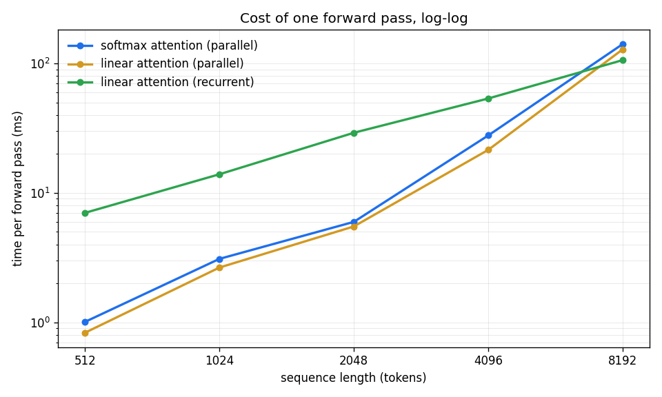

<!-- .slide: id="title" class="section-divider" data-state="is-section-divider" --> # LLMs 0 to 100 Module 12: The Future of LLMs --- <!-- .slide: id="review-purpose" --> ## What This Module Covers <div class="slide-columns" style="grid-template-columns: repeat(2, 1fr); gap: 34px;"> <div> **First: the review** - Each module in one line - The five most durable concepts - How fast each layer goes stale </div> <div> **Then: the lecture** - Is attention the right primitive? - Three assumptions the course treated as fixed - Whether networks can run programs - Where agents go next </div> </div> This module covers active research. Parts of it will be out of date within a few years. <!-- .element: class="text-lg" style="margin-top: 12px;" --> --- <!-- .slide: id="review-stack" --> ## Course Overview <div class="bench-table"> <table> <thead><tr><th>Module</th><th>What it added</th></tr></thead> <tbody> <tr><td>1 · Introduction</td><td>Tokens, probability, and entropy make text a <strong>prediction problem</strong></td></tr> <tr><td>2 · Perceptrons</td><td>Gradient descent makes any differentiable model <strong>learnable</strong></td></tr> <tr><td>3 · Attention</td><td>A <strong>soft lookup</strong> over the whole sequence, with no recurrence</td></tr> <tr><td>4 · Architectures</td><td>The <strong>transformer block</strong>: attention, an MLP, residuals, normalization</td></tr> <tr><td>5 · Pretraining</td><td><strong>Capability</strong>, and loss that falls as a power law in compute</td></tr> <tr><td>6 · Finetuning</td><td>An <strong>interface</strong>: the chat template, instruction following</td></tr> <tr><td>7 · RL</td><td><strong>Judgment</strong>: reasoning trained in with verifiable rewards</td></tr> <tr><td>8 · Multimodal</td><td>Other modalities become <strong>tokens in the same sequence</strong></td></tr> <tr><td>9 · Evaluation</td><td>Whether any of it <strong>actually worked</strong></td></tr> <tr><td>10 · Deployment</td><td>Weights become <strong>tokens per second</strong> at a price</td></tr> <tr><td>11 · Applications</td><td>Prompts, retrieval, tools, and loops turn an API into a <strong>product</strong></td></tr> </tbody> </table> </div> --- <!-- .slide: id="review-throughline" --> ## Everything Is Next-Token Prediction Every module worked on one problem: **predicting the next token.** <div class="slide-columns" style="grid-template-columns: repeat(3, 1fr); gap: 26px;"> <div> **Modules 1 to 4: represent** - Count - Learn - Attend - Stack </div> <div> **Modules 5 to 8: train** - Scale - Instruct - Judge - Add modalities </div> <div> **Modules 9 to 11: check and ship** - Measure - Serve - Build a product </div> </div> RL, retrieval, and agents are all built on top of next-token prediction. <!-- .element: class="text-lg" style="margin-top: 14px;" --> --- <!-- .slide: id="review-keepers" --> ## The Five Most Durable Concepts None of these depend on any particular architecture. <div class="card-grid cols-3"> <div class="card"><h4>Information theory</h4><p>Cross-entropy is <strong>average surprise</strong>. Every loss you minimized was a bit count.</p></div> <div class="card"><h4>Gradient descent</h4><p>The only learning algorithm this course ever used. Everything else was a choice of what to differentiate.</p></div> <div class="card"><h4>Attention</h4><p>Attention is $\mathrm{softmax}(QK^\top/\sqrt{d_k})V$ and nothing more.</p></div> <div class="card"><h4>Scaling laws</h4><p>Loss falls <strong>predictably</strong> with compute. That predictability is why anyone spends a billion dollars on a training run.</p></div> <div class="card"><h4>Evaluation</h4><p>You cannot improve what you <strong>cannot measure</strong>, and most measurements are worse than they look.</p></div> </div> --- <!-- .slide: id="review-halflife" --> ## Half-Life of the Material Which parts of the course are worth relearning in five years, and which are not. <div class="bench-table"> <table> <thead><tr><th>Layer</th><th>Half-life</th><th>Status</th></tr></thead> <tbody> <tr><td>The math of Modules 1 and 2</td><td><strong>Permanent</strong></td><td>Entropy and gradient descent are not going to be revised</td></tr> <tr><td>The transformer (Modules 3, 4)</td><td><strong>Dominant, contested</strong></td><td>Nine years old, still winning, with serious challengers</td></tr> <tr><td>The recipe (Modules 5 to 7)</td><td><strong>Converging, moving</strong></td><td>Pretrain, finetune, RL is now standard, but the mix shifts yearly</td></tr> <tr><td>The application layer (Module 11)</td><td><strong>Turns over yearly</strong></td><td>Frameworks and patterns you learned this month may not survive the year</td></tr> </tbody> </table> </div> The foundations at the bottom of the table stay useful the longest. <!-- .element: class="text-lg" style="margin-top: 14px;" --> --- <!-- .slide: id="sidequest-gnn" --> ## <span class="side-quest-badge">Side Quest</span> Transformers Are Graph Neural Networks Attention is **message passing on a fully connected graph:** - Every token is a node - Attention weights are soft edges - Value aggregation is the message step <div class="slide-columns" style="grid-template-columns: repeat(2, 1fr); gap: 34px;"> <div> **Graph neural networks** The graph is given as input, and a node only exchanges messages with its neighbors. </div> <div> **Attention** No graph is given: every token can attend to every other, and the weights on those edges are learned per input. That costs $O(n^2)$. </div> </div> Any nodes work: image patches, atoms, functions, users. The GNN literature covers the same machinery. <!-- .element: class="text-lg" style="margin-top: 12px;" --> --- <!-- .slide: id="review-roadmap" --> ## Assumptions Built Into Today's LLMs Every model in this course made the same seven choices. Each one is being tested. <div class="bench-table dense"> <table> <thead><tr><th>The assumption</th><th>What replaces it</th></tr></thead> <tbody> <tr><td>The model predicts <strong>tokens</strong> from a fixed vocabulary</td><td>Byte-level models and concept models</td></tr> <tr><td>Every token <strong>attends to every earlier token</strong></td><td>Linear attention, state-space models, and hybrids</td></tr> <tr><td>Text is generated <strong>left to right</strong></td><td>Diffusion language models</td></tr> <tr><td>Every token gets the <strong>same computation</strong></td><td>Looped depth and latent reasoning</td></tr> <tr><td>Networks <strong>approximate</strong> rather than run exact programs</td><td>Compiled transformers and neurosymbolic systems</td></tr> <tr><td>Learning <strong>stops at deployment</strong></td><td>Test-time training and nested learning</td></tr> <tr><td>One model serves <strong>one user</strong> and spends a person's money</td><td>Agent swarms, shared sessions, and self-funding agents</td></tr> </tbody> </table> </div> --- <!-- .slide: id="divider-units" class="section-divider" data-state="is-section-divider" --> # What Should a Model Predict? Tokens, bytes, or whole sentences --- <!-- .slide: id="units-tokens" --> ## Every Model in This Course Predicted Tokens Module 4 called this the **unit problem**. Bytes give tiny vocabularies and very long sequences. Words give huge vocabularies and break on typos. BPE was the compromise. <div class="slide-columns" style="grid-template-columns: repeat(2, 1fr); gap: 34px;"> <div> **What BPE fixed** - A vocabulary of tens of thousands of subwords - Any string stays representable - Common words cost one token </div> <div> **What it left behind** - The vocabulary is frozen before training starts - Letters hide inside tokens, so spelling and counting characters are hard - Every token gets one prediction step, whether it is "the" or the key word of a proof </div> </div> Research now pushes the unit both ways: smaller than a token, and much larger. <!-- .element: class="text-lg" style="margin-top: 12px;" --> --- <!-- .slide: id="units-bytes" --> ## Byte Models Drop the Tokenizer <div class="bench-table dense"> <table> <thead><tr><th>Model</th><th>How it groups bytes</th><th>Result</th></tr></thead> <tbody> <tr><td><strong>ByT5</strong> (Google, 2021)</td><td>No grouping. The T5 encoder-decoder runs on raw UTF-8 bytes, with a deeper encoder</td><td>Competitive with token-based mT5 and more robust to typos, but sequences are several times longer and slower to run</td></tr> <tr><td><strong>MEGABYTE</strong> (Meta, 2023)</td><td>Fixed-size patches of bytes</td><td>Models sequences of over a million bytes</td></tr> <tr><td><strong>BLT</strong> (Meta, 2024)</td><td>Variable patches, cut where the next byte is hard to predict</td><td>Matches Llama 3 at equal training compute, up to 8B parameters</td></tr> <tr><td><strong>H-Net</strong> (2025)</td><td>Chunk boundaries learned end to end with the model</td><td>Reports beating a BPE transformer at equal compute</td></tr> </tbody> </table> </div> Each step keeps raw bytes as input but groups them before the large model sees them, so the sequence stays short. <!-- .element: class="text-lg" style="margin-top: 12px;" --> --- <!-- .slide: id="units-megabyte" --> ## MEGABYTE Splits Bytes Into Patches <div class="svg-figure"> <svg viewBox="0 0 1000 285" role="img" aria-label="The bytes of the text 'the cat sat down' are split into four fixed patches of four bytes. Each patch becomes one position for a global transformer. For each patch, the global output feeds a small local model that predicts the bytes of the following patch one at a time."> <text x="20" y="257" fill="#f5a623" font-size="18" font-family="Inter, sans-serif">bytes</text> <g fill="none" stroke="#f5a623" stroke-width="2"><rect x="100" y="232" width="200" height="36" /><rect x="300" y="232" width="200" height="36" /><rect x="500" y="232" width="200" height="36" /><rect x="700" y="232" width="200" height="36" /></g> <g stroke="#2a3450" stroke-width="1.5"><line x1="150" y1="232" x2="150" y2="268" /><line x1="200" y1="232" x2="200" y2="268" /><line x1="250" y1="232" x2="250" y2="268" /><line x1="350" y1="232" x2="350" y2="268" /><line x1="400" y1="232" x2="400" y2="268" /><line x1="450" y1="232" x2="450" y2="268" /><line x1="550" y1="232" x2="550" y2="268" /><line x1="600" y1="232" x2="600" y2="268" /><line x1="650" y1="232" x2="650" y2="268" /><line x1="750" y1="232" x2="750" y2="268" /><line x1="800" y1="232" x2="800" y2="268" /><line x1="850" y1="232" x2="850" y2="268" /></g> <g fill="#e8eaf0" font-size="19" font-family="Inter, sans-serif" text-anchor="middle"><text x="125" y="257">t</text><text x="175" y="257">h</text><text x="225" y="257">e</text><text x="275" y="257">␣</text><text x="325" y="257">c</text><text x="375" y="257">a</text><text x="425" y="257">t</text><text x="475" y="257">␣</text><text x="525" y="257">s</text><text x="575" y="257">a</text><text x="625" y="257">t</text><text x="675" y="257">␣</text><text x="725" y="257">d</text><text x="775" y="257">o</text><text x="825" y="257">w</text><text x="875" y="257">n</text></g> <text x="920" y="257" fill="#8892a4" font-size="15" font-family="Inter, sans-serif">4 patches</text> <g stroke="#8892a4" stroke-width="2" fill="none"><path d="M 200 232 L 200 200" /><path d="M 400 232 L 400 200" /><path d="M 600 232 L 600 200" /><path d="M 800 232 L 800 200" /><path d="M 200 150 L 200 104" /><path d="M 400 150 L 400 104" /><path d="M 600 150 L 600 104" /><path d="M 800 150 L 800 104" /></g> <g fill="#8892a4"><path d="M 200 192 l -6 10 l 12 0 z" /><path d="M 400 192 l -6 10 l 12 0 z" /><path d="M 600 192 l -6 10 l 12 0 z" /><path d="M 800 192 l -6 10 l 12 0 z" /><path d="M 200 96 l -6 10 l 12 0 z" /><path d="M 400 96 l -6 10 l 12 0 z" /><path d="M 600 96 l -6 10 l 12 0 z" /><path d="M 800 96 l -6 10 l 12 0 z" /></g> <rect x="100" y="150" width="800" height="42" rx="6" fill="none" stroke="#4a9eff" stroke-width="3" /> <text x="500" y="177" fill="#4a9eff" font-size="18" font-family="Inter, sans-serif" text-anchor="middle">global transformer: one position per patch</text> <g fill="none" stroke="#50c878" stroke-width="2"><rect x="115" y="40" width="170" height="54" rx="6" /><rect x="315" y="40" width="170" height="54" rx="6" /><rect x="515" y="40" width="170" height="54" rx="6" /><rect x="715" y="40" width="170" height="54" rx="6" /></g> <g fill="#50c878" font-size="16" font-family="Inter, sans-serif" text-anchor="middle"><text x="200" y="64">local model</text><text x="400" y="64">local model</text><text x="600" y="64">local model</text><text x="800" y="64">local model</text><text x="200" y="84" fill="#8892a4" font-size="14">bytes of patch 2</text><text x="400" y="84" fill="#8892a4" font-size="14">bytes of patch 3</text><text x="600" y="84" fill="#8892a4" font-size="14">bytes of patch 4</text><text x="800" y="84" fill="#8892a4" font-size="14">bytes of patch 5</text></g> </svg> </div> - With patches of $P$ bytes, the global model's sequence is $P$ times shorter, so its attention costs $P^2$ times less - Each small local model predicts the next patch one byte at a time - Fixed patches ignore the text and can cut a word in half. BLT and H-Net place the boundaries by content --- <!-- .slide: id="units-concepts" --> ## Concept Models Predict Bigger Units Than Tokens <div class="svg-figure"> <svg viewBox="0 0 1000 290" role="img" aria-label="The same sentence split five ways, from finest to coarsest. Bytes: one unit per character. Tokens: about one unit per word. Byte Latent Transformer patches: variable-length groups of bytes, short where the text is hard to predict. CALM: one vector per four tokens. Large Concept Model: one vector for the whole sentence."> <g font-family="Inter, sans-serif" font-size="18"> <text x="20" y="44" fill="#8892a4">bytes</text> <text x="20" y="98" fill="#4a9eff">tokens</text> <text x="20" y="152" fill="#a06bd4">BLT patches</text> <text x="20" y="206" fill="#f5a623">CALM vectors</text> <text x="20" y="260" fill="#50c878">LCM concept</text> </g> <g fill="none" stroke="#8892a4" stroke-width="1.5"> <rect x="200" y="24" width="24" height="30" /><rect x="226" y="24" width="24" height="30" /><rect x="252" y="24" width="24" height="30" /><rect x="278" y="24" width="24" height="30" /><rect x="304" y="24" width="24" height="30" /><rect x="330" y="24" width="24" height="30" /><rect x="356" y="24" width="24" height="30" /><rect x="382" y="24" width="24" height="30" /><rect x="408" y="24" width="24" height="30" /><rect x="434" y="24" width="24" height="30" /><rect x="460" y="24" width="24" height="30" /><rect x="486" y="24" width="24" height="30" /><rect x="512" y="24" width="24" height="30" /><rect x="538" y="24" width="24" height="30" /><rect x="564" y="24" width="24" height="30" /><rect x="590" y="24" width="24" height="30" /><rect x="616" y="24" width="24" height="30" /><rect x="642" y="24" width="24" height="30" /><rect x="668" y="24" width="24" height="30" /><rect x="694" y="24" width="24" height="30" /><rect x="720" y="24" width="24" height="30" /><rect x="746" y="24" width="24" height="30" /><rect x="772" y="24" width="24" height="30" /><rect x="798" y="24" width="24" height="30" /><rect x="824" y="24" width="24" height="30" /><rect x="850" y="24" width="24" height="30" /><rect x="876" y="24" width="24" height="30" /><rect x="902" y="24" width="24" height="30" /><rect x="928" y="24" width="24" height="30" /><rect x="954" y="24" width="24" height="30" /> </g> <g fill="none" stroke="#4a9eff" stroke-width="2"> <rect x="200" y="78" width="102" height="30" /><rect x="304" y="78" width="128" height="30" /><rect x="434" y="78" width="76" height="30" /><rect x="512" y="78" width="154" height="30" /><rect x="668" y="78" width="102" height="30" /><rect x="772" y="78" width="128" height="30" /><rect x="902" y="78" width="76" height="30" /> </g> <g fill="none" stroke="#a06bd4" stroke-width="2"> <rect x="200" y="132" width="232" height="30" /><rect x="434" y="132" width="50" height="30" /><rect x="486" y="132" width="24" height="30" /><rect x="512" y="132" width="258" height="30" /><rect x="772" y="132" width="206" height="30" /> </g> <g fill="none" stroke="#f5a623" stroke-width="2"> <rect x="200" y="186" width="438" height="30" /><rect x="642" y="186" width="336" height="30" /> </g> <rect x="200" y="240" width="778" height="30" fill="none" stroke="#50c878" stroke-width="3" /> <text x="589" y="261" fill="#50c878" font-size="17" font-family="Inter, sans-serif" text-anchor="middle">one 1024-number vector for the whole sentence</text> </svg> </div> - **BLT** (Meta, 2024) groups bytes into patches, making a patch shorter wherever the next byte is hard to predict - **CALM** (2025) compresses every 4 tokens into one vector, cutting the number of generation steps by 4 - **Large Concept Models** (Meta, 2024) predict the embedding of the **next sentence** --- <!-- .slide: id="units-lcm" --> ## Concept Models Plan by the Sentence <div class="svg-figure"> <svg viewBox="0 0 1000 230" role="img" aria-label="Sentences are encoded by a frozen SONAR encoder into one vector each. A transformer reads the sequence of sentence vectors and predicts the next one. A frozen SONAR decoder turns the predicted vector back into text in any of its supported languages."> <rect x="20" y="70" width="160" height="70" fill="none" stroke="#8892a4" stroke-width="2" /> <text x="100" y="100" fill="#e8eaf0" font-size="18" font-family="Inter, sans-serif" text-anchor="middle">sentences</text> <text x="100" y="124" fill="#8892a4" font-size="15" font-family="Inter, sans-serif" text-anchor="middle">text or speech</text> <path d="M 180 105 L 212 105" stroke="#8892a4" stroke-width="2" fill="none" /> <path d="M 220 105 l -12 -6 l 0 12 z" fill="#8892a4" /> <rect x="220" y="70" width="170" height="70" fill="none" stroke="#4a9eff" stroke-width="2" /> <text x="305" y="100" fill="#4a9eff" font-size="18" font-family="Inter, sans-serif" text-anchor="middle">SONAR encoder</text> <text x="305" y="124" fill="#8892a4" font-size="15" font-family="Inter, sans-serif" text-anchor="middle">frozen</text> <path d="M 390 105 L 422 105" stroke="#8892a4" stroke-width="2" fill="none" /> <path d="M 430 105 l -12 -6 l 0 12 z" fill="#8892a4" /> <rect x="430" y="60" width="200" height="90" fill="none" stroke="#50c878" stroke-width="3" /> <text x="530" y="98" fill="#50c878" font-size="19" font-family="Inter, sans-serif" text-anchor="middle">Concept model</text> <text x="530" y="124" fill="#8892a4" font-size="15" font-family="Inter, sans-serif" text-anchor="middle">predicts the next vector</text> <path d="M 630 105 L 662 105" stroke="#8892a4" stroke-width="2" fill="none" /> <path d="M 670 105 l -12 -6 l 0 12 z" fill="#8892a4" /> <rect x="670" y="70" width="170" height="70" fill="none" stroke="#4a9eff" stroke-width="2" /> <text x="755" y="100" fill="#4a9eff" font-size="18" font-family="Inter, sans-serif" text-anchor="middle">SONAR decoder</text> <text x="755" y="124" fill="#8892a4" font-size="15" font-family="Inter, sans-serif" text-anchor="middle">frozen</text> <path d="M 840 105 L 872 105" stroke="#8892a4" stroke-width="2" fill="none" /> <path d="M 880 105 l -12 -6 l 0 12 z" fill="#8892a4" /> <text x="886" y="111" fill="#e8eaf0" font-size="17" font-family="Inter, sans-serif">next sentence</text> <text x="500" y="200" fill="#8892a4" font-size="17" font-family="Inter, sans-serif" text-anchor="middle">The model never sees a token. Text appears only at the decoder.</text> </svg> </div> <div class="slide-columns" style="grid-template-columns: repeat(2, 1fr); gap: 34px;"> <div> **Why it might help** - A ten-sentence plan is ten predictions, not thousands - One concept space covers SONAR's 200 languages - Close to LeCun's argument for predicting in representation space </div> <div> **What is still missing** - There is no exact likelihood, so training uses regression or diffusion on vectors - Most experiments use 1.6B-parameter models, small by current standards - SONAR-LLM (2025) adds a token-level loss back through the decoder </div> </div> --- <!-- .slide: id="divider-attention" class="section-divider" data-state="is-section-divider" --> # Is Attention the Right Primitive? What replaces quadratic attention --- <!-- .slide: id="attention-bill" --> ## The Cost of Attention Two costs, both paid on every request. <div class="slide-columns" style="grid-template-columns: repeat(2, 1fr); gap: 34px;"> <div> **Compute: $O(n^2)$** - Score matrix is $n \times n$ - Double the context, quadruple the work - FlashAttention shrank the constant, not the exponent </div> <div> **Memory: the KV cache** - Stores a key and value per generated token - Grows linearly with sequence length - Dominates serving memory at long context </div> </div> Removing these costs requires giving something up. <!-- .element: class="text-lg" style="margin-top: 12px;" --> --- <!-- .slide: id="attention-drop-softmax" --> ## Linear Attention Removes the Softmax $$\text{softmax attention:} \quad \mathbf y_t = \frac{\sum_{i \le t} \textcolor{#f5a623}{\exp(\mathbf q_t^\top \mathbf k_i)} \mathbf v_i}{\sum_{i \le t} \textcolor{#f5a623}{\exp(\mathbf q_t^\top \mathbf k_i)}}$$ $$\text{linear attention:} \quad \mathbf y_t = \frac{\sum_{i \le t} \textcolor{#f5a623}{\phi(\mathbf q_t)^\top \phi(\mathbf k_i)} \mathbf v_i}{\sum_{i \le t} \textcolor{#f5a623}{\phi(\mathbf q_t)^\top \phi(\mathbf k_i)}}$$ <div class="slide-columns" style="grid-template-columns: repeat(2, 1fr); gap: 34px;"> <div> **The terms** - $\mathbf q_t$: the query of the current token $t$. $\mathbf k_i, \mathbf v_i$: the key and value of an earlier token $i$ - $\phi$: a function applied to each entry that keeps it positive. A common choice equals $x + 1$ for $x > 0$ and $e^x$ for $x \le 0$ - Top: earlier values, weighted by score. Bottom: the total weight, so the weights add to 1 </div> <div> **Why the change matters** - $\exp(\mathbf q_t^\top \mathbf k_i)$ cannot be split into a query part and a key part - In the new score, $\phi(\mathbf q_t)$ is the same for every $i$, so it factors out of the sum - The query still sets the output. It is applied once, after the sum, instead of once per earlier token </div> </div> --- <!-- .slide: id="attention-grouping" --> ## Associativity Determines the Cost <div class="svg-figure"> <svg viewBox="0 0 1000 400" role="img" aria-label="Two ways to group the same matrix product. Grouping left builds an n by n intermediate matrix, 268 megabytes at 8192 tokens. Grouping right builds a d by d intermediate state, 16 kilobytes regardless of sequence length."> <text x="20" y="42" fill="#8892a4" font-size="20" font-family="Inter, sans-serif">Group to the left</text> <text x="20" y="86" fill="#e8eaf0" font-size="30" font-family="Inter, sans-serif">( φ(Q) φ(K)ᵀ ) V</text> <path d="M 300 76 L 372 76" stroke="#8892a4" stroke-width="2" fill="none" /> <path d="M 372 76 l -10 -5 l 0 10 z" fill="#8892a4" /> <rect x="392" y="12" width="130" height="130" fill="none" stroke="#f5a623" stroke-width="3" /> <text x="457" y="84" fill="#f5a623" font-size="26" font-family="Inter, sans-serif" text-anchor="middle">n × n</text> <text x="556" y="60" fill="#e8eaf0" font-size="22" font-family="Inter, sans-serif">8192 × 8192 at 8k context</text> <text x="556" y="94" fill="#f5a623" font-size="22" font-family="Inter, sans-serif">268 MB, and it grows with n²</text> <line x1="20" y1="196" x2="980" y2="196" stroke="#2a3450" stroke-width="2" /> <text x="20" y="248" fill="#8892a4" font-size="20" font-family="Inter, sans-serif">Group to the right</text> <text x="20" y="292" fill="#e8eaf0" font-size="30" font-family="Inter, sans-serif">φ(Q) ( φ(K)ᵀ V )</text> <path d="M 300 282 L 372 282" stroke="#8892a4" stroke-width="2" fill="none" /> <path d="M 372 282 l -10 -5 l 0 10 z" fill="#8892a4" /> <rect x="392" y="270" width="26" height="26" fill="none" stroke="#50c878" stroke-width="3" /> <text x="440" y="292" fill="#50c878" font-size="26" font-family="Inter, sans-serif">d × d</text> <text x="556" y="266" fill="#e8eaf0" font-size="22" font-family="Inter, sans-serif">64 × 64, at every context length</text> <text x="556" y="300" fill="#50c878" font-size="22" font-family="Inter, sans-serif">16 KB, and it never grows</text> </svg> </div> Matrix multiplication is associative, so both orders give the same answer. Only one of them ever builds the big object. Katharopoulos et al. (2020) called the paper "Transformers are RNNs" for this reason. <!-- .element: class="text-lg" --> --- <!-- .slide: id="attention-kv-memory" --> ## The State Works Like a Lookup Table <div class="svg-figure"> <svg viewBox="0 0 1000 310" role="img" aria-label="Three tokens are written into the state. Each has a one-hot key: city is (1,0,0) with value Paris, color is (0,1,0) with value blue, time is (0,0,1) with value 3pm. Adding k times v transpose puts each value into the row its key points at, so S becomes a table with rows Paris, blue, and 3pm. Reading with the query (0,1,0) multiplies out to row two, which returns blue."> <text x="20" y="30" fill="#8892a4" font-size="19" font-family="Inter, sans-serif">Write each token: S += k vᵀ</text> <g font-family="Inter, sans-serif" font-size="19"> <text x="20" y="85" fill="#f5a623">city</text><text x="100" y="85" fill="#e8eaf0">k = (1, 0, 0)</text><text x="250" y="85" fill="#e8eaf0">v = Paris</text> <text x="20" y="135" fill="#4a9eff">color</text><text x="100" y="135" fill="#e8eaf0">k = (0, 1, 0)</text><text x="250" y="135" fill="#e8eaf0">v = blue</text> <text x="20" y="185" fill="#50c878">time</text><text x="100" y="185" fill="#e8eaf0">k = (0, 0, 1)</text><text x="250" y="185" fill="#e8eaf0">v = 3pm</text> </g> <path d="M 370 130 L 432 130" stroke="#8892a4" stroke-width="2" fill="none" /> <path d="M 440 130 l -12 -6 l 0 12 z" fill="#8892a4" /> <text x="560" y="44" fill="#e8eaf0" font-size="20" font-family="Inter, sans-serif" text-anchor="middle">S</text> <rect x="450" y="60" width="220" height="40" fill="#f5a623" fill-opacity="0.2" stroke="#f5a623" stroke-width="2" /> <rect x="450" y="110" width="220" height="40" fill="#4a9eff" fill-opacity="0.2" stroke="#4a9eff" stroke-width="3" /> <rect x="450" y="160" width="220" height="40" fill="#50c878" fill-opacity="0.2" stroke="#50c878" stroke-width="2" /> <g font-family="Inter, sans-serif" font-size="18" text-anchor="middle"> <text x="560" y="86" fill="#f5a623">row 1: Paris</text><text x="560" y="136" fill="#4a9eff">row 2: blue</text><text x="560" y="186" fill="#50c878">row 3: 3pm</text> </g> <text x="840" y="30" fill="#8892a4" font-size="19" font-family="Inter, sans-serif" text-anchor="middle">Read: qᵀ S</text> <text x="840" y="72" fill="#a06bd4" font-size="19" font-family="Inter, sans-serif" text-anchor="middle">q = (0, 1, 0)</text> <path d="M 670 130 L 802 130" stroke="#a06bd4" stroke-width="2" fill="none" /> <path d="M 810 130 l -12 -6 l 0 12 z" fill="#a06bd4" /> <rect x="815" y="110" width="150" height="40" fill="none" stroke="#4a9eff" stroke-width="3" /> <text x="890" y="136" fill="#4a9eff" font-size="19" font-family="Inter, sans-serif" text-anchor="middle">blue</text> <line x1="20" y1="228" x2="980" y2="228" stroke="#2a3450" stroke-width="2" /> <text x="20" y="262" fill="#e8eaf0" font-size="20" font-family="Inter, sans-serif">With one-hot keys, writing fills the row a key points at, and reading picks a row.</text> <text x="20" y="296" fill="#f5a623" font-size="20" font-family="Inter, sans-serif">Real keys overlap, so rows mix and reads blend. A d × d state holds about d clean pairs.</text> </svg> </div> This $\mathbf S_t = \sum_{i \le t} \phi(\mathbf k_i) \mathbf v_i^\top$ is the linear-attention state. Every variant since 2020 changes one thing: the rule for writing to it. <!-- .element: class="text-lg" --> --- <!-- .slide: id="attention-softmax-price" --> ## What the Softmax Provides Dropping it costs two things. <div class="slide-columns" style="grid-template-columns: repeat(2, 1fr); gap: 34px;"> <div> **Sharpness** - The exponential lets **one key dominate** - Attention can select one token out of thousands - A linear kernel spreads weight across many keys </div> <div> **Unbounded memory** - All knowledge of the past must fit in $\mathbf S$, a **fixed-size** matrix - A KV cache reproduces any earlier token exactly - A fixed state cannot </div> </div> This is the RNN bottleneck, reintroduced deliberately. Open question: is a fixed-size summary good enough? <!-- .element: class="text-lg" style="margin-top: 12px;" --> --- <!-- .slide: id="attention-write-rules" --> ## Five Rules for Writing to the State Plain linear attention only adds. A full memory needs a way to **forget** and a way to **overwrite**. <div class="bench-table dense"> <table> <thead><tr><th>Model</th><th>Update rule</th><th>What changed</th></tr></thead> <tbody> <tr><td><strong>Linear attention</strong> (2020)</td><td>$\mathbf S_t = \mathbf S_{t-1} + \mathbf k_t \mathbf v_t^\top$</td><td>Adds forever and never forgets</td></tr> <tr><td><strong>RetNet</strong> (2023)</td><td>$\mathbf S_t = \gamma \mathbf S_{t-1} + \mathbf k_t \mathbf v_t^\top$</td><td>Old memories fade at a fixed rate $\gamma$</td></tr> <tr><td><strong>Mamba-2</strong>, <strong>GLA</strong> (2024)</td><td>$\mathbf S_t = \alpha_t \mathbf S_{t-1} + \mathbf k_t \mathbf v_t^\top$</td><td>The fade rate $\alpha_t$ is computed from the current token</td></tr> <tr><td><strong>DeltaNet</strong> (2021, 2024)</td><td>$\mathbf S_t = \mathbf S_{t-1} + \beta_t \mathbf k_t (\mathbf v_t - \mathbf S_{t-1}^\top \mathbf k_t)^\top$</td><td>Writes only the error, so a new value replaces the old one</td></tr> <tr><td><strong>Gated DeltaNet</strong> (2025)</td><td>$\alpha_t$ gate plus the delta write</td><td>Forgets and overwrites. Used in Qwen3-Next and Kimi Linear</td></tr> </tbody> </table> </div> In this table, $\mathbf k_t$ stands for $\phi(\mathbf k_t)$. Every rule still updates one fixed-size $\mathbf S$ per token, so the cost grows linearly with sequence length. <!-- .element: class="text-lg" style="margin-top: 10px;" --> --- <!-- .slide: id="attention-delta-overwrite" --> ## The Delta Rule Overwrites a Row <div class="svg-figure"> <svg viewBox="0 0 1000 350" role="img" aria-label="Earlier the sentence I live in Paris wrote Paris into the city row. A new sentence, Actually, I moved to Rome, arrives; its token Rome has key city and value Rome. An additive write adds Rome to the row, which then holds Paris plus Rome, and a read returns a blend. A delta write first reads the row and gets Paris, computes the error Rome minus Paris, and adds that error, so the row holds Rome."> <text x="20" y="30" fill="#8892a4" font-size="18" font-family="Inter, sans-serif">Earlier in the chat:</text><text x="200" y="30" fill="#e8eaf0" font-size="18" font-family="Inter, sans-serif">"I live in Paris." The token "Paris" wrote key city, value Paris.</text><text x="20" y="62" fill="#8892a4" font-size="18" font-family="Inter, sans-serif">New sentence:</text><text x="200" y="62" fill="#e8eaf0" font-size="18" font-family="Inter, sans-serif">"Actually, I moved to Rome." The token "Rome" writes key city, value Rome.</text> <text x="20" y="138" fill="#4a9eff" font-size="20" font-family="Inter, sans-serif">Additive</text> <rect x="170" y="112" width="200" height="40" fill="none" stroke="#8892a4" stroke-width="2" /> <text x="270" y="138" fill="#e8eaf0" font-size="19" font-family="Inter, sans-serif" text-anchor="middle">row: Paris</text> <path d="M 370 132 L 452 132" stroke="#8892a4" stroke-width="2" fill="none" /> <path d="M 460 132 l -12 -6 l 0 12 z" fill="#8892a4" /> <text x="415" y="122" fill="#8892a4" font-size="16" font-family="Inter, sans-serif" text-anchor="middle">+ Rome</text> <rect x="460" y="112" width="250" height="40" fill="none" stroke="#e06c75" stroke-width="2" /> <text x="585" y="138" fill="#e06c75" font-size="19" font-family="Inter, sans-serif" text-anchor="middle">row: Paris + Rome</text> <text x="730" y="138" fill="#e06c75" font-size="18" font-family="Inter, sans-serif">reads return a blend</text> <line x1="20" y1="182" x2="980" y2="182" stroke="#2a3450" stroke-width="2" /> <text x="20" y="250" fill="#50c878" font-size="20" font-family="Inter, sans-serif">Delta</text> <g fill="none" stroke-width="2"> <rect x="110" y="210" width="190" height="64" stroke="#8892a4" /><rect x="340" y="210" width="190" height="64" stroke="#4a9eff" /><rect x="570" y="210" width="190" height="64" stroke="#f5a623" /><rect x="800" y="210" width="180" height="64" stroke="#50c878" stroke-width="3" /> </g> <g font-family="Inter, sans-serif" text-anchor="middle"> <text x="205" y="238" fill="#e8eaf0" font-size="18">row: Paris</text><text x="205" y="262" fill="#8892a4" font-size="15">before</text> <text x="435" y="238" fill="#4a9eff" font-size="18">1. read: Paris</text><text x="435" y="262" fill="#8892a4" font-size="15">read with key city</text> <text x="665" y="238" fill="#f5a623" font-size="18">2. Rome − Paris</text><text x="665" y="262" fill="#8892a4" font-size="15">the error</text> <text x="890" y="238" fill="#50c878" font-size="18">3. row: Rome</text><text x="890" y="262" fill="#8892a4" font-size="15">Paris + error</text> </g> <g stroke="#8892a4" stroke-width="2" fill="none"><path d="M 300 242 L 332 242" /><path d="M 530 242 L 562 242" /><path d="M 760 242 L 792 242" /></g> <g fill="#8892a4"><path d="M 340 242 l -10 -5 l 0 10 z" /><path d="M 570 242 l -10 -5 l 0 10 z" /><path d="M 800 242 l -10 -5 l 0 10 z" /></g> <text x="20" y="326" fill="#8892a4" font-size="18" font-family="Inter, sans-serif">Writing the error instead of the value is the whole change. Adding the error to Paris lands exactly on Rome.</text> </svg> </div> - DeltaNet's rule: $\mathbf S_t = \mathbf S_{t-1} + \beta_t \mathbf k_t (\mathbf v_t - \mathbf S_{t-1}^\top \mathbf k_t)^\top$. The term in parentheses is the error - $\beta_t$ sets how much of the error to write: $\beta_t = 1$ replaces the value, $\beta_t = 0.5$ moves it halfway - If the key is new, the read returns about zero, so the error is just $\mathbf v_t$ and the write is an ordinary add - The model learns during training to give both sentences' tokens a similar key, so the second write lands in the same row --- <!-- .slide: id="attention-delta" --> ## The Delta Rule Is a Gradient Step Treat $\mathbf S$ as a tiny linear model. Each token is one training example: input $\mathbf k_t$, target $\mathbf v_t$. 1. Prediction, what the memory returns now: $\hat{\mathbf v} = \mathbf S^\top \mathbf k_t$ 2. Loss: $\ell = \frac{1}{2} \lVert \hat{\mathbf v} - \mathbf v_t \rVert^2$ 3. Gradient: $\nabla_{\mathbf S} \ell = \mathbf k_t (\hat{\mathbf v} - \mathbf v_t)^\top$ 4. One step with learning rate $\beta_t$: $\mathbf S \leftarrow \mathbf S + \beta_t \mathbf k_t (\mathbf v_t - \hat{\mathbf v})^\top$, which is the delta rule <div class="bench-table"> <table> <thead><tr><th>Loss on one key-value pair</th><th>One gradient step gives</th></tr></thead> <tbody> <tr><td>Dot product $-\langle \mathbf S^\top \mathbf k_t, \mathbf v_t \rangle$: push the read toward $\mathbf v_t$ without limit</td><td>$\mathbf S + \beta_t \mathbf k_t \mathbf v_t^\top$, plain linear attention</td></tr> <tr><td>Squared error $\frac{1}{2} \lVert \mathbf S^\top \mathbf k_t - \mathbf v_t \rVert^2$: make the read equal $\mathbf v_t$</td><td>$\mathbf S + \beta_t \mathbf k_t (\mathbf v_t - \mathbf S^\top \mathbf k_t)^\top$, DeltaNet</td></tr> </tbody> </table> </div> The state is a model trained while it reads, one step per token. The section on continual learning builds on this. <!-- .element: class="text-lg" style="margin-top: 12px;" --> --- <div class="figure-card">  <div class="figure-info"> ## Albert Gu <!-- .element: class="fragment fade-in" --> <div class="fragment fade-in"> ### S4 (2021), Mamba (2023) Built the state-space line, the most serious architectural challenger to the transformer since 2017. S4 derived a sequence model from a continuous-time dynamical system, an idea from control theory, not NLP. Mamba, with Tri Dao, made state transitions depend on the input and became competitive at scale. Co-author Tri Dao wrote FlashAttention, the work that made exact attention fast on real hardware. The person who made attention efficient is also building its replacement. This is an engineering argument, not a fight between camps. </div> </div> </div> --- <!-- .slide: id="attention-s4-ode" --> ## S4 Starts From a Differential Equation S4 stands for **Structured State Space Sequence** model (Gu, Goel, and Ré, 2021). $$h'(t) = A h(t) + B x(t) \qquad y(t) = C h(t)$$ <div class="svg-figure"> <svg viewBox="0 0 1000 156" role="img" aria-label="Block diagram. The input x of t is scaled by B and added to A times the state, giving the rate of change h prime of t, which integrates into the state h of t. The state is read out by C to give y of t, and the same state signal feeds back through A. The junction adds; the sign comes from A, whose entries are chosen so the state decays toward zero when there is no input."> <text x="60" y="71" fill="#f5a623" font-size="20" font-family="Inter, sans-serif" text-anchor="middle">x(t)</text> <path d="M 90 65 L 142 65" stroke="#8892a4" stroke-width="2" fill="none" /><path d="M 150 65 l -10 -5 l 0 10 z" fill="#8892a4" /> <rect x="150" y="40" width="80" height="50" fill="none" stroke="#f5a623" stroke-width="2" /> <text x="190" y="72" fill="#f5a623" font-size="20" font-family="Inter, sans-serif" text-anchor="middle">B</text> <path d="M 230 65 L 295 65" stroke="#8892a4" stroke-width="2" fill="none" /><path d="M 303 65 l -10 -5 l 0 10 z" fill="#8892a4" /> <circle cx="325" cy="65" r="22" fill="none" stroke="#e8eaf0" stroke-width="2" /> <text x="325" y="73" fill="#e8eaf0" font-size="24" font-family="Inter, sans-serif" text-anchor="middle">+</text> <path d="M 347 65 L 412 65" stroke="#8892a4" stroke-width="2" fill="none" /><path d="M 420 65 l -10 -5 l 0 10 z" fill="#8892a4" /><text x="383" y="55" fill="#8892a4" font-size="15" font-family="Inter, sans-serif" text-anchor="middle">h′(t)</text> <rect x="420" y="35" width="180" height="60" fill="none" stroke="#4a9eff" stroke-width="3" /> <text x="510" y="62" fill="#4a9eff" font-size="20" font-family="Inter, sans-serif" text-anchor="middle">state h(t)</text> <text x="510" y="84" fill="#8892a4" font-size="15" font-family="Inter, sans-serif" text-anchor="middle">integrates h′(t)</text> <path d="M 600 65 L 682 65" stroke="#8892a4" stroke-width="2" fill="none" /><path d="M 690 65 l -10 -5 l 0 10 z" fill="#8892a4" /> <rect x="690" y="40" width="80" height="50" fill="none" stroke="#50c878" stroke-width="2" /> <text x="730" y="72" fill="#50c878" font-size="20" font-family="Inter, sans-serif" text-anchor="middle">C</text> <path d="M 770 65 L 832 65" stroke="#8892a4" stroke-width="2" fill="none" /><path d="M 840 65 l -10 -5 l 0 10 z" fill="#8892a4" /> <text x="875" y="71" fill="#50c878" font-size="20" font-family="Inter, sans-serif" text-anchor="middle">y(t)</text> <circle cx="640" cy="65" r="5" fill="#8892a4" /><path d="M 640 65 L 640 128 L 528 128" stroke="#a06bd4" stroke-width="2" fill="none" /><path d="M 520 128 l 10 -5 l 0 10 z" fill="#a06bd4" /><rect x="440" y="106" width="80" height="44" fill="none" stroke="#a06bd4" stroke-width="2" /><text x="480" y="135" fill="#a06bd4" font-size="20" font-family="Inter, sans-serif" text-anchor="middle">A</text><path d="M 440 128 L 325 128 L 325 97" stroke="#a06bd4" stroke-width="2" fill="none" /><path d="M 325 88 l -5 10 l 10 0 z" fill="#a06bd4" /> </svg> </div> <div class="slide-columns" style="grid-template-columns: repeat(2, 1fr); gap: 34px;"> <div> **The pieces** - $x$: the input, one number per channel - $h$: the state, a running summary of the input so far - $A$ feeds the state back into its own rate of change. $B$ writes the input in. $C$ reads the output </div> <div> **What each word of the name means** - **State space**: the model is this equation - **Structured**: $A$ has a special form (**HiPPO**) so $h$ summarizes the whole history and is fast to compute - **Sequence**: built for long inputs like audio and text </div> </div> --- <!-- .slide: id="attention-s4-discrete" --> ## Sampling the Equation Gives an RNN Tokens are discrete, so S4 steps the equation forward by a fixed time $\Delta$ per token. <div class="svg-figure"> <svg viewBox="0 0 1000 336" style="max-height: 200px;" role="img" aria-label="A continuous input signal is sampled at intervals of width delta, giving one value per token. Each sample updates the state: the old state is multiplied by A bar, the input is multiplied by B bar and added, and C reads out the prediction. This is a linear RNN."> <text x="20" y="30" fill="#8892a4" font-size="20" font-family="Inter, sans-serif">1. Sample the continuous signal every Δ time units: one sample per token</text> <path d="M 40 90.0 L 50 86.0 L 60 82.1 L 70 78.2 L 80 74.5 L 90 70.9 L 100 67.6 L 110 64.5 L 120 61.7 L 130 59.1 L 140 57.0 L 150 55.2 L 160 53.8 L 170 52.8 L 180 52.2 L 190 52.0 L 200 52.2 L 210 52.9 L 220 54.0 L 230 55.4 L 240 57.3 L 250 59.5 L 260 62.1 L 270 64.9 L 280 68.1 L 290 71.4 L 300 75.0 L 310 78.8 L 320 82.7 L 330 86.6 L 340 90.6 L 350 94.6 L 360 98.5 L 370 102.4 L 380 106.1 L 390 109.6 L 400 112.9 L 410 116.0 L 420 118.8 L 430 121.2 L 440 123.3 L 450 125.1 L 460 126.4 L 470 127.3 L 480 127.9 L 490 128.0 L 500 127.7 L 510 127.0 L 520 125.8 L 530 124.3 L 540 122.4 L 550 120.1 L 560 117.5 L 570 114.6 L 580 111.4 L 590 108.0 L 600 104.4 L 610 100.6 L 620 96.7 L 630 92.8 L 640 88.8 L 650 84.8 L 660 80.9 L 670 77.0 L 680 73.3 L 690 69.8 L 700 66.6 L 710 63.6 L 720 60.8 L 730 58.4 L 740 56.4 L 750 54.7 L 760 53.4 L 770 52.5 L 780 52.1 L 790 52.0 L 800 52.4 L 810 53.2 L 820 54.4 L 830 56.0 L 840 57.9 L 850 60.3 L 860 62.9 L 870 65.9 L 880 69.1 L 890 72.5 L 900 76.2 L 910 80.0 L 920 83.9 L 930 87.9 L 940 91.9 L 950 95.8 L 960 99.7" stroke="#8892a4" stroke-width="2" fill="none" /> <g fill="#f5a623"> <circle cx="120" cy="61.7" r="7" /> <circle cx="280" cy="68.1" r="7" /> <circle cx="440" cy="123.3" r="7" /> <circle cx="600" cy="104.4" r="7" /> <circle cx="760" cy="53.4" r="7" /> <circle cx="920" cy="83.9" r="7" /> </g> <path d="M 120 140 L 280 140" stroke="#f5a623" stroke-width="2" fill="none" /> <path d="M 120 134 L 120 146 M 280 134 L 280 146" stroke="#f5a623" stroke-width="2" /> <text x="200" y="164" fill="#f5a623" font-size="19" font-family="Inter, sans-serif" text-anchor="middle">Δ</text> <line x1="20" y1="186" x2="980" y2="186" stroke="#2a3450" stroke-width="2" /> <text x="20" y="220" fill="#8892a4" font-size="20" font-family="Inter, sans-serif">2. Each sample updates the state</text> <rect x="40" y="240" width="110" height="48" fill="none" stroke="#4a9eff" stroke-width="2" /> <text x="95" y="271" fill="#e8eaf0" font-size="22" font-family="Inter, sans-serif" text-anchor="middle">hₜ₋₁</text> <path d="M 150 264 L 300 264" stroke="#4a9eff" stroke-width="2" fill="none" /> <path d="M 300 264 l -10 -5 l 0 10 z" fill="#4a9eff" /> <text x="225" y="254" fill="#4a9eff" font-size="19" font-family="Inter, sans-serif" text-anchor="middle">× Ā</text> <circle cx="330" cy="264" r="22" fill="none" stroke="#e8eaf0" stroke-width="2" /> <text x="330" y="272" fill="#e8eaf0" font-size="24" font-family="Inter, sans-serif" text-anchor="middle">+</text> <path d="M 330 306 L 330 292" stroke="#f5a623" stroke-width="2" fill="none" /> <path d="M 330 287 l -5 10 l 10 0 z" fill="#f5a623" /> <text x="330" y="326" fill="#f5a623" font-size="19" font-family="Inter, sans-serif" text-anchor="middle">xₜ × B̄</text> <path d="M 352 264 L 470 264" stroke="#4a9eff" stroke-width="2" fill="none" /> <path d="M 470 264 l -10 -5 l 0 10 z" fill="#4a9eff" /> <rect x="480" y="240" width="110" height="48" fill="none" stroke="#4a9eff" stroke-width="2" /> <text x="535" y="271" fill="#e8eaf0" font-size="22" font-family="Inter, sans-serif" text-anchor="middle">hₜ</text> <path d="M 590 264 L 700 264" stroke="#50c878" stroke-width="2" fill="none" /> <path d="M 700 264 l -10 -5 l 0 10 z" fill="#50c878" /> <text x="645" y="254" fill="#50c878" font-size="19" font-family="Inter, sans-serif" text-anchor="middle">× C</text> <text x="715" y="272" fill="#50c878" font-size="22" font-family="Inter, sans-serif">yₜ</text> <text x="780" y="262" fill="#8892a4" font-size="18" font-family="Inter, sans-serif">linear: no tanh,</text> <text x="780" y="286" fill="#8892a4" font-size="18" font-family="Inter, sans-serif">no gate</text> </svg> </div> <div class="slide-columns" style="grid-template-columns: repeat(2, 1fr); gap: 34px;"> <div> **One step forward** - $h$ changes by about $\Delta \cdot h'$ per step: $h_t \approx h_{t-1} + \Delta (A h_{t-1} + B x_t)$ - Group terms: $h_t = \bar A h_{t-1} + \bar B x_t$, with $\bar A \approx I + \Delta A$ and $\bar B \approx \Delta B$ - S4 uses the exact form $\bar A = \exp(\Delta A)$ </div> <div> **A one-number example** - $A = -1$ and $\Delta = 0.1$ give $h_t = 0.9 h_{t-1} + 0.1 x_t$ - Each token keeps 90% of the state and mixes in the input, the same shape as RetNet's update - A bigger $\Delta$ forgets faster. Mamba turns that into a per-token knob </div> </div> --- <!-- .slide: id="attention-s4-conv" --> ## S4 Trains as One Long Convolution Unroll the recurrence. The output is a weighted sum of past inputs, and the list of weights is called the **kernel** $K$. $$y_t = K_0 x_t + K_1 x_{t-1} + K_2 x_{t-2} + \cdots \qquad K_j = C \bar A^j \bar B$$ <div class="svg-figure"> <svg viewBox="0 0 1000 220" style="max-height: 160px;" role="img" aria-label="A row of eight inputs. Beneath it, a kernel of eight weights that shrink with distance into the past, K zero through K seven. The output at the last position is the sum of each input times its kernel weight. The same kernel slides to every position."> <g fill="none" stroke="#f5a623" stroke-width="2"> <rect x="160" y="20" width="90" height="40" /><rect x="260" y="20" width="90" height="40" /><rect x="360" y="20" width="90" height="40" /><rect x="460" y="20" width="90" height="40" /><rect x="560" y="20" width="90" height="40" /><rect x="660" y="20" width="90" height="40" /><rect x="760" y="20" width="90" height="40" /><rect x="860" y="20" width="90" height="40" /> </g> <g fill="#e8eaf0" font-size="19" font-family="Inter, sans-serif" text-anchor="middle"> <text x="205" y="47">x₁</text><text x="305" y="47">x₂</text><text x="405" y="47">x₃</text><text x="505" y="47">x₄</text><text x="605" y="47">x₅</text><text x="705" y="47">x₆</text><text x="805" y="47">x₇</text><text x="905" y="47">x₈</text> </g> <text x="20" y="47" fill="#f5a623" font-size="19" font-family="Inter, sans-serif">inputs</text> <text x="20" y="150" fill="#4a9eff" font-size="19" font-family="Inter, sans-serif">kernel K</text> <g fill="#4a9eff" fill-opacity="0.45" stroke="#4a9eff" stroke-width="1"> <rect x="185" y="152" width="40" height="8" /><rect x="285" y="148" width="40" height="12" /><rect x="385" y="142" width="40" height="18" /><rect x="485" y="134" width="40" height="26" /><rect x="585" y="124" width="40" height="36" /><rect x="685" y="110" width="40" height="50" /><rect x="785" y="94" width="40" height="66" /><rect x="885" y="76" width="40" height="84" /> </g> <g fill="#8892a4" font-size="16" font-family="Inter, sans-serif" text-anchor="middle"> <text x="205" y="182">K₇</text><text x="305" y="182">K₆</text><text x="405" y="182">K₅</text><text x="505" y="182">K₄</text><text x="605" y="182">K₃</text><text x="705" y="182">K₂</text><text x="805" y="182">K₁</text><text x="905" y="182">K₀</text> </g> <text x="560" y="212" fill="#50c878" font-size="19" font-family="Inter, sans-serif" text-anchor="middle">y₈ = sum of each input times its weight. Older inputs get smaller weights.</text> </svg> </div> <div class="slide-columns" style="grid-template-columns: repeat(2, 1fr); gap: 34px;"> <div> **What $K_j$ means** - How much an input from $j$ tokens ago still affects the output now - $\bar B$ writes it in, $\bar A$ shrinks it $j$ times, $C$ reads it out - One-number example: $K_j = 0.1 \times 0.9^j$, so $0.1, 0.09, 0.081, \dots$ </div> <div> **Why it matters** - $K$ is the **same at every position**, so one kernel slides along the sequence - Training: apply $K$ to the whole sequence at once with an FFT - Inference: run the recurrence token by token </div> </div> --- <!-- .slide: id="attention-mamba-delta" --> ## Mamba Makes the Step Size Depend on the Token S4's convolution trick needs $\bar A$, $\bar B$, $C$ fixed for every token. Mamba gives that up: $\Delta_t$, $B_t$, and $C_t$ are computed from $x_t$. <div class="svg-figure"> <svg viewBox="0 0 1000 260" role="img" aria-label="With a large step size, A bar is near zero: the old state is mostly erased and the current token is written in strongly. With a small step size, A bar is near one: the old state is kept and the current token barely enters."> <text x="240" y="30" fill="#50c878" font-size="22" font-family="Inter, sans-serif" text-anchor="middle">Large Δₜ: "this token matters"</text> <rect x="40" y="70" width="120" height="50" fill="none" stroke="#8892a4" stroke-width="2" stroke-dasharray="6 5" /> <text x="100" y="101" fill="#8892a4" font-size="20" font-family="Inter, sans-serif" text-anchor="middle">old state</text> <path d="M 160 95 L 300 95" stroke="#8892a4" stroke-width="2" stroke-dasharray="6 5" fill="none" /> <text x="230" y="85" fill="#8892a4" font-size="18" font-family="Inter, sans-serif" text-anchor="middle">Ā ≈ 0</text> <rect x="310" y="70" width="120" height="50" fill="none" stroke="#50c878" stroke-width="3" /> <text x="370" y="101" fill="#50c878" font-size="20" font-family="Inter, sans-serif" text-anchor="middle">new state</text> <path d="M 370 190 L 370 130" stroke="#50c878" stroke-width="5" fill="none" /> <path d="M 370 124 l -8 14 l 16 0 z" fill="#50c878" /> <text x="370" y="214" fill="#50c878" font-size="20" font-family="Inter, sans-serif" text-anchor="middle">xₜ written in strongly</text> <text x="240" y="250" fill="#8892a4" font-size="18" font-family="Inter, sans-serif" text-anchor="middle">reset and focus: a name, a new topic</text> <line x1="500" y1="20" x2="500" y2="250" stroke="#2a3450" stroke-width="2" /> <text x="760" y="30" fill="#4a9eff" font-size="22" font-family="Inter, sans-serif" text-anchor="middle">Small Δₜ: "skip this token"</text> <rect x="560" y="70" width="120" height="50" fill="none" stroke="#4a9eff" stroke-width="2" /> <text x="620" y="101" fill="#e8eaf0" font-size="20" font-family="Inter, sans-serif" text-anchor="middle">old state</text> <path d="M 680 95 L 820 95" stroke="#4a9eff" stroke-width="5" fill="none" /> <path d="M 820 95 l -12 -7 l 0 14 z" fill="#4a9eff" /> <text x="750" y="85" fill="#4a9eff" font-size="18" font-family="Inter, sans-serif" text-anchor="middle">Ā ≈ 1</text> <rect x="830" y="70" width="120" height="50" fill="none" stroke="#4a9eff" stroke-width="2" /> <text x="890" y="101" fill="#e8eaf0" font-size="20" font-family="Inter, sans-serif" text-anchor="middle">new state</text> <path d="M 890 190 L 890 130" stroke="#8892a4" stroke-width="2" stroke-dasharray="6 5" fill="none" /> <text x="890" y="214" fill="#8892a4" font-size="20" font-family="Inter, sans-serif" text-anchor="middle">xₜ barely enters</text> <text x="760" y="250" fill="#8892a4" font-size="18" font-family="Inter, sans-serif" text-anchor="middle">hold: filler, punctuation, padding</text> </svg> </div> - $\bar A_t = \exp(\Delta_t A)$ with $A$ negative, so one number $\Delta_t$ controls both forgetting and writing - The kernel now changes at every position, so the FFT convolution is gone. Mamba trains with a **parallel scan** kept in fast GPU memory instead --- <!-- .slide: id="attention-ssm" --> ## Fixed and Selective Recurrence Side by Side <div class="svg-figure"> <svg viewBox="0 0 1000 340" role="img" aria-label="Two recurrences compared. S4 applies the same fixed update for every token. Mamba's update depends on the token: some tokens are stored into the state with a strong update, others are mostly forgotten."> <text x="20" y="34" fill="#8892a4" font-size="21" font-family="Inter, sans-serif">S4: fixed recurrence, the same update for every token</text> <g fill="none" stroke="#4a9eff" stroke-width="2"> <rect x="40" y="66" width="110" height="48" /><rect x="290" y="66" width="110" height="48" /><rect x="540" y="66" width="110" height="48" /><rect x="790" y="66" width="110" height="48" /> </g> <g fill="#e8eaf0" font-size="22" font-family="Inter, sans-serif" text-anchor="middle"> <text x="95" y="97">h₀</text><text x="345" y="97">h₁</text><text x="595" y="97">h₂</text><text x="845" y="97">h₃</text> </g> <g stroke="#4a9eff" stroke-width="3" fill="none"> <path d="M 150 90 L 280 90" /><path d="M 400 90 L 530 90" /><path d="M 650 90 L 780 90" /> </g> <g fill="#4a9eff"> <path d="M 280 90 l -12 -6 l 0 12 z" /><path d="M 530 90 l -12 -6 l 0 12 z" /><path d="M 780 90 l -12 -6 l 0 12 z" /> </g> <g fill="#8892a4" font-size="19" font-family="Inter, sans-serif" text-anchor="middle"> <text x="215" y="60">x₁</text><text x="465" y="60">x₂</text><text x="715" y="60">x₃</text> </g> <line x1="20" y1="160" x2="980" y2="160" stroke="#2a3450" stroke-width="2" /> <text x="20" y="204" fill="#8892a4" font-size="21" font-family="Inter, sans-serif">Mamba: selective recurrence, the update depends on the token</text> <g fill="none" stroke="#50c878" stroke-width="2"> <rect x="40" y="236" width="110" height="48" /><rect x="290" y="236" width="110" height="48" /><rect x="540" y="236" width="110" height="48" /><rect x="790" y="236" width="110" height="48" /> </g> <g fill="#e8eaf0" font-size="22" font-family="Inter, sans-serif" text-anchor="middle"> <text x="95" y="267">h₀</text><text x="345" y="267">h₁</text><text x="595" y="267">h₂</text><text x="845" y="267">h₃</text> </g> <path d="M 150 260 L 280 260" stroke="#50c878" stroke-width="5" fill="none" /> <path d="M 280 260 l -12 -7 l 0 14 z" fill="#50c878" /> <path d="M 400 260 L 530 260" stroke="#8892a4" stroke-width="2" stroke-dasharray="7 6" fill="none" /> <path d="M 530 260 l -12 -6 l 0 12 z" fill="#8892a4" /> <path d="M 650 260 L 780 260" stroke="#50c878" stroke-width="5" fill="none" /> <path d="M 780 260 l -12 -7 l 0 14 z" fill="#50c878" /> <g font-size="19" font-family="Inter, sans-serif" text-anchor="middle"> <text x="215" y="230" fill="#50c878">x₁ stored</text><text x="465" y="230" fill="#8892a4">x₂ forgotten</text><text x="715" y="230" fill="#50c878">x₃ stored</text> </g> </svg> </div> Selectivity is the LSTM's gating idea, rebuilt so training still runs in parallel. RWKV reached a similar design independently. <!-- .element: class="text-lg" --> --- <!-- .slide: id="attention-ssd" --> ## Mamba-2 Turns Out to Be Linear Attention Dao and Gu (2024) restricted $\bar A_t$ to a single number $a_t$ per step. The selective SSM then equals masked linear attention. <div class="svg-figure"> <svg viewBox="0 0 1000 330" role="img" aria-label="Two six by six lower-triangular masks. Linear attention weights every past token equally. Mamba-2 multiplies each past token by a decay that shrinks with distance, so the cells fade away from the diagonal."> <text x="220" y="34" fill="#4a9eff" font-size="21" font-family="Inter, sans-serif" text-anchor="middle">Linear attention: causal mask</text> <g> <rect x="118" y="56" width="34" height="34" fill="#4a9eff" fill-opacity="0.8" stroke="#2a3450" stroke-width="1" /> <rect x="152" y="56" width="34" height="34" fill="none" stroke="#2a3450" stroke-width="1" /> <rect x="186" y="56" width="34" height="34" fill="none" stroke="#2a3450" stroke-width="1" /> <rect x="220" y="56" width="34" height="34" fill="none" stroke="#2a3450" stroke-width="1" /> <rect x="254" y="56" width="34" height="34" fill="none" stroke="#2a3450" stroke-width="1" /> <rect x="288" y="56" width="34" height="34" fill="none" stroke="#2a3450" stroke-width="1" /> <rect x="118" y="90" width="34" height="34" fill="#4a9eff" fill-opacity="0.8" stroke="#2a3450" stroke-width="1" /> <rect x="152" y="90" width="34" height="34" fill="#4a9eff" fill-opacity="0.8" stroke="#2a3450" stroke-width="1" /> <rect x="186" y="90" width="34" height="34" fill="none" stroke="#2a3450" stroke-width="1" /> <rect x="220" y="90" width="34" height="34" fill="none" stroke="#2a3450" stroke-width="1" /> <rect x="254" y="90" width="34" height="34" fill="none" stroke="#2a3450" stroke-width="1" /> <rect x="288" y="90" width="34" height="34" fill="none" stroke="#2a3450" stroke-width="1" /> <rect x="118" y="124" width="34" height="34" fill="#4a9eff" fill-opacity="0.8" stroke="#2a3450" stroke-width="1" /> <rect x="152" y="124" width="34" height="34" fill="#4a9eff" fill-opacity="0.8" stroke="#2a3450" stroke-width="1" /> <rect x="186" y="124" width="34" height="34" fill="#4a9eff" fill-opacity="0.8" stroke="#2a3450" stroke-width="1" /> <rect x="220" y="124" width="34" height="34" fill="none" stroke="#2a3450" stroke-width="1" /> <rect x="254" y="124" width="34" height="34" fill="none" stroke="#2a3450" stroke-width="1" /> <rect x="288" y="124" width="34" height="34" fill="none" stroke="#2a3450" stroke-width="1" /> <rect x="118" y="158" width="34" height="34" fill="#4a9eff" fill-opacity="0.8" stroke="#2a3450" stroke-width="1" /> <rect x="152" y="158" width="34" height="34" fill="#4a9eff" fill-opacity="0.8" stroke="#2a3450" stroke-width="1" /> <rect x="186" y="158" width="34" height="34" fill="#4a9eff" fill-opacity="0.8" stroke="#2a3450" stroke-width="1" /> <rect x="220" y="158" width="34" height="34" fill="#4a9eff" fill-opacity="0.8" stroke="#2a3450" stroke-width="1" /> <rect x="254" y="158" width="34" height="34" fill="none" stroke="#2a3450" stroke-width="1" /> <rect x="288" y="158" width="34" height="34" fill="none" stroke="#2a3450" stroke-width="1" /> <rect x="118" y="192" width="34" height="34" fill="#4a9eff" fill-opacity="0.8" stroke="#2a3450" stroke-width="1" /> <rect x="152" y="192" width="34" height="34" fill="#4a9eff" fill-opacity="0.8" stroke="#2a3450" stroke-width="1" /> <rect x="186" y="192" width="34" height="34" fill="#4a9eff" fill-opacity="0.8" stroke="#2a3450" stroke-width="1" /> <rect x="220" y="192" width="34" height="34" fill="#4a9eff" fill-opacity="0.8" stroke="#2a3450" stroke-width="1" /> <rect x="254" y="192" width="34" height="34" fill="#4a9eff" fill-opacity="0.8" stroke="#2a3450" stroke-width="1" /> <rect x="288" y="192" width="34" height="34" fill="none" stroke="#2a3450" stroke-width="1" /> <rect x="118" y="226" width="34" height="34" fill="#4a9eff" fill-opacity="0.8" stroke="#2a3450" stroke-width="1" /> <rect x="152" y="226" width="34" height="34" fill="#4a9eff" fill-opacity="0.8" stroke="#2a3450" stroke-width="1" /> <rect x="186" y="226" width="34" height="34" fill="#4a9eff" fill-opacity="0.8" stroke="#2a3450" stroke-width="1" /> <rect x="220" y="226" width="34" height="34" fill="#4a9eff" fill-opacity="0.8" stroke="#2a3450" stroke-width="1" /> <rect x="254" y="226" width="34" height="34" fill="#4a9eff" fill-opacity="0.8" stroke="#2a3450" stroke-width="1" /> <rect x="288" y="226" width="34" height="34" fill="#4a9eff" fill-opacity="0.8" stroke="#2a3450" stroke-width="1" /> </g> <text x="220" y="290" fill="#8892a4" font-size="18" font-family="Inter, sans-serif" text-anchor="middle">every earlier token weighted 1</text> <line x1="500" y1="20" x2="500" y2="300" stroke="#2a3450" stroke-width="2" /> <text x="780" y="34" fill="#50c878" font-size="21" font-family="Inter, sans-serif" text-anchor="middle">Mamba-2: decay mask</text> <g> <rect x="678" y="56" width="34" height="34" fill="#50c878" fill-opacity="0.8" stroke="#2a3450" stroke-width="1" /> <rect x="712" y="56" width="34" height="34" fill="none" stroke="#2a3450" stroke-width="1" /> <rect x="746" y="56" width="34" height="34" fill="none" stroke="#2a3450" stroke-width="1" /> <rect x="780" y="56" width="34" height="34" fill="none" stroke="#2a3450" stroke-width="1" /> <rect x="814" y="56" width="34" height="34" fill="none" stroke="#2a3450" stroke-width="1" /> <rect x="848" y="56" width="34" height="34" fill="none" stroke="#2a3450" stroke-width="1" /> <rect x="678" y="90" width="34" height="34" fill="#50c878" fill-opacity="0.44" stroke="#2a3450" stroke-width="1" /> <rect x="712" y="90" width="34" height="34" fill="#50c878" fill-opacity="0.8" stroke="#2a3450" stroke-width="1" /> <rect x="746" y="90" width="34" height="34" fill="none" stroke="#2a3450" stroke-width="1" /> <rect x="780" y="90" width="34" height="34" fill="none" stroke="#2a3450" stroke-width="1" /> <rect x="814" y="90" width="34" height="34" fill="none" stroke="#2a3450" stroke-width="1" /> <rect x="848" y="90" width="34" height="34" fill="none" stroke="#2a3450" stroke-width="1" /> <rect x="678" y="124" width="34" height="34" fill="#50c878" fill-opacity="0.242" stroke="#2a3450" stroke-width="1" /> <rect x="712" y="124" width="34" height="34" fill="#50c878" fill-opacity="0.44" stroke="#2a3450" stroke-width="1" /> <rect x="746" y="124" width="34" height="34" fill="#50c878" fill-opacity="0.8" stroke="#2a3450" stroke-width="1" /> <rect x="780" y="124" width="34" height="34" fill="none" stroke="#2a3450" stroke-width="1" /> <rect x="814" y="124" width="34" height="34" fill="none" stroke="#2a3450" stroke-width="1" /> <rect x="848" y="124" width="34" height="34" fill="none" stroke="#2a3450" stroke-width="1" /> <rect x="678" y="158" width="34" height="34" fill="#50c878" fill-opacity="0.133" stroke="#2a3450" stroke-width="1" /> <rect x="712" y="158" width="34" height="34" fill="#50c878" fill-opacity="0.242" stroke="#2a3450" stroke-width="1" /> <rect x="746" y="158" width="34" height="34" fill="#50c878" fill-opacity="0.44" stroke="#2a3450" stroke-width="1" /> <rect x="780" y="158" width="34" height="34" fill="#50c878" fill-opacity="0.8" stroke="#2a3450" stroke-width="1" /> <rect x="814" y="158" width="34" height="34" fill="none" stroke="#2a3450" stroke-width="1" /> <rect x="848" y="158" width="34" height="34" fill="none" stroke="#2a3450" stroke-width="1" /> <rect x="678" y="192" width="34" height="34" fill="#50c878" fill-opacity="0.073" stroke="#2a3450" stroke-width="1" /> <rect x="712" y="192" width="34" height="34" fill="#50c878" fill-opacity="0.133" stroke="#2a3450" stroke-width="1" /> <rect x="746" y="192" width="34" height="34" fill="#50c878" fill-opacity="0.242" stroke="#2a3450" stroke-width="1" /> <rect x="780" y="192" width="34" height="34" fill="#50c878" fill-opacity="0.44" stroke="#2a3450" stroke-width="1" /> <rect x="814" y="192" width="34" height="34" fill="#50c878" fill-opacity="0.8" stroke="#2a3450" stroke-width="1" /> <rect x="848" y="192" width="34" height="34" fill="none" stroke="#2a3450" stroke-width="1" /> <rect x="678" y="226" width="34" height="34" fill="#50c878" fill-opacity="0.06" stroke="#2a3450" stroke-width="1" /> <rect x="712" y="226" width="34" height="34" fill="#50c878" fill-opacity="0.073" stroke="#2a3450" stroke-width="1" /> <rect x="746" y="226" width="34" height="34" fill="#50c878" fill-opacity="0.133" stroke="#2a3450" stroke-width="1" /> <rect x="780" y="226" width="34" height="34" fill="#50c878" fill-opacity="0.242" stroke="#2a3450" stroke-width="1" /> <rect x="814" y="226" width="34" height="34" fill="#50c878" fill-opacity="0.44" stroke="#2a3450" stroke-width="1" /> <rect x="848" y="226" width="34" height="34" fill="#50c878" fill-opacity="0.8" stroke="#2a3450" stroke-width="1" /> </g> <text x="780" y="290" fill="#8892a4" font-size="18" font-family="Inter, sans-serif" text-anchor="middle">entry (i, j) = aᵢ aᵢ₋₁ ⋯ aⱼ₊₁, fading with distance</text> <text x="500" y="324" fill="#8892a4" font-size="17" font-family="Inter, sans-serif" text-anchor="middle">rows are the current position, columns are earlier positions</text> </svg> </div> $C_t$ plays the query, $B_t$ the key, and $x_t$ the value. Linear attention and state-space models turned out to be one model family. <!-- .element: class="text-lg" --> --- <!-- .slide: id="attention-verdict" --> ## Where Recurrent Models Fall Behind Where pure recurrent models stand against transformers, by task type. <div class="bench-table"> <table> <thead><tr><th>Task type</th><th>Pure recurrent models</th><th>Why</th></tr></thead> <tbody> <tr><td>Language modeling perplexity</td><td><strong>Competitive</strong> at modest scale</td><td>Most next-token prediction needs recent context, which a state summarizes fine</td></tr> <tr><td>Exact recall of an earlier token</td><td><strong>Behind</strong></td><td>The token was compressed into a fixed state; it cannot be reconstructed</td></tr> <tr><td>Copying, needle-in-a-haystack</td><td><strong>Behind</strong></td><td>Same reason. Random access is what was traded away</td></tr> </tbody> </table> </div> A fixed-size state predicts exactly this failure pattern, and the benchmarks confirm it. <!-- .element: class="text-lg" style="margin-top: 14px;" --> --- <!-- .slide: id="attention-hybrids" --> ## Production Models Use Hybrids **Jamba** and **Griffin** interleave a few attention layers among many recurrent ones. <div class="svg-figure"> <svg viewBox="0 0 1000 360" role="img" aria-label="A hybrid model's layer stack: eight layers, six recurrent and two attention. The attention layers provide random access to any earlier token at quadratic cost; the recurrent layers provide constant cost per token but no exact recall."> <g fill="none" stroke="#50c878" stroke-width="2"> <rect x="120" y="304" width="260" height="30" /><rect x="120" y="266" width="260" height="30" /><rect x="120" y="228" width="260" height="30" /><rect x="120" y="152" width="260" height="30" /><rect x="120" y="114" width="260" height="30" /><rect x="120" y="76" width="260" height="30" /> </g> <g fill="none" stroke="#4a9eff" stroke-width="3"> <rect x="120" y="190" width="260" height="30" /><rect x="120" y="38" width="260" height="30" /> </g> <g fill="#8892a4" font-size="18" font-family="Inter, sans-serif" text-anchor="middle"> <text x="250" y="324">recurrent</text><text x="250" y="286">recurrent</text><text x="250" y="248">recurrent</text><text x="250" y="172">recurrent</text><text x="250" y="134">recurrent</text><text x="250" y="96">recurrent</text> </g> <g fill="#4a9eff" font-size="18" font-family="Inter, sans-serif" text-anchor="middle"> <text x="250" y="210">attention</text><text x="250" y="58">attention</text> </g> <path d="M 400 205 L 480 205" stroke="#4a9eff" stroke-width="2" fill="none" /> <text x="500" y="196" fill="#4a9eff" font-size="21" font-family="Inter, sans-serif">attention: random access to any earlier token</text> <text x="500" y="226" fill="#8892a4" font-size="19" font-family="Inter, sans-serif">cost O(n²), KV cache grows with context</text> <path d="M 400 281 L 480 281" stroke="#50c878" stroke-width="2" fill="none" /> <text x="500" y="272" fill="#50c878" font-size="21" font-family="Inter, sans-serif">recurrence: constant cost per token</text> <text x="500" y="302" fill="#8892a4" font-size="19" font-family="Inter, sans-serif">fixed-size state, no exact recall</text> </svg> </div> Attention only where random access is needed. <!-- .element: class="text-lg" --> --- <!-- .slide: id="attention-hybrids-recent" --> ## Recent Models Settle Near Three to One <div class="bench-table"> <table> <thead><tr><th>Model</th><th>Recurrent layers</th><th>Full attention</th></tr></thead> <tbody> <tr><td><strong>Jamba</strong> (2024)</td><td>Mamba</td><td>1 layer in 8</td></tr> <tr><td><strong>Qwen3-Next</strong> (2025)</td><td>Gated DeltaNet</td><td>1 layer in 4 (12 of 48)</td></tr> <tr><td><strong>Kimi Linear</strong> (2025)</td><td>Kimi Delta Attention, a per-channel gate</td><td>7 of 27 layers</td></tr> <tr><td><strong>Qwen3.5</strong> (2026)</td><td>Gated DeltaNet</td><td>15 of 60 layers</td></tr> <tr><td><strong>MiniMax-M2</strong> (2025)</td><td>None</td><td>All 62 layers, after its predecessor used a hybrid</td></tr> </tbody> </table> </div> The delta-rule family is what ships. MiniMax is the counterexample: its team went back to full attention, so the question is still open. <!-- .element: class="text-lg" style="margin-top: 14px;" --> --- <!-- .slide: id="sidequest-bitter" --> ## <span class="side-quest-badge">Side Quest</span> The Bitter Lesson for Architectures In "The Bitter Lesson" (2019), Rich Sutton argued that across seventy years of AI research, general methods that scale with computation have beaten methods built on human knowledge. Try applying that to this section. - People designed Mamba's selectivity by hand. Is that the kind of built-in structure Sutton says eventually loses, or a cheaper way to use compute, which his argument favors? - Someone decided Qwen3-Next should use one attention layer in every four. Will hand-picked ratios like that last, or will models learn them? - Attention replaced recurrent models once. Could attention itself turn out to be hand-built structure that something more general replaces? Nobody knows yet. So far, how well a method scales with compute has predicted the winning architecture better than how clever the method is. <!-- .element: class="text-lg" style="margin-top: 12px;" --> --- <!-- .slide: id="attention-transition" --> ## Three Shared Assumptions Transformers and state-space models alike still do all three: <div class="card-grid cols-3"> <div class="card"><h4>Generates left to right</h4><p>One token at a time, never revising.</p></div> <div class="card"><h4>Spends fixed compute per token</h4><p>The same layers, every time, regardless of difficulty.</p></div> <div class="card"><h4>Freezes its weights</h4><p>Training ends, and learning ends with it.</p></div> </div> --- <!-- .slide: id="divider-diffusion" class="section-divider" data-state="is-section-divider" --> # Generating Text Out of Order Assumption: text is generated left to right --- <!-- .slide: id="diffusion-assumption" --> ## Where the Assumption Is Encoded Two mechanisms from earlier modules enforce left-to-right generation. $$p(x_1, \dots, x_T) = \prod_{t=1}^{T} p(x_t \mid x_{<t})$$ <div class="slide-columns" style="grid-template-columns: repeat(2, 1fr); gap: 34px;"> <div> **The chain-rule factorization** - Exactly true for any ordering - Left to right makes the likelihood **exactly computable** in one pass </div> <div> **The causal mask** - Position $t$ cannot see position $t+1$ - One forward pass gives a valid prediction at every position </div> </div> Left-to-right is not a property of language. It is a factorization chosen for computational convenience. <!-- .element: class="text-lg" style="margin-top: 12px;" --> --- <!-- .slide: id="diffusion-costs" --> ## Costs of Left-to-Right Generation <div class="card-grid cols-3"> <div class="card"><h4>Strictly sequential</h4><p>One forward pass per token. Generation is <strong>memory-bound</strong>: the time goes to moving weights, not arithmetic.</p></div> <div class="card"><h4>No revision</h4><p>The model cannot change a token once it is generated, even after an early mistake becomes apparent.</p></div> <div class="card"><h4>No infilling</h4><p>The model structurally cannot condition on text <strong>after</strong> a blank. Every editing workflow is a workaround for this.</p></div> </div> Only the first of these is about speed. The other two are about what the model can express at all. <!-- .element: class="text-lg" style="margin-top: 14px;" --> --- <div class="figure-card">  <div class="figure-info"> ## Jascha Sohl-Dickstein <!-- .element: class="fragment fade-in" --> <div class="fragment fade-in"> ### Deep Unsupervised Learning using Nonequilibrium Thermodynamics (2015) Introduced diffusion models with an idea from statistical physics: destroy a structured distribution with noise until it becomes simple, then train a network to run the destruction backwards. The 2015 paper preceded the image-generation wave by years and text diffusion by a decade. Diffusion appeared earlier in the course for images. Here it competes for text generation. </div> </div> </div> --- <!-- .slide: id="diffusion-mechanics" --> ## Diffusion Generates Without an Ordering Start fully masked. Unmask iteratively, refining the whole sequence over a few dozen steps. <div class="slide-columns" style="grid-template-columns: repeat(2, 1fr); gap: 34px;"> <div> **Training** - Mask a fraction of positions - Predict **every masked position at once** - Same denoising objective as span corruption in pretraining </div> <div> **Generation** - Start with everything masked - Predict all positions, keep the **confident** ones - Re-mask the rest, repeat </div> </div> Step count is a dial: few steps means fast but lower quality, many steps approaches autoregressive quality with less speedup. <!-- .element: class="text-lg" style="margin-top: 12px;" --> --- <!-- .slide: id="diffusion-order" --> ## Autoregressive vs Diffusion Generation <div class="svg-figure"> <svg viewBox="0 0 1000 360" role="img" aria-label="Autoregressive generation commits one token per forward pass, left to right, taking eight passes for eight tokens. Diffusion starts from all masked positions and unmasks the confident ones across four passes, filling positions in no particular order."> <text x="20" y="34" fill="#4a9eff" font-size="22" font-family="Inter, sans-serif">Autoregressive: one token per pass, always left to right</text> <g fill="none" stroke="#2a3450" stroke-width="2"> <rect x="20" y="56" width="216" height="34" /><rect x="274" y="56" width="216" height="34" /><rect x="528" y="56" width="216" height="34" /><rect x="782" y="56" width="216" height="34" /> </g> <g fill="#4a9eff"> <rect x="22" y="58" width="25" height="30" /> <rect x="276" y="58" width="25" height="30" /><rect x="303" y="58" width="25" height="30" /> <rect x="530" y="58" width="25" height="30" /><rect x="557" y="58" width="25" height="30" /><rect x="584" y="58" width="25" height="30" /> <rect x="784" y="58" width="25" height="30" /><rect x="811" y="58" width="25" height="30" /><rect x="838" y="58" width="25" height="30" /><rect x="865" y="58" width="25" height="30" /><rect x="892" y="58" width="25" height="30" /><rect x="919" y="58" width="25" height="30" /><rect x="946" y="58" width="25" height="30" /><rect x="973" y="58" width="23" height="30" /> </g> <text x="20" y="116" fill="#8892a4" font-size="19" font-family="Inter, sans-serif">pass 1</text> <text x="274" y="116" fill="#8892a4" font-size="19" font-family="Inter, sans-serif">pass 2</text> <text x="528" y="116" fill="#8892a4" font-size="19" font-family="Inter, sans-serif">pass 3</text> <text x="782" y="116" fill="#8892a4" font-size="19" font-family="Inter, sans-serif">pass 8</text> <line x1="20" y1="160" x2="980" y2="160" stroke="#2a3450" stroke-width="2" /> <text x="20" y="206" fill="#50c878" font-size="22" font-family="Inter, sans-serif">Diffusion: every position at once, unmasking the confident ones</text> <g fill="none" stroke="#2a3450" stroke-width="2"> <rect x="20" y="228" width="216" height="34" /><rect x="274" y="228" width="216" height="34" /><rect x="528" y="228" width="216" height="34" /><rect x="782" y="228" width="216" height="34" /> </g> <g fill="#50c878"> <rect x="303" y="230" width="25" height="30" /><rect x="384" y="230" width="25" height="30" /><rect x="465" y="230" width="25" height="30" /> <rect x="530" y="230" width="25" height="30" /><rect x="557" y="230" width="25" height="30" /><rect x="611" y="230" width="25" height="30" /><rect x="638" y="230" width="25" height="30" /><rect x="692" y="230" width="25" height="30" /><rect x="719" y="230" width="25" height="30" /> <rect x="784" y="230" width="25" height="30" /><rect x="811" y="230" width="25" height="30" /><rect x="838" y="230" width="25" height="30" /><rect x="865" y="230" width="25" height="30" /><rect x="892" y="230" width="25" height="30" /><rect x="919" y="230" width="25" height="30" /><rect x="946" y="230" width="25" height="30" /><rect x="973" y="230" width="23" height="30" /> </g> <text x="20" y="288" fill="#8892a4" font-size="19" font-family="Inter, sans-serif">pass 1: all masked</text> <text x="274" y="288" fill="#8892a4" font-size="19" font-family="Inter, sans-serif">pass 2</text> <text x="528" y="288" fill="#8892a4" font-size="19" font-family="Inter, sans-serif">pass 3</text> <text x="782" y="288" fill="#8892a4" font-size="19" font-family="Inter, sans-serif">pass 4: done</text> </svg> </div> Eight tokens cost eight passes on top and four on the bottom. Lengthen the sequence and the top number grows with it while the bottom number stays where you set it. <!-- .element: class="text-lg" --> --- <!-- .slide: id="diffusion-status" --> ## How Far Diffusion Has Scaled Note what each piece of evidence actually shows. <div class="bench-table"> <table> <thead><tr><th>Evidence</th><th>What it shows</th></tr></thead> <tbody> <tr><td><strong>LLaDA</strong> (2025), 8B parameters</td><td>The recipe holds against comparable autoregressive baselines at 8B. This is a real result</td></tr> <tr><td><strong>Mercury</strong>, <strong>Gemini Diffusion</strong></td><td>Commercial systems advertising large throughput gains. Real products, vendor-reported numbers</td></tr> <tr><td>Frontier scale</td><td><strong>Not demonstrated.</strong> No diffusion model has been shown to match the best autoregressive models</td></tr> </tbody> </table> </div> Summary: competitive at mid scale, unproven above it. <!-- .element: class="text-lg" style="margin-top: 14px;" --> --- <!-- .slide: id="diffusion-stack" --> ## The Serving Stack Is the Obstacle <div class="slide-columns" style="grid-template-columns: repeat(2, 1fr); gap: 34px;"> <div> **Why the KV cache exists** - Past tokens **never change** - Cache the past, compute only the new token - The whole serving apparatus rests on this guarantee </div> <div> **What diffusion does to it** - Past tokens change on every step - Caching, batching, and streaming must be **rebuilt from scratch** </div> </div> A successor must beat the incumbent's loss curve **plus nine years of infrastructure** built on assumptions it violates. <!-- .element: class="text-lg" style="margin-top: 12px;" --> --- <!-- .slide: id="diffusion-hybrid" --> ## Block Diffusion **Block diffusion**: autoregressive across blocks, diffusive within them. <div class="slide-columns" style="grid-template-columns: repeat(2, 1fr); gap: 34px;"> <div> **What you keep** - KV caching between blocks - Earlier blocks are finished and will not change </div> <div> **What you gain** - Parallel generation inside each block - Revision within a block before committing it </div> </div> The second hybrid in two sections. Autoregression won for computational convenience, not because language is inherently left to right. <!-- .element: class="text-lg" style="margin-top: 14px;" --> --- <!-- .slide: id="sidequest-lecun" --> ## <span class="side-quest-badge">Side Quest</span> Is Autoregression a Dead End? Yann LeCun's critique: - Generating one token at a time **accumulates error** - Each token conditions on earlier mistakes, with no world model to correct against - On this view the paradigm cannot reach robust intelligence at any scale - His alternative: predict in representation space, not token space Debate questions: - What **observation** would confirm or refute this? If none exists, is it a scientific claim? - Reasoning models spend tokens **checking their own work** and revising. Does that count as the missing error correction, or is it the same error accumulation with extra steps? - Diffusion models revise committed text by construction. Does that answer LeCun's objection, or a different one? --- <!-- .slide: id="divider-looped" class="section-divider" data-state="is-section-divider" --> # Spending More Compute on Hard Tokens Assumption: every token gets the same computation --- <!-- .slide: id="looped-assumption" --> ## Every Token Gets the Same Depth The transformer has $L$ layers. Every token passes through all $L$ of them. <div class="slide-columns" style="grid-template-columns: repeat(2, 1fr); gap: 34px;"> <div> **The word "the"** Trivially predictable from context. Gets $L$ layers of computation. </div> <div> **The last step of a hard proof** Requires several dependent inferences. Gets $L$ layers of computation. </div> </div> Depth is fixed at training time. The architecture cannot spend more computation on a harder token. <!-- .element: class="text-lg" style="margin-top: 14px;" --> --- <!-- .slide: id="looped-cot" --> ## Chain of Thought Buys Compute With Tokens Reasoning models buy more computation per answer by **emitting more tokens.** It works and it shipped. It accepts a constraint: <div class="card-grid cols-3"> <div class="card"><h4>To compute more</h4><p>The model must <strong>serialize its thinking into words</strong>.</p></div> <div class="card"><h4>Then read it back</h4><p>Through its own context window, one token at a time.</p></div> <div class="card"><h4>Paying full price</h4><p>Every thought costs a forward pass, a KV cache entry, and output tokens you are billed for.</p></div> </div> More computation does not have to take the form of words. That gap is the rest of the section. <!-- .element: class="text-lg" style="margin-top: 14px;" --> --- <div class="figure-card">  <div class="figure-info"> ## Alex Graves <!-- .element: class="fragment fade-in" --> <div class="fragment fade-in"> ### Adaptive Computation Time (2016), Neural Turing Machines (2014) Two of his ideas came a decade early. Adaptive Computation Time lets a network decide **for itself** how many steps to spend on each input, with a learned halting rule. Neural Turing Machines give a network an external memory it can read and write during the forward pass. His work on connectionist temporal classification and LSTM sequence generation is a large part of why recurrent networks worked well enough in the 2010s to be worth replacing. </div> </div> </div> --- <!-- .slide: id="looped-loop" --> ## Looped Transformers An alternative way to spend more computation: **apply the same block repeatedly.** <div class="slide-columns" style="grid-template-columns: repeat(2, 1fr); gap: 34px;"> <div> **Universal Transformers (2018)** - Shared weights applied recurrently in depth - Learned halting rule per position - Predates GPT-3 </div> <div> **What changes** - Depth becomes a **runtime dial**, not a training-time constant - Same weights: four iterations on an easy token, forty on a hard one </div> </div> Recurrence in *depth*, not in sequence. Linear attention looped over tokens; this loops over layers. <!-- .element: class="text-lg" style="margin-top: 12px;" --> --- <!-- .slide: id="looped-diagram" --> ## Fixed vs Looped Depth <div class="svg-figure"> <svg viewBox="0 0 1000 380" role="img" aria-label="A fixed-depth transformer sends both an easy token and a hard token through the same six layers. A looped transformer sends the easy token through a two-layer block twice and the hard token through the same block eight times."> <text x="20" y="32" fill="#8892a4" font-size="21" font-family="Inter, sans-serif">Fixed depth: six layers, whatever the token</text> <g fill="none" stroke="#4a9eff" stroke-width="2"> <rect x="40" y="66" width="150" height="26" /><rect x="40" y="98" width="150" height="26" /><rect x="40" y="130" width="150" height="26" /><rect x="40" y="162" width="150" height="26" /><rect x="40" y="194" width="150" height="26" /><rect x="40" y="226" width="150" height="26" /> <rect x="250" y="66" width="150" height="26" /><rect x="250" y="98" width="150" height="26" /><rect x="250" y="130" width="150" height="26" /><rect x="250" y="162" width="150" height="26" /><rect x="250" y="194" width="150" height="26" /><rect x="250" y="226" width="150" height="26" /> </g> <text x="115" y="292" fill="#e8eaf0" font-size="21" font-family="Inter, sans-serif" text-anchor="middle">"the"</text> <text x="325" y="292" fill="#e8eaf0" font-size="21" font-family="Inter, sans-serif" text-anchor="middle">last step of a proof</text> <text x="220" y="330" fill="#f5a623" font-size="20" font-family="Inter, sans-serif" text-anchor="middle">6 layers each, decided at training time</text> <line x1="470" y1="20" x2="470" y2="350" stroke="#2a3450" stroke-width="2" /> <text x="520" y="32" fill="#8892a4" font-size="21" font-family="Inter, sans-serif">Looped depth: one block, run as needed</text> <g fill="none" stroke="#50c878" stroke-width="2"> <rect x="560" y="130" width="150" height="26" /><rect x="560" y="162" width="150" height="26" /> <rect x="790" y="130" width="150" height="26" /><rect x="790" y="162" width="150" height="26" /> </g> <path d="M 545 143 a 26 34 0 1 0 0 62" stroke="#50c878" stroke-width="2" fill="none" /> <path d="M 545 205 l 6 -9 l -11 -2 z" fill="#50c878" /> <path d="M 775 143 a 26 34 0 1 0 0 62" stroke="#50c878" stroke-width="2" fill="none" /> <path d="M 775 205 l 6 -9 l -11 -2 z" fill="#50c878" /> <text x="635" y="112" fill="#50c878" font-size="21" font-family="Inter, sans-serif" text-anchor="middle">× 2</text> <text x="865" y="112" fill="#50c878" font-size="21" font-family="Inter, sans-serif" text-anchor="middle">× 8</text> <text x="635" y="292" fill="#e8eaf0" font-size="21" font-family="Inter, sans-serif" text-anchor="middle">"the"</text> <text x="865" y="292" fill="#e8eaf0" font-size="21" font-family="Inter, sans-serif" text-anchor="middle">last step of a proof</text> <text x="750" y="330" fill="#50c878" font-size="20" font-family="Inter, sans-serif" text-anchor="middle">same weights, count decided at inference</text> </svg> </div> --- <!-- .slide: id="looped-theory" --> ## Fixed Depth Limits Expressiveness A fixed-depth network computes a **fixed-length circuit.** <div class="slide-columns" style="grid-template-columns: repeat(2, 1fr); gap: 34px;"> <div> **The limit** - A problem needing more sequential steps than layers is out of reach - Width does not help: it buys parallel work, not more steps </div> <div> **What a loop does** - Runs the same parameters a **variable** number of steps - Expresses iterative algorithms a fixed stack cannot represent </div> </div> This is expressiveness, not efficiency. Some problems are not expensive for a fixed-depth transformer; they are unreachable. <!-- .element: class="text-lg" style="margin-top: 12px;" --> --- <!-- .slide: id="looped-latent" --> ## Recurrent Depth Unrolls One Block at Test Time <div class="svg-figure"> <svg viewBox="0 0 1000 300" role="img" aria-label="Tokens enter a prelude that embeds them once. The embedding feeds a recurrent block that starts from a random state and runs r times with the same weights, with the embedding re-entering on every pass. A coda decodes the final state into the next token."> <rect x="20" y="130" width="100" height="56" fill="none" stroke="#8892a4" stroke-width="2" /> <text x="70" y="164" fill="#e8eaf0" font-size="19" font-family="Inter, sans-serif" text-anchor="middle">tokens</text> <path d="M 120 158 L 162 158" stroke="#8892a4" stroke-width="2" fill="none" /> <path d="M 162 158 l -10 -5 l 0 10 z" fill="#8892a4" /> <rect x="170" y="130" width="140" height="56" fill="none" stroke="#4a9eff" stroke-width="2" /> <text x="240" y="156" fill="#4a9eff" font-size="20" font-family="Inter, sans-serif" text-anchor="middle">Prelude</text> <text x="240" y="178" fill="#8892a4" font-size="16" font-family="Inter, sans-serif" text-anchor="middle">embed once</text> <path d="M 310 158 L 412 158" stroke="#4a9eff" stroke-width="2" fill="none" /> <path d="M 412 158 l -10 -5 l 0 10 z" fill="#4a9eff" /> <text x="360" y="148" fill="#4a9eff" font-size="18" font-family="Inter, sans-serif" text-anchor="middle">e</text> <rect x="420" y="118" width="200" height="80" fill="none" stroke="#50c878" stroke-width="3" /> <text x="520" y="152" fill="#50c878" font-size="21" font-family="Inter, sans-serif" text-anchor="middle">Recurrent block</text> <text x="520" y="178" fill="#8892a4" font-size="16" font-family="Inter, sans-serif" text-anchor="middle">same weights every pass</text> <path d="M 600 118 C 600 50, 440 50, 440 112" stroke="#50c878" stroke-width="2" fill="none" /> <path d="M 440 114 l -6 -11 l 12 0 z" fill="#50c878" /> <text x="520" y="46" fill="#50c878" font-size="20" font-family="Inter, sans-serif" text-anchor="middle">repeat r times, e re-enters each pass</text> <path d="M 520 262 L 520 206" stroke="#8892a4" stroke-width="2" stroke-dasharray="6 5" fill="none" /> <path d="M 520 200 l -6 11 l 12 0 z" fill="#8892a4" /> <text x="520" y="284" fill="#8892a4" font-size="17" font-family="Inter, sans-serif" text-anchor="middle">starts from a random state s₀</text> <path d="M 620 158 L 692 158" stroke="#50c878" stroke-width="2" fill="none" /> <path d="M 692 158 l -10 -5 l 0 10 z" fill="#50c878" /> <rect x="700" y="130" width="140" height="56" fill="none" stroke="#4a9eff" stroke-width="2" /> <text x="770" y="156" fill="#4a9eff" font-size="20" font-family="Inter, sans-serif" text-anchor="middle">Coda</text> <text x="770" y="178" fill="#8892a4" font-size="16" font-family="Inter, sans-serif" text-anchor="middle">decode once</text> <path d="M 840 158 L 872 158" stroke="#4a9eff" stroke-width="2" fill="none" /> <path d="M 872 158 l -10 -5 l 0 10 z" fill="#4a9eff" /> <text x="925" y="164" fill="#e8eaf0" font-size="19" font-family="Inter, sans-serif" text-anchor="middle">next token</text> </svg> </div> - Geiping et al. (2025) trained a 3.5B model this way, sampling $r$ at random so one model works at any depth - More passes at test time improves reasoning scores. **No extra tokens are emitted** - Unrolled far enough, it spends the compute of a **50B model** per answer <div class="note hint-box"> That is compute-equivalent, not performance-equivalent. Doing a 50B model's arithmetic is not matching a well-trained 50B model's scores. </div> --- <!-- .slide: id="looped-coconut" --> ## Coconut Thinks in Hidden States <div class="svg-figure"> <svg viewBox="0 0 1000 290" role="img" aria-label="Chain of thought: each forward pass decodes its last hidden state into a token, which is embedded and fed to the next pass. Coconut: the last hidden state is fed straight back as the next input, skipping the vocabulary, until the model switches back to language for the answer."> <text x="20" y="32" fill="#4a9eff" font-size="21" font-family="Inter, sans-serif">Chain of thought: decode to a word, then read it back</text> <rect x="20" y="56" width="120" height="48" fill="none" stroke="#8892a4" stroke-width="2" /> <text x="80" y="86" fill="#e8eaf0" font-size="18" font-family="Inter, sans-serif" text-anchor="middle">question</text> <g fill="none" stroke="#e8eaf0" stroke-width="2"> <rect x="180" y="56" width="80" height="48" /><rect x="420" y="56" width="80" height="48" /><rect x="660" y="56" width="80" height="48" /> </g> <g fill="#e8eaf0" font-size="18" font-family="Inter, sans-serif" text-anchor="middle"> <text x="220" y="86">LM</text><text x="460" y="86">LM</text><text x="700" y="86">LM</text> </g> <g fill="#4a9eff" fill-opacity="0.3" stroke="#4a9eff" stroke-width="2"> <rect x="290" y="62" width="100" height="36" /><rect x="530" y="62" width="100" height="36" /> </g> <g fill="#e8eaf0" font-size="17" font-family="Inter, sans-serif" text-anchor="middle"> <text x="340" y="86">"so 12"</text><text x="580" y="86">"then 7"</text> </g> <g stroke="#8892a4" stroke-width="2" fill="none"> <path d="M 140 80 L 178 80" /><path d="M 260 80 L 288 80" /><path d="M 390 80 L 418 80" /><path d="M 500 80 L 528 80" /><path d="M 630 80 L 658 80" /><path d="M 740 80 L 778 80" /> </g> <rect x="780" y="56" width="120" height="48" fill="none" stroke="#8892a4" stroke-width="2" /> <text x="840" y="86" fill="#e8eaf0" font-size="18" font-family="Inter, sans-serif" text-anchor="middle">answer</text> <text x="460" y="128" fill="#8892a4" font-size="16" font-family="Inter, sans-serif" text-anchor="middle">each thought squeezed into one token from the vocabulary</text> <line x1="20" y1="148" x2="980" y2="148" stroke="#2a3450" stroke-width="2" /> <text x="20" y="184" fill="#50c878" font-size="21" font-family="Inter, sans-serif">Coconut: feed the hidden state straight back</text> <rect x="20" y="206" width="120" height="48" fill="none" stroke="#8892a4" stroke-width="2" /> <text x="80" y="236" fill="#e8eaf0" font-size="18" font-family="Inter, sans-serif" text-anchor="middle">question</text> <g fill="none" stroke="#e8eaf0" stroke-width="2"> <rect x="180" y="206" width="80" height="48" /><rect x="420" y="206" width="80" height="48" /><rect x="660" y="206" width="80" height="48" /> </g> <g fill="#e8eaf0" font-size="18" font-family="Inter, sans-serif" text-anchor="middle"> <text x="220" y="236">LM</text><text x="460" y="236">LM</text><text x="700" y="236">LM</text> </g> <g fill="#50c878" fill-opacity="0.45" stroke="#50c878" stroke-width="1"> <rect x="310" y="212" width="12" height="36" /><rect x="326" y="212" width="12" height="36" /><rect x="342" y="212" width="12" height="36" /><rect x="358" y="212" width="12" height="36" /> <rect x="550" y="212" width="12" height="36" /><rect x="566" y="212" width="12" height="36" /><rect x="582" y="212" width="12" height="36" /><rect x="598" y="212" width="12" height="36" /> </g> <g stroke="#50c878" stroke-width="2" fill="none"> <path d="M 140 230 L 178 230" /><path d="M 260 230 L 306 230" /><path d="M 374 230 L 418 230" /><path d="M 500 230 L 546 230" /><path d="M 614 230 L 658 230" /><path d="M 740 230 L 778 230" /> </g> <rect x="780" y="206" width="120" height="48" fill="none" stroke="#8892a4" stroke-width="2" /> <text x="840" y="236" fill="#e8eaf0" font-size="18" font-family="Inter, sans-serif" text-anchor="middle">answer</text> <text x="460" y="280" fill="#8892a4" font-size="16" font-family="Inter, sans-serif" text-anchor="middle">each thought is a full hidden vector, never turned into a word</text> </svg> </div> - Trained by a curriculum: replace the first written reasoning step with a hidden state, then the first two, and so on - One hidden thought can hold **several candidate next steps** at once, so the model explores like a breadth-first search - Mixed results: better than chain of thought on a logic-planning task, worse on grade-school math --- <!-- .slide: id="looped-trm" --> ## A Tiny Recursive Model Beats Large LLMs on ARC <div class="svg-figure"> <svg viewBox="0 0 1000 290" role="img" aria-label="The tiny recursive model keeps a question x, an answer y, and a latent scratchpad z. An inner loop updates z from x, y, and z several times. Then the model updates y from y and z. The outer loop repeats up to 16 times."> <rect x="30" y="60" width="150" height="56" fill="none" stroke="#8892a4" stroke-width="2" /> <text x="105" y="94" fill="#e8eaf0" font-size="19" font-family="Inter, sans-serif" text-anchor="middle">question x</text> <path d="M 180 88 L 322 88" stroke="#8892a4" stroke-width="2" fill="none" /> <path d="M 322 88 l -10 -5 l 0 10 z" fill="#8892a4" /> <rect x="330" y="60" width="180" height="56" fill="none" stroke="#50c878" stroke-width="3" /> <text x="420" y="94" fill="#50c878" font-size="19" font-family="Inter, sans-serif" text-anchor="middle">latent z</text> <path d="M 490 60 C 490 30, 350 30, 350 54" stroke="#50c878" stroke-width="2" fill="none" /> <path d="M 350 56 l -6 -11 l 12 0 z" fill="#50c878" /> <text x="420" y="24" fill="#50c878" font-size="17" font-family="Inter, sans-serif" text-anchor="middle">think n times: z ← f(x, y, z)</text> <path d="M 420 116 L 420 182" stroke="#f5a623" stroke-width="2" fill="none" /> <path d="M 420 188 l -6 -11 l 12 0 z" fill="#f5a623" /> <text x="434" y="156" fill="#f5a623" font-size="17" font-family="Inter, sans-serif">act: y ← g(y, z)</text> <rect x="330" y="190" width="180" height="56" fill="none" stroke="#f5a623" stroke-width="3" /> <text x="420" y="224" fill="#f5a623" font-size="19" font-family="Inter, sans-serif" text-anchor="middle">answer y</text> <path d="M 510 218 C 590 218, 590 88, 518 88" stroke="#8892a4" stroke-width="2" fill="none" /> <path d="M 516 88 l 11 -6 l 0 12 z" fill="#8892a4" /> <text x="420" y="278" fill="#8892a4" font-size="17" font-family="Inter, sans-serif" text-anchor="middle">outer loop: repeat up to 16 times</text> <line x1="660" y1="20" x2="660" y2="270" stroke="#2a3450" stroke-width="2" /> <text x="690" y="70" fill="#e8eaf0" font-size="20" font-family="Inter, sans-serif">7M parameters, 2 layers</text> <text x="690" y="120" fill="#50c878" font-size="20" font-family="Inter, sans-serif">ARC-AGI-1: 45%</text> <text x="690" y="160" fill="#50c878" font-size="20" font-family="Inter, sans-serif">ARC-AGI-2: 8%</text> <text x="690" y="210" fill="#8892a4" font-size="17" font-family="Inter, sans-serif">above DeepSeek R1, o3-mini,</text> <text x="690" y="234" fill="#8892a4" font-size="17" font-family="Inter, sans-serif">and Gemini 2.5 Pro</text> </svg> </div> - **TRM** (Jolicoeur-Martineau, 2025) simplified **HRM** (2025), which ran a fast low-level module and a slow high-level one - Two tiny layers, applied over and over, give an effective depth of dozens of layers - Caveat: TRM is trained for each puzzle family and does not read or write language --- <!-- .slide: id="looped-where" --> ## Three Places to Put the Thinking <div class="svg-figure"> <svg viewBox="0 0 1000 250" role="img" aria-label="A spectrum of three designs. Chain of thought thinks in written tokens, which anyone can read. Coconut thinks in hidden vectors between tokens, which can be partly decoded. Recurrent depth and tiny recursive models think inside the forward pass and leave no trace. Moving right spends fewer tokens and is harder to read."> <g fill="none" stroke-width="2"> <rect x="20" y="20" width="300" height="140" rx="8" stroke="#4a9eff" /><rect x="350" y="20" width="300" height="140" rx="8" stroke="#a06bd4" /><rect x="680" y="20" width="300" height="140" rx="8" stroke="#50c878" /> </g> <text x="170" y="56" fill="#4a9eff" font-size="21" font-family="Inter, sans-serif" text-anchor="middle">Chain of thought</text> <text x="170" y="94" fill="#e8eaf0" font-size="17" font-family="Inter, sans-serif" text-anchor="middle">thinks in written tokens</text> <text x="170" y="126" fill="#8892a4" font-size="17" font-family="Inter, sans-serif" text-anchor="middle">anyone can read the trace</text> <text x="500" y="56" fill="#a06bd4" font-size="21" font-family="Inter, sans-serif" text-anchor="middle">Coconut</text> <text x="500" y="94" fill="#e8eaf0" font-size="17" font-family="Inter, sans-serif" text-anchor="middle">thinks in vectors between tokens</text> <text x="500" y="126" fill="#8892a4" font-size="17" font-family="Inter, sans-serif" text-anchor="middle">probes can partly decode it</text> <text x="830" y="56" fill="#50c878" font-size="21" font-family="Inter, sans-serif" text-anchor="middle">Recurrent depth, TRM</text> <text x="830" y="94" fill="#e8eaf0" font-size="17" font-family="Inter, sans-serif" text-anchor="middle">thinks inside the forward pass</text> <text x="830" y="126" fill="#8892a4" font-size="17" font-family="Inter, sans-serif" text-anchor="middle">leaves no trace at all</text> <path d="M 40 200 L 950 200" stroke="#8892a4" stroke-width="2" fill="none" /> <path d="M 960 200 l -12 -6 l 0 12 z" fill="#8892a4" /> <text x="500" y="232" fill="#8892a4" font-size="18" font-family="Inter, sans-serif" text-anchor="middle">fewer tokens spent, and less to read or supervise</text> </svg> </div> Korbak et al. (2025), with authors from several labs, call chain-of-thought monitoring a fragile safety opportunity: reading the trace is one of the few ways to check what a model is doing. Latent reasoning removes that trace. <!-- .element: class="text-lg" --> --- <!-- .slide: id="looped-mod" --> ## Adaptive Compute in Width and Depth <div class="bench-table"> <table> <thead><tr><th>Axis</th><th>Mechanism</th><th>Effect</th></tr></thead> <tbody> <tr><td><strong>Width</strong></td><td>Mixture of experts</td><td>Each token activates a few experts out of many. Compute per token is sparse across width</td></tr> <tr><td><strong>Depth</strong></td><td>Mixture-of-depths</td><td>Each token skips some layers entirely. Compute per token is sparse across depth</td></tr> <tr><td><strong>Depth, unbounded</strong></td><td>Looped transformers</td><td>Each token can take <em>more</em> steps than the network has layers</td></tr> </tbody> </table> </div> All three mechanisms avoid spending the same compute on every token. <!-- .element: class="text-lg" style="margin-top: 14px;" --> --- <!-- .slide: id="looped-verdict" --> ## Why Verbalized Reasoning Won Looped transformers are parameter-efficient and date to 2018, yet verbalized chain of thought shipped. Two reasons: <div class="slide-columns" style="grid-template-columns: repeat(2, 1fr); gap: 34px;"> <div> **Tooling** - Serving, billing, and batching assume fixed work per token - Variable depth breaks latency prediction and throughput planning </div> <div> **Supervision** - RL needs something to score: you can **reward a transcript you can read** - Latent reasoning is hard to supervise for the same reason it is efficient: nobody can see it </div> </div> You cannot audit reasoning that was never written down. <!-- .element: class="text-lg" style="margin-top: 12px;" --> --- <!-- .slide: id="sidequest-hardware" --> ## <span class="side-quest-badge">Side Quest</span> The Hardware Lottery Sara Hooker (2020): ideas win or lose partly on **how well they fit the hardware of their era**. Transformers saturate GPUs; recurrent models do not, and lost the 2010s partly for it. <div class="slide-columns" style="grid-template-columns: repeat(2, 1fr); gap: 34px;"> <div> **Applied to looped depth** - Looped depth is parameter-efficient - The incumbent holds the **hardware**, the **serving stack**, and the **RL tooling** - A challenger must beat all three at once </div> <div> **Applied to diffusion** - Block diffusion exists specifically so diffusion can keep the KV cache </div> </div> The idea that wins is not the best idea. It is the best idea that runs well on existing hardware. <!-- .element: class="text-lg" style="margin-top: 12px;" --> --- <!-- .slide: id="divider-neuro" class="section-divider" data-state="is-section-divider" --> # Can a Network Run a Program? Neural networks and symbolic computation --- <div class="figure-card">  <div class="figure-info"> ## Alan Turing <!-- .element: class="fragment fade-in" --> <div class="fragment fade-in"> ### On Computable Numbers (1936), Computing Machinery and Intelligence (1950) Defined what it means to compute. His 1936 machine has a tape, a head that reads and writes one cell at a time, and a finite table of rules. Anything a modern computer can calculate, that machine can too. In 1950 he asked whether a machine could hold a conversation that people could not tell apart from a human's. </div> </div> </div> --- <!-- .slide: id="neuro-turing-complete" --> ## Transformers Are Turing Complete Pérez, Marinković, and Barceló (2019) proved that a transformer can simulate any Turing machine. <div class="slide-columns" style="grid-template-columns: repeat(2, 1fr); gap: 34px;"> <div> **What the proof assumes** - Numbers with unlimited precision - Each attention head picks exactly one position - The model writes its intermediate steps as tokens, and that growing output serves as the tape </div> <div> **What real models have** - 16-bit numbers, soft attention, and a finite context - With no written steps, a fixed-depth transformer only solves problems that shallow parallel circuits can (Merrill and Sabharwal, 2023) - With a polynomial number of chain-of-thought steps, it solves exactly the problems a computer solves in polynomial time (Merrill and Sabharwal, 2024) </div> </div> Chain of thought is what turns a fixed-depth network into a general computer. Turing completeness says the weights exist; training still has to find them. <!-- .element: class="text-lg" style="margin-top: 12px;" --> --- <!-- .slide: id="neuro-machine" --> ## A Transformer Is a New Kind of Computer <div class="svg-figure"> <svg viewBox="0 0 1000 330" role="img" aria-label="Left, a Turing machine: a tape of cells, a head under one cell, and a rule table written by hand that tells the head what to write and where to move. Right, a transformer: a row of tokens, a block of learned weights that reads every token at once through attention, and an arrow writing one new token at the end. Below, three comparisons. Read: the head reads one cell, attention reads every token. Write: the head writes anywhere, the transformer appends one token. Memory: the tape is unbounded, the context window is bounded."> <text x="250" y="34" fill="#f5a623" font-size="20" font-family="Inter, sans-serif" text-anchor="middle">Turing machine (1936)</text> <text x="750" y="34" fill="#4a9eff" font-size="20" font-family="Inter, sans-serif" text-anchor="middle">Transformer (2017)</text> <g fill="none" stroke="#8892a4" stroke-width="2"><rect x="40" y="64" width="55" height="44" /><rect x="95" y="64" width="55" height="44" /><rect x="150" y="64" width="55" height="44" /><rect x="205" y="64" width="55" height="44" /><rect x="260" y="64" width="55" height="44" /><rect x="315" y="64" width="55" height="44" /><rect x="370" y="64" width="55" height="44" /><rect x="425" y="64" width="55" height="44" /><rect x="540" y="64" width="55" height="44" /><rect x="595" y="64" width="55" height="44" /><rect x="650" y="64" width="55" height="44" /><rect x="705" y="64" width="55" height="44" /><rect x="760" y="64" width="55" height="44" /><rect x="815" y="64" width="55" height="44" /></g> <rect x="870" y="64" width="55" height="44" fill="#50c878" fill-opacity="0.25" stroke="#50c878" stroke-width="2" stroke-dasharray="5 4" /> <g fill="#e8eaf0" font-size="19" font-family="Inter, sans-serif" text-anchor="middle"><text x="67" y="93">1</text><text x="122" y="93">0</text><text x="177" y="93">1</text><text x="232" y="93">1</text><text x="287" y="93">0</text><text x="342" y="93">_</text><text x="397" y="93">_</text><text x="452" y="93">_</text><text x="567" y="93">12</text><text x="622" y="93">+</text><text x="677" y="93">34</text><text x="732" y="93">=</text><text x="787" y="93">4</text><text x="842" y="93">6</text></g> <text x="897" y="93" fill="#50c878" font-size="19" font-family="Inter, sans-serif" text-anchor="middle">?</text> <path d="M 232 114 l -10 16 l 20 0 z" fill="#f5a623" /> <path d="M 232 130 L 232 160" stroke="#f5a623" stroke-width="2" fill="none" /> <rect x="142" y="160" width="180" height="56" rx="6" fill="none" stroke="#f5a623" stroke-width="2" /> <text x="232" y="185" fill="#f5a623" font-size="18" font-family="Inter, sans-serif" text-anchor="middle">rule table</text> <text x="232" y="206" fill="#8892a4" font-size="15" font-family="Inter, sans-serif" text-anchor="middle">written by hand</text> <g stroke="#a06bd4" stroke-width="1.5" fill="none"><path d="M 740 160 L 567 110" /><path d="M 740 160 L 622 110" /><path d="M 740 160 L 677 110" /><path d="M 740 160 L 732 110" /><path d="M 740 160 L 787 110" /><path d="M 740 160 L 842 110" /></g> <rect x="650" y="160" width="180" height="56" rx="6" fill="none" stroke="#4a9eff" stroke-width="2" /> <text x="740" y="185" fill="#4a9eff" font-size="18" font-family="Inter, sans-serif" text-anchor="middle">weights</text> <text x="740" y="206" fill="#8892a4" font-size="15" font-family="Inter, sans-serif" text-anchor="middle">learned from data</text> <path d="M 830 188 L 897 188 L 897 118" stroke="#50c878" stroke-width="2" fill="none" /> <path d="M 897 110 l -6 10 l 12 0 z" fill="#50c878" /> <line x1="20" y1="236" x2="980" y2="236" stroke="#2a3450" stroke-width="2" /> <g font-family="Inter, sans-serif" font-size="17"> <text x="500" y="266" fill="#8892a4" text-anchor="middle">read</text><text x="250" y="266" fill="#e8eaf0" text-anchor="middle">the head reads one cell</text><text x="750" y="266" fill="#e8eaf0" text-anchor="middle">attention reads every token at once</text> <text x="500" y="294" fill="#8892a4" text-anchor="middle">write</text><text x="250" y="294" fill="#e8eaf0" text-anchor="middle">writes any cell, moves one step</text><text x="750" y="294" fill="#e8eaf0" text-anchor="middle">appends one token to the end</text> <text x="500" y="322" fill="#8892a4" text-anchor="middle">memory</text><text x="250" y="322" fill="#e8eaf0" text-anchor="middle">the tape never runs out</text><text x="750" y="322" fill="#e8eaf0" text-anchor="middle">the context window has a limit</text> </g> </svg> </div> The loop is the same: read memory, look up what to do, write. The transformer reads all of its memory at every step, and its rule table was learned instead of programmed. <!-- .element: class="text-lg" --> --- <!-- .slide: id="neuro-gap" --> ## Networks Approximate Algorithms A transformer that learned addition from text has not learned the addition algorithm. It fails on numbers longer than any it trained on. <div class="slide-columns" style="grid-template-columns: repeat(2, 1fr); gap: 34px;"> <div> **Neural computation** - Learns its rules from data - Handles noise, images, and language - Fails silently outside the training range - Hard to inspect </div> <div> **Symbolic computation** - Rules are written down - Exact on inputs of any length - Breaks on messy, ambiguous input - Every step can be checked </div> </div> **Neurosymbolic** research tries to get both columns at once. The question is where the symbolic part lives. <!-- .element: class="text-lg" style="margin-top: 12px;" --> --- <!-- .slide: id="neuro-ntm" --> ## Neural Turing Machines Added a Memory Tape <div class="svg-figure"> <svg viewBox="0 0 1000 300" role="img" aria-label="A controller network reads from and writes to a memory matrix of eight rows. The read head spreads soft attention weights over the rows, peaked on row three. The write head puts most of its weight on row six. Because the weights are soft, the whole system is differentiable."> <rect x="40" y="110" width="200" height="90" fill="none" stroke="#e8eaf0" stroke-width="2" /> <text x="140" y="150" fill="#e8eaf0" font-size="21" font-family="Inter, sans-serif" text-anchor="middle">Controller</text> <text x="140" y="178" fill="#8892a4" font-size="16" font-family="Inter, sans-serif" text-anchor="middle">LSTM or MLP</text> <path d="M 240 135 L 455 110" stroke="#50c878" stroke-width="2" fill="none" /> <text x="300" y="104" fill="#50c878" font-size="18" font-family="Inter, sans-serif">read head</text> <path d="M 240 175 L 455 200" stroke="#f5a623" stroke-width="2" fill="none" /> <text x="290" y="226" fill="#f5a623" font-size="18" font-family="Inter, sans-serif">write head</text> <text x="660" y="30" fill="#4a9eff" font-size="19" font-family="Inter, sans-serif" text-anchor="middle">memory matrix</text> <text x="488" y="30" fill="#50c878" font-size="16" font-family="Inter, sans-serif" text-anchor="middle">read weights</text> <text x="832" y="30" fill="#f5a623" font-size="16" font-family="Inter, sans-serif" text-anchor="middle">write weights</text> <rect x="560" y="40" width="200" height="28" fill="none" stroke="#4a9eff" stroke-width="1.5" /> <rect x="542" y="46" width="6" height="16" fill="#50c878" fill-opacity="0.6" /> <rect x="560" y="68" width="200" height="28" fill="none" stroke="#4a9eff" stroke-width="1.5" /> <rect x="536" y="74" width="12" height="16" fill="#50c878" fill-opacity="0.6" /> <rect x="560" y="96" width="200" height="28" fill="none" stroke="#4a9eff" stroke-width="1.5" /> <rect x="464" y="102" width="84" height="16" fill="#50c878" fill-opacity="0.6" /> <rect x="560" y="124" width="200" height="28" fill="none" stroke="#4a9eff" stroke-width="1.5" /> <rect x="536" y="130" width="12" height="16" fill="#50c878" fill-opacity="0.6" /> <rect x="560" y="152" width="200" height="28" fill="none" stroke="#4a9eff" stroke-width="1.5" /> <rect x="542" y="158" width="6" height="16" fill="#50c878" fill-opacity="0.6" /> <rect x="772" y="158" width="12" height="16" fill="#f5a623" fill-opacity="0.6" /> <rect x="560" y="180" width="200" height="28" fill="none" stroke="#4a9eff" stroke-width="1.5" /> <rect x="772" y="186" width="96" height="16" fill="#f5a623" fill-opacity="0.6" /> <rect x="560" y="208" width="200" height="28" fill="none" stroke="#4a9eff" stroke-width="1.5" /> <rect x="772" y="214" width="12" height="16" fill="#f5a623" fill-opacity="0.6" /> <rect x="560" y="236" width="200" height="28" fill="none" stroke="#4a9eff" stroke-width="1.5" /> <text x="500" y="292" fill="#8892a4" font-size="18" font-family="Inter, sans-serif" text-anchor="middle">Addressing is soft attention over rows, so gradients reach every read and write.</text> </svg> </div> - **NTM** (Graves et al., 2014) learned to copy, sort, and recall sequences from examples alone - The **Differentiable Neural Computer** (2016) learned shortest paths on the London Underground map - Both were hard to train and never scaled. Transformers kept the soft addressing and replaced the tape with the context window --- <!-- .slide: id="neuro-rasp" --> ## RASP Is a Language for Transformers Weiss, Goldberg, and Yahav (2021) wrote down what one transformer layer can do as two primitives. <div class="slide-columns" style="grid-template-columns: repeat(2, 1fr); gap: 34px;"> <div> **The primitives** - `select` compares every query position with every key position. That is an **attention pattern** - `aggregate` averages values under that pattern. That is the **attention output** - Elementwise operations on each position are the **MLP** </div> <div> **Reversing a sequence** ```python opp = length - indices - 1 flip = select(indices, opp, ==) reverse = aggregate(flip, tokens) ``` Two attention layers: one to compute `length`, one to move each token to its mirrored position. </div> </div> The longest chain of dependent `select` calls predicts how many layers a trained transformer needs for the task. <!-- .element: class="text-lg" style="margin-top: 12px;" --> --- <!-- .slide: id="neuro-compile" --> ## Compilers Turn Programs Into Weights <div class="svg-figure"> <svg viewBox="0 0 1000 250" role="img" aria-label="A pipeline. A program written in RASP or ALTA goes into a compiler, Tracr or the ALTA compiler, which sets every weight of a transformer by hand. The resulting transformer runs the algorithm exactly, with no training."> <rect x="20" y="70" width="230" height="90" rx="8" fill="none" stroke="#a06bd4" stroke-width="2" /> <text x="135" y="108" fill="#a06bd4" font-size="21" font-family="Inter, sans-serif" text-anchor="middle">Program</text> <text x="135" y="138" fill="#8892a4" font-size="17" font-family="Inter, sans-serif" text-anchor="middle">RASP or ALTA source</text> <path d="M 250 115 L 352 115" stroke="#8892a4" stroke-width="2" fill="none" /> <path d="M 360 115 l -12 -6 l 0 12 z" fill="#8892a4" /> <rect x="370" y="70" width="230" height="90" rx="8" fill="none" stroke="#f5a623" stroke-width="2" /> <text x="485" y="108" fill="#f5a623" font-size="21" font-family="Inter, sans-serif" text-anchor="middle">Compiler</text> <text x="485" y="138" fill="#8892a4" font-size="17" font-family="Inter, sans-serif" text-anchor="middle">Tracr (2023), ALTA (2024)</text> <path d="M 600 115 L 702 115" stroke="#8892a4" stroke-width="2" fill="none" /> <path d="M 710 115 l -12 -6 l 0 12 z" fill="#8892a4" /> <rect x="720" y="70" width="260" height="90" rx="8" fill="none" stroke="#50c878" stroke-width="2" /> <text x="850" y="108" fill="#50c878" font-size="21" font-family="Inter, sans-serif" text-anchor="middle">Transformer weights</text> <text x="850" y="138" fill="#8892a4" font-size="17" font-family="Inter, sans-serif" text-anchor="middle">every value set by hand</text> <text x="500" y="214" fill="#e8eaf0" font-size="20" font-family="Inter, sans-serif" text-anchor="middle">No gradient descent anywhere. The network runs the algorithm exactly.</text> </svg> </div> - Interpretability tools get a test case: a network whose circuit is already known - Compiled modules can be attached to a trained model to give it exact skills - A compiled program proves that some set of weights can do the task. Whether training would ever find those weights is a separate question --- <!-- .slide: id="neuro-conn" --> ## Compiled Modules Inside a Language Model <div class="svg-figure"> <svg viewBox="0 0 1000 280" role="img" aria-label="A pretrained language model and a set of compiled networks for addition, subtraction, and parity read the same input. A gate at each position chooses between the language model's prediction and the compiled network's exact output. The chosen token is emitted."> <rect x="40" y="30" width="200" height="56" fill="none" stroke="#8892a4" stroke-width="2" /> <text x="140" y="64" fill="#e8eaf0" font-size="19" font-family="Inter, sans-serif" text-anchor="middle">"731 + 498 ="</text> <path d="M 140 86 L 140 112 L 260 112 L 260 132" stroke="#8892a4" stroke-width="2" fill="none" /> <path d="M 140 86 L 140 112 L 600 112 L 600 132" stroke="#8892a4" stroke-width="2" fill="none" /> <rect x="140" y="132" width="240" height="70" fill="none" stroke="#4a9eff" stroke-width="2" /> <text x="260" y="162" fill="#4a9eff" font-size="20" font-family="Inter, sans-serif" text-anchor="middle">Pretrained LM</text> <text x="260" y="188" fill="#8892a4" font-size="16" font-family="Inter, sans-serif" text-anchor="middle">language, fuzzy arithmetic</text> <rect x="480" y="132" width="240" height="70" fill="none" stroke="#a06bd4" stroke-width="2" /> <text x="600" y="162" fill="#a06bd4" font-size="20" font-family="Inter, sans-serif" text-anchor="middle">Compiled networks</text> <text x="600" y="188" fill="#8892a4" font-size="16" font-family="Inter, sans-serif" text-anchor="middle">add, subtract, parity: exact</text> <path d="M 260 202 L 260 226 L 840 226 L 840 204" stroke="#4a9eff" stroke-width="2" fill="none" stroke-dasharray="6 5" /> <path d="M 720 167 L 808 167" stroke="#a06bd4" stroke-width="2" fill="none" /> <circle cx="840" cy="172" r="30" fill="none" stroke="#f5a623" stroke-width="2" /> <text x="840" y="179" fill="#f5a623" font-size="18" font-family="Inter, sans-serif" text-anchor="middle">gate</text> <path d="M 870 172 L 900 172" stroke="#f5a623" stroke-width="2" fill="none" /> <text x="940" y="179" fill="#e8eaf0" font-size="20" font-family="Inter, sans-serif" text-anchor="middle">1229</text> <text x="500" y="262" fill="#8892a4" font-size="18" font-family="Inter, sans-serif" text-anchor="middle">At each position the gate picks whichever module should produce the next token.</text> </svg> </div> - **Neural Comprehension** (Weng et al., ICLR 2024): the compiled networks' attention weights are set by hand to encode the rule - Arithmetic stays exact on numbers longer than chain-of-thought prompting can handle - No tool call and no round trip: the rule runs inside the forward pass, with few added parameters --- <!-- .slide: id="neuro-alta" --> ## ALTA Compiles Loops and Tests Learnability Shaw et al. (2024, TMLR 2025) extend RASP and Tracr in two directions. <div class="slide-columns" style="grid-template-columns: repeat(2, 1fr); gap: 34px;"> <div> **Loops** - ALTA programs can loop - They compile to **Universal Transformer** weights, one shared block run repeatedly - The looped block from the previous section, written by hand - Length-invariant parity and addition, without scratchpad tokens </div> <div> **Learnability** - The weights exist. Does training on examples find them? - Often it does not, even when the program is small - Supervising each step of the program's execution trace helps - Relative position encodings let some length generalization appear; absolute ones allow none </div> </div> Expressiveness asks whether a solution exists in weight space. Learnability asks whether gradient descent on a given dataset reaches it. <!-- .element: class="text-lg" style="margin-top: 12px;" --> --- <!-- .slide: id="neuro-scallop" --> ## Scallop Puts Logic Inside the Training Loop <div class="svg-figure"> <svg viewBox="0 0 1000 300" role="img" aria-label="Two handwritten digit images go into a neural network that outputs a probability for each digit, for example 3 with probability 0.9 and 5 with probability 0.8. A logic rule, sum equals a plus b, combines them into a probability for each possible sum. The only label is the sum, 8. The gradient flows back through the logic rule into the network."> <rect x="30" y="50" width="70" height="70" fill="none" stroke="#8892a4" stroke-width="2" /> <text x="65" y="98" fill="#e8eaf0" font-size="40" font-family="Georgia, serif" text-anchor="middle" font-style="italic">3</text> <rect x="30" y="150" width="70" height="70" fill="none" stroke="#8892a4" stroke-width="2" /> <text x="65" y="198" fill="#e8eaf0" font-size="40" font-family="Georgia, serif" text-anchor="middle" font-style="italic">5</text> <path d="M 100 85 L 158 120" stroke="#8892a4" stroke-width="2" fill="none" /> <path d="M 100 185 L 158 150" stroke="#8892a4" stroke-width="2" fill="none" /> <rect x="160" y="95" width="150" height="80" fill="none" stroke="#4a9eff" stroke-width="2" /> <text x="235" y="130" fill="#4a9eff" font-size="20" font-family="Inter, sans-serif" text-anchor="middle">Neural net</text> <text x="235" y="156" fill="#8892a4" font-size="16" font-family="Inter, sans-serif" text-anchor="middle">perception</text> <path d="M 310 135 L 362 135" stroke="#4a9eff" stroke-width="2" fill="none" /> <path d="M 370 135 l -12 -6 l 0 12 z" fill="#4a9eff" /> <text x="380" y="110" fill="#e8eaf0" font-size="18" font-family="Inter, sans-serif">digit 1 = 3 (0.9)</text> <text x="380" y="140" fill="#e8eaf0" font-size="18" font-family="Inter, sans-serif">digit 2 = 5 (0.8)</text> <text x="380" y="170" fill="#8892a4" font-size="16" font-family="Inter, sans-serif">plus the other digits</text> <path d="M 560 135 L 582 135" stroke="#a06bd4" stroke-width="2" fill="none" /> <path d="M 590 135 l -12 -6 l 0 12 z" fill="#a06bd4" /> <rect x="595" y="95" width="250" height="80" fill="none" stroke="#a06bd4" stroke-width="2" /> <text x="720" y="130" fill="#a06bd4" font-size="20" font-family="Inter, sans-serif" text-anchor="middle">Logic rule</text> <text x="720" y="156" fill="#e8eaf0" font-size="15" font-family="Menlo, monospace" text-anchor="middle">sum(a+b) :- d1(a), d2(b)</text> <path d="M 845 135 L 862 135" stroke="#a06bd4" stroke-width="2" fill="none" /> <path d="M 870 135 l -12 -6 l 0 12 z" fill="#a06bd4" /> <text x="925" y="141" fill="#50c878" font-size="20" font-family="Inter, sans-serif" text-anchor="middle">sum = 8</text> <path d="M 900 200 C 900 260, 240 260, 240 182" stroke="#f5a623" stroke-width="2" stroke-dasharray="7 6" fill="none" /> <path d="M 240 178 l -6 12 l 12 0 z" fill="#f5a623" /> <text x="570" y="284" fill="#f5a623" font-size="18" font-family="Inter, sans-serif" text-anchor="middle">gradient flows back through the rule; the only label is the sum</text> </svg> </div> - **Scallop** (Li, Huang, and Naik, PLDI 2023) is a Datalog-style logic language whose facts can carry probabilities - The network never sees a digit label. It learns to read digits because the logic needs them to make the sum right - Successor to DeepProbLog (2018). The rules are exact and readable; the perception is learned --- <!-- .slide: id="neuro-spectrum" --> ## Where the Symbolic Part Lives <div class="bench-table"> <table> <thead><tr><th>Design</th><th>Examples</th><th>Trade-off</th></tr></thead> <tbody> <tr><td><strong>Compiled into the weights</strong></td><td>Tracr, CoNN, ALTA</td><td>Exact and fast, but every rule must be written by hand</td></tr> <tr><td><strong>A differentiable logic layer</strong></td><td>Scallop, DeepProbLog</td><td>Readable rules trained end to end, but logic inference gets slow as rules grow</td></tr> <tr><td><strong>The model calls a symbolic tool</strong></td><td>Code interpreters, AlphaGeometry, AlphaProof with Lean</td><td>Easy to bolt on and what ships today, but nothing is learned across the boundary</td></tr> </tbody> </table> </div> The tool-use loop from Module 11 is the third row. AlphaGeometry (2024) pairs a language model that proposes constructions with a symbolic engine that checks every deduction. <!-- .element: class="text-lg" style="margin-top: 14px;" --> --- <!-- .slide: id="divider-learning" class="section-divider" data-state="is-section-divider" --> # Models That Keep Learning Assumption: learning stops at deployment --- <!-- .slide: id="learning-assumption" --> ## The Weights Are Frozen - Everything a deployed model appears to learn lives in the **context window** - The session ends and it is lost - Debug a problem Monday, the model retains nothing Tuesday <div class="slide-columns" style="grid-template-columns: repeat(2, 1fr); gap: 34px;"> <div> **Workaround: retrieval** - Put the past in the prompt - Costs tokens on every call - The model still has not learned anything </div> <div> **Workaround: finetuning** - Bake the past into the weights - Slow, offline cycle - Nothing like learning from experience as you go </div> </div> Neither gives the model accumulated experience. <!-- .element: class="text-lg" style="margin-top: 12px;" --> --- <!-- .slide: id="learning-forgetting" --> ## Catastrophic Forgetting **Catastrophic forgetting** (McCloskey and Cohen, 1989): - Train on new data and old capabilities degrade - Gradient descent on the new task walks the weights away from the old one - Nothing in the objective says not to <div class="card-grid cols-3"> <div class="card"><h4>Replay</h4><p>Mix old data in with the new. Effective, and it means you never actually stop paying for the old data.</p></div> <div class="card"><h4>Constrain</h4><p>Penalize movement in weights that mattered before (elastic weight consolidation). Needs to know which ones mattered.</p></div> <div class="card"><h4>Isolate</h4><p>Put new learning in added parameters. This is LoRA, reused as a <strong>memory mechanism</strong> rather than an efficiency trick.</p></div> </div> None of the three is a solved recipe at this scale. <!-- .element: class="text-lg" style="margin-top: 14px;" --> --- <!-- .slide: id="learning-ttt" --> ## Test-Time Training Fine-Tunes on Each Input <div class="svg-figure"> <svg viewBox="0 0 1000 240" role="img" aria-label="Two pipelines. Standard inference: the input goes through frozen weights to the answer. Test-time training: from the input, build a small training task; take a few gradient steps on a copy of the weights; answer with the updated copy; then throw the update away."> <text x="20" y="66" fill="#8892a4" font-size="18" font-family="Inter, sans-serif">standard</text> <rect x="170" y="32" width="110" height="56" rx="6" fill="none" stroke="#e8eaf0" stroke-width="2" /><text x="225" y="66" fill="#e8eaf0" font-size="17" font-family="Inter, sans-serif" text-anchor="middle">input</text><path d="M 280 60 L 322 60" stroke="#8892a4" stroke-width="2" fill="none" /><path d="M 330 60 l -10 -5 l 0 10 z" fill="#8892a4" /><rect x="330" y="32" width="200" height="56" rx="6" fill="none" stroke="#4a9eff" stroke-width="2" /><text x="430" y="66" fill="#4a9eff" font-size="17" font-family="Inter, sans-serif" text-anchor="middle">frozen weights</text><path d="M 530 60 L 572 60" stroke="#8892a4" stroke-width="2" fill="none" /><path d="M 580 60 l -10 -5 l 0 10 z" fill="#8892a4" /><rect x="580" y="32" width="120" height="56" rx="6" fill="none" stroke="#e8eaf0" stroke-width="2" /><text x="640" y="66" fill="#e8eaf0" font-size="17" font-family="Inter, sans-serif" text-anchor="middle">answer</text> <text x="20" y="171" fill="#50c878" font-size="18" font-family="Inter, sans-serif">test-time</text><text x="20" y="193" fill="#50c878" font-size="18" font-family="Inter, sans-serif">training</text> <rect x="170" y="133" width="110" height="64" rx="6" fill="none" stroke="#e8eaf0" stroke-width="2" /><text x="225" y="171" fill="#e8eaf0" font-size="17" font-family="Inter, sans-serif" text-anchor="middle">input</text><path d="M 280 165 L 302 165" stroke="#8892a4" stroke-width="2" fill="none" /><path d="M 310 165 l -10 -5 l 0 10 z" fill="#8892a4" /><rect x="310" y="133" width="190" height="64" rx="6" fill="none" stroke="#f5a623" stroke-width="2" /><text x="405" y="162" fill="#f5a623" font-size="17" font-family="Inter, sans-serif" text-anchor="middle">make a task</text><text x="405" y="183" fill="#8892a4" font-size="14" font-family="Inter, sans-serif" text-anchor="middle">from the input</text><path d="M 500 165 L 522 165" stroke="#8892a4" stroke-width="2" fill="none" /><path d="M 530 165 l -10 -5 l 0 10 z" fill="#8892a4" /><rect x="530" y="133" width="200" height="64" rx="6" fill="none" stroke="#50c878" stroke-width="3" /><text x="630" y="162" fill="#50c878" font-size="17" font-family="Inter, sans-serif" text-anchor="middle">gradient steps</text><text x="630" y="183" fill="#8892a4" font-size="14" font-family="Inter, sans-serif" text-anchor="middle">on a copy of the weights</text><path d="M 730 165 L 752 165" stroke="#8892a4" stroke-width="2" fill="none" /><path d="M 760 165 l -10 -5 l 0 10 z" fill="#8892a4" /><rect x="760" y="133" width="100" height="64" rx="6" fill="none" stroke="#e8eaf0" stroke-width="2" /><text x="810" y="171" fill="#e8eaf0" font-size="17" font-family="Inter, sans-serif" text-anchor="middle">answer</text><path d="M 860 165 L 882 165" stroke="#8892a4" stroke-width="2" fill="none" /><path d="M 890 165 l -10 -5 l 0 10 z" fill="#8892a4" /><rect x="890" y="133" width="95" height="64" rx="6" fill="none" stroke="#8892a4" stroke-width="2" /><text x="937" y="162" fill="#8892a4" font-size="17" font-family="Inter, sans-serif" text-anchor="middle">discard</text><text x="937" y="183" fill="#8892a4" font-size="14" font-family="Inter, sans-serif" text-anchor="middle">the update</text> </svg> </div> - **Sun et al. (2020)**: an image classifier adapts to each test image by predicting how the image was rotated, a label it can make for itself - **Akyürek et al. (2024)**: before answering an ARC puzzle, an 8B language model fine-tunes on that puzzle's worked examples. Accuracy rose up to 6 times over fine-tuned baselines - The update is thrown away after the answer, so the model learns nothing that lasts --- <!-- .slide: id="learning-diagram" --> ## Test-Time Training Nests Two Loops <div class="svg-figure"> <svg viewBox="0 0 1000 360" role="img" aria-label="An outer loop of pretraining runs once over a corpus and produces weights. At inference, an inner loop takes gradient steps on each input, then discards them."> <rect x="20" y="24" width="960" height="310" rx="10" fill="none" stroke="#4a9eff" stroke-width="2" /> <text x="44" y="58" fill="#4a9eff" font-size="22" font-family="Inter, sans-serif">Outer loop: pretraining</text> <text x="44" y="88" fill="#8892a4" font-size="19" font-family="Inter, sans-serif">runs once, over a corpus, for months</text> <text x="44" y="118" fill="#8892a4" font-size="19" font-family="Inter, sans-serif">learns weights that make the inner loop useful</text> <path d="M 300 152 L 300 190" stroke="#4a9eff" stroke-width="2" fill="none" /> <path d="M 300 190 l -5 -10 l 10 0 z" fill="#4a9eff" /> <text x="316" y="178" fill="#8892a4" font-size="18" font-family="Inter, sans-serif">produces the deployed model</text> <rect x="60" y="200" width="880" height="112" rx="8" fill="none" stroke="#50c878" stroke-width="2" /> <text x="84" y="236" fill="#50c878" font-size="22" font-family="Inter, sans-serif">Inner loop: on each test input</text> <text x="84" y="266" fill="#8892a4" font-size="19" font-family="Inter, sans-serif">a few gradient steps on the input, or one per token in a TTT layer</text> <text x="84" y="296" fill="#8892a4" font-size="19" font-family="Inter, sans-serif">adapts to this input, then the update is thrown away</text> <path d="M 890 226 a 30 30 0 1 1 -22 -29" stroke="#50c878" stroke-width="2" fill="none" /> <path d="M 868 197 l 2 11 l 9 -6 z" fill="#50c878" /> <text x="862" y="292" fill="#50c878" font-size="18" font-family="Inter, sans-serif" text-anchor="middle">per input</text> </svg> </div> This is the test-time training picture: a training phase, then a fast loop at inference that forgets each input. Nested learning removes the boundary between the two. <!-- .element: class="text-lg" --> --- <!-- .slide: id="learning-ttt-layers" --> ## TTT Layers Train a Small Model at Every Token Sun et al. (2024) put the same idea inside a layer. The layer's memory is the **weights $W$ of a small model** $f_W$. <div class="slide-columns" style="grid-template-columns: repeat(2, 1fr); gap: 34px;"> <div> **Each token** - Training example: input $\mathbf k_t$, target $\mathbf v_t$, both projections of the token - Update: one gradient step on $\lVert f_W(\mathbf k_t) - \mathbf v_t \rVert^2$ - Output: $f_W(\mathbf q_t)$, the small model applied to the query </div> <div> **The choice of small model** - **Linear** $f_W$: the update becomes the delta rule, a cousin of linear attention - **Two-layer MLP** $f_W$: more capacity than any fixed-size matrix memory - Ancestor: Schmidhuber's fast weights (1992), one network writing another's weights </div> </div> --- <!-- .slide: id="learning-titans" --> ## Titans Remembers What Surprised It **Titans** pushes the inner loop from a per-sequence scratchpad toward persistent memory, with a rule for what gets written: <div class="metric-box"> Store what the model predicted **badly**. </div> - A correctly predicted token carries no new information; a surprising one does - The loss doubles as the rule for **what to write** to memory **Nested learning** (Behrouz et al., NeurIPS 2025) goes further. It drops the split between training and inference, and treats the optimizer as a memory too. --- <!-- .slide: id="learning-sgd-memory" --> ## Gradient Descent Writes Like Linear Attention Train one linear layer $\mathbf y = W\mathbf x$ with gradient descent. Each step has the same shape as a linear-attention write. $$\text{linear attention:} \quad \mathbf S_t = \mathbf S_{t-1} + \mathbf k_t \textcolor{#50c878}{\mathbf v_t^\top}$$ $$\text{gradient descent:} \quad W_{t+1} = W_t - \eta \textcolor{#50c878}{\nabla_{\mathbf y} L} \mathbf x_t^\top$$ <div class="slide-columns" style="grid-template-columns: repeat(2, 1fr); gap: 34px;"> <div> **Read the second line as a memory write** - The key is the input $\mathbf x_t$ - The value is the **error signal** at the output - The weights store which inputs led to which mistakes </div> <div> **What follows** - Training is the model memorizing its own surprise, one example at a time - Pretraining and in-context memory are **the same kind of process** - They differ in how often they update </div> </div> --- <!-- .slide: id="learning-no-phases" --> ## Nested Learning Replaces Phases With Speeds <div class="svg-figure"> <svg viewBox="0 0 1000 300" role="img" aria-label="Left, today's models: the weights are trained once during pretraining and then frozen, and each conversation's context is erased afterward, with nothing passing from context into weights. Right, nested learning: one ongoing process in which the attention context updates every token, a fast memory every 4 tokens, a slow memory every 12, and the slowest weights rarely but without ever stopping."> <text x="20" y="30" fill="#e8eaf0" font-size="19" font-family="Inter, sans-serif">Today: two phases</text> <text x="20" y="100" fill="#f5a623" font-size="17" font-family="Inter, sans-serif">weights</text> <rect x="120" y="82" width="140" height="28" fill="#f5a623" fill-opacity="0.25" stroke="#f5a623" stroke-width="2" /> <text x="190" y="102" fill="#f5a623" font-size="15" font-family="Inter, sans-serif" text-anchor="middle">pretraining</text> <path d="M 260 96 L 470 96" stroke="#8892a4" stroke-width="2" stroke-dasharray="6 5" fill="none" /> <text x="365" y="132" fill="#8892a4" font-size="15" font-family="Inter, sans-serif" text-anchor="middle">frozen after release</text> <text x="20" y="200" fill="#a06bd4" font-size="17" font-family="Inter, sans-serif">context</text> <g fill="#a06bd4" fill-opacity="0.25" stroke="#a06bd4" stroke-width="2"><rect x="280" y="182" width="50" height="28" /><rect x="345" y="182" width="50" height="28" /><rect x="410" y="182" width="50" height="28" /></g> <text x="370" y="234" fill="#8892a4" font-size="15" font-family="Inter, sans-serif" text-anchor="middle">one chat each, then erased</text> <text x="245" y="282" fill="#8892a4" font-size="16" font-family="Inter, sans-serif" text-anchor="middle">Nothing in a chat reaches the weights.</text> <line x1="497" y1="15" x2="497" y2="290" stroke="#2a3450" stroke-width="2" /> <text x="525" y="30" fill="#e8eaf0" font-size="19" font-family="Inter, sans-serif">Nested learning: one process, many speeds</text> <text x="525" y="80" fill="#a06bd4" font-size="17" font-family="Inter, sans-serif">attention context</text> <text x="525" y="99" fill="#8892a4" font-size="14" font-family="Inter, sans-serif">every token</text> <line x1="720" y1="88" x2="975" y2="88" stroke="#2a3450" stroke-width="2" /> <g stroke="#a06bd4" stroke-width="2"><line x1="730" y1="64" x2="730" y2="88" /> <line x1="739" y1="64" x2="739" y2="88" /> <line x1="748" y1="64" x2="748" y2="88" /> <line x1="757" y1="64" x2="757" y2="88" /> <line x1="766" y1="64" x2="766" y2="88" /> <line x1="775" y1="64" x2="775" y2="88" /> <line x1="784" y1="64" x2="784" y2="88" /> <line x1="793" y1="64" x2="793" y2="88" /> <line x1="802" y1="64" x2="802" y2="88" /> <line x1="811" y1="64" x2="811" y2="88" /> <line x1="820" y1="64" x2="820" y2="88" /> <line x1="829" y1="64" x2="829" y2="88" /> <line x1="838" y1="64" x2="838" y2="88" /> <line x1="847" y1="64" x2="847" y2="88" /> <line x1="856" y1="64" x2="856" y2="88" /> <line x1="865" y1="64" x2="865" y2="88" /> <line x1="874" y1="64" x2="874" y2="88" /> <line x1="883" y1="64" x2="883" y2="88" /> <line x1="892" y1="64" x2="892" y2="88" /> <line x1="901" y1="64" x2="901" y2="88" /> <line x1="910" y1="64" x2="910" y2="88" /> <line x1="919" y1="64" x2="919" y2="88" /> <line x1="928" y1="64" x2="928" y2="88" /> <line x1="937" y1="64" x2="937" y2="88" /> <line x1="946" y1="64" x2="946" y2="88" /> <line x1="955" y1="64" x2="955" y2="88" /> <line x1="964" y1="64" x2="964" y2="88" /></g> <text x="525" y="135" fill="#50c878" font-size="17" font-family="Inter, sans-serif">fast memory</text> <text x="525" y="154" fill="#8892a4" font-size="14" font-family="Inter, sans-serif">every 4 tokens</text> <line x1="720" y1="143" x2="975" y2="143" stroke="#2a3450" stroke-width="2" /> <g stroke="#50c878" stroke-width="3"><line x1="757" y1="119" x2="757" y2="143" /> <line x1="793" y1="119" x2="793" y2="143" /> <line x1="829" y1="119" x2="829" y2="143" /> <line x1="865" y1="119" x2="865" y2="143" /> <line x1="901" y1="119" x2="901" y2="143" /> <line x1="937" y1="119" x2="937" y2="143" /></g> <text x="525" y="190" fill="#4a9eff" font-size="17" font-family="Inter, sans-serif">slow memory</text> <text x="525" y="209" fill="#8892a4" font-size="14" font-family="Inter, sans-serif">every 12 tokens</text> <line x1="720" y1="198" x2="975" y2="198" stroke="#2a3450" stroke-width="2" /> <g stroke="#4a9eff" stroke-width="3"><line x1="829" y1="174" x2="829" y2="198" /> <line x1="937" y1="174" x2="937" y2="198" /></g> <text x="525" y="245" fill="#f5a623" font-size="17" font-family="Inter, sans-serif">slowest weights</text> <text x="525" y="264" fill="#8892a4" font-size="14" font-family="Inter, sans-serif">rarely, but never stops</text> <line x1="720" y1="253" x2="975" y2="253" stroke="#2a3450" stroke-width="2" /> <g stroke="#f5a623" stroke-width="3"><line x1="964" y1="229" x2="964" y2="253" /></g> <text x="750" y="290" fill="#8892a4" font-size="16" font-family="Inter, sans-serif" text-anchor="middle">Slow levels keep what fast levels learn for longer.</text> </svg> </div> - Every part of the model is a memory that learns from its own stream of inputs. The parts differ only in **how often they update** - Pretraining is the slowest level, and its input stream is the whole corpus. The paper calls it in-context learning with a very long context - The paper compares today's LLMs to anterograde amnesia: the slow memory stopped at release, so nothing new becomes long-term --- <!-- .slide: id="learning-momentum" --> ## Momentum Is a Short Memory of Gradients $$\mathbf m_{t+1} = \beta \mathbf m_t + \nabla L(W_t) \qquad W_{t+1} = W_t - \eta \mathbf m_{t+1}$$ <div class="svg-figure"> <svg viewBox="0 0 1000 290" role="img" aria-label="Bar chart of how much each past gradient contributes to the current momentum when beta is 0.9. The contribution shrinks by a factor of 0.9 per step. The most recent 6 gradients make up half of the total and the most recent 43 make up 99 percent. Everything older is nearly forgotten."> <rect x="950" y="50.0" width="13" height="180.0" fill="#50c878" fill-opacity="0.7" /> <rect x="933" y="68.0" width="13" height="162.0" fill="#50c878" fill-opacity="0.7" /> <rect x="916" y="84.19999999999999" width="13" height="145.8" fill="#50c878" fill-opacity="0.7" /> <rect x="899" y="98.80000000000001" width="13" height="131.2" fill="#50c878" fill-opacity="0.7" /> <rect x="882" y="111.9" width="13" height="118.1" fill="#50c878" fill-opacity="0.7" /> <rect x="865" y="123.7" width="13" height="106.3" fill="#50c878" fill-opacity="0.7" /> <rect x="848" y="134.3" width="13" height="95.7" fill="#4a9eff" fill-opacity="0.7" /> <rect x="831" y="143.9" width="13" height="86.1" fill="#4a9eff" fill-opacity="0.7" /> <rect x="814" y="152.5" width="13" height="77.5" fill="#4a9eff" fill-opacity="0.7" /> <rect x="797" y="160.3" width="13" height="69.7" fill="#4a9eff" fill-opacity="0.7" /> <rect x="780" y="167.2" width="13" height="62.8" fill="#4a9eff" fill-opacity="0.7" /> <rect x="763" y="173.5" width="13" height="56.5" fill="#4a9eff" fill-opacity="0.7" /> <rect x="746" y="179.2" width="13" height="50.8" fill="#4a9eff" fill-opacity="0.7" /> <rect x="729" y="184.2" width="13" height="45.8" fill="#4a9eff" fill-opacity="0.7" /> <rect x="712" y="188.8" width="13" height="41.2" fill="#4a9eff" fill-opacity="0.7" /> <rect x="695" y="192.9" width="13" height="37.1" fill="#4a9eff" fill-opacity="0.7" /> <rect x="678" y="196.6" width="13" height="33.4" fill="#4a9eff" fill-opacity="0.7" /> <rect x="661" y="200.0" width="13" height="30.0" fill="#4a9eff" fill-opacity="0.7" /> <rect x="644" y="203.0" width="13" height="27.0" fill="#4a9eff" fill-opacity="0.7" /> <rect x="627" y="205.7" width="13" height="24.3" fill="#4a9eff" fill-opacity="0.7" /> <rect x="610" y="208.1" width="13" height="21.9" fill="#4a9eff" fill-opacity="0.7" /> <rect x="593" y="210.3" width="13" height="19.7" fill="#4a9eff" fill-opacity="0.7" /> <rect x="576" y="212.3" width="13" height="17.7" fill="#4a9eff" fill-opacity="0.7" /> <rect x="559" y="214.0" width="13" height="16.0" fill="#4a9eff" fill-opacity="0.7" /> <rect x="542" y="215.6" width="13" height="14.4" fill="#4a9eff" fill-opacity="0.7" /> <rect x="525" y="217.1" width="13" height="12.9" fill="#4a9eff" fill-opacity="0.7" /> <rect x="508" y="218.4" width="13" height="11.6" fill="#4a9eff" fill-opacity="0.7" /> <rect x="491" y="219.5" width="13" height="10.5" fill="#4a9eff" fill-opacity="0.7" /> <rect x="474" y="220.6" width="13" height="9.4" fill="#4a9eff" fill-opacity="0.7" /> <rect x="457" y="221.5" width="13" height="8.5" fill="#4a9eff" fill-opacity="0.7" /> <rect x="440" y="222.4" width="13" height="7.6" fill="#4a9eff" fill-opacity="0.7" /> <rect x="423" y="223.1" width="13" height="6.9" fill="#4a9eff" fill-opacity="0.7" /> <rect x="406" y="223.8" width="13" height="6.2" fill="#4a9eff" fill-opacity="0.7" /> <rect x="389" y="224.4" width="13" height="5.6" fill="#4a9eff" fill-opacity="0.7" /> <rect x="372" y="225.0" width="13" height="5.0" fill="#4a9eff" fill-opacity="0.7" /> <rect x="355" y="225.5" width="13" height="4.5" fill="#4a9eff" fill-opacity="0.7" /> <rect x="338" y="225.9" width="13" height="4.1" fill="#4a9eff" fill-opacity="0.7" /> <rect x="321" y="226.4" width="13" height="3.6" fill="#4a9eff" fill-opacity="0.7" /> <rect x="304" y="226.7" width="13" height="3.3" fill="#4a9eff" fill-opacity="0.7" /> <rect x="287" y="227.0" width="13" height="3.0" fill="#4a9eff" fill-opacity="0.7" /> <rect x="270" y="227.3" width="13" height="2.7" fill="#4a9eff" fill-opacity="0.7" /> <rect x="253" y="227.6" width="13" height="2.4" fill="#4a9eff" fill-opacity="0.7" /> <rect x="236" y="227.8" width="13" height="2.2" fill="#4a9eff" fill-opacity="0.7" /> <rect x="219" y="228.1" width="13" height="1.9" fill="#8892a4" fill-opacity="0.7" /> <rect x="202" y="228.3" width="13" height="1.7" fill="#8892a4" fill-opacity="0.7" /> <rect x="185" y="228.4" width="13" height="1.6" fill="#8892a4" fill-opacity="0.7" /> <rect x="168" y="228.6" width="13" height="1.4" fill="#8892a4" fill-opacity="0.7" /> <rect x="151" y="228.7" width="13" height="1.3" fill="#8892a4" fill-opacity="0.7" /> <rect x="134" y="228.9" width="13" height="1.1" fill="#8892a4" fill-opacity="0.7" /> <rect x="117" y="229.0" width="13" height="1.0" fill="#8892a4" fill-opacity="0.7" /> <line x1="40" y1="230" x2="970" y2="230" stroke="#8892a4" stroke-width="1.5" /> <text x="956" y="256" fill="#8892a4" font-size="16" font-family="Inter, sans-serif" text-anchor="middle">now</text> <text x="117" y="256" fill="#8892a4" font-size="16" font-family="Inter, sans-serif" text-anchor="middle">50 steps ago</text> <text x="560" y="40" fill="#e8eaf0" font-size="19" font-family="Inter, sans-serif" text-anchor="middle">Weight of each past gradient in today's momentum, β = 0.9</text> <text x="900" y="80" fill="#50c878" font-size="18" font-family="Inter, sans-serif" text-anchor="end">last 6 steps: 50%</text> <text x="560" y="180" fill="#4a9eff" font-size="18" font-family="Inter, sans-serif" text-anchor="middle">last 43 steps: 99%</text> <text x="180" y="200" fill="#8892a4" font-size="18" font-family="Inter, sans-serif" text-anchor="middle">older: under 1%</text> <text x="500" y="284" fill="#8892a4" font-size="18" font-family="Inter, sans-serif" text-anchor="middle">Momentum compresses the gradient stream into one vector, and it keeps only the recent past.</text> </svg> </div> Momentum is a second, faster learner inside the optimizer. Gradient descent with momentum is therefore a **two-level** optimization, and the inner level forgets fast. That is one reason training on a new task erases the old one. <!-- .element: class="text-lg" --> --- <!-- .slide: id="learning-deep-momentum" --> ## Deep Optimizers Are Neural Networks <div class="svg-figure"> <svg viewBox="0 0 1000 250" role="img" aria-label="Two optimizers side by side. Top, standard momentum: the gradient goes into a fixed rule that keeps one running-average vector, and that vector updates the weights. Bottom, deep momentum: the gradient goes into a small neural network with its own weights, whose output updates the model's weights. A loop shows the small network taking its own gradient step every time, learning to store the gradients it has seen."> <text x="20" y="56" fill="#4a9eff" font-size="19" font-family="Inter, sans-serif">momentum</text> <text x="20" y="78" fill="#8892a4" font-size="15" font-family="Inter, sans-serif">a fixed rule</text> <text x="20" y="156" fill="#50c878" font-size="19" font-family="Inter, sans-serif">deep momentum</text> <text x="20" y="178" fill="#8892a4" font-size="15" font-family="Inter, sans-serif">DMGD</text> <g fill="none" stroke="#8892a4" stroke-width="2"><rect x="180" y="40" width="130" height="50" rx="6" /><rect x="180" y="140" width="130" height="50" rx="6" /><rect x="720" y="40" width="160" height="50" rx="6" /><rect x="720" y="140" width="160" height="50" rx="6" /></g> <rect x="370" y="34" width="290" height="62" rx="6" fill="none" stroke="#4a9eff" stroke-width="2" /> <rect x="370" y="134" width="290" height="62" rx="6" fill="none" stroke="#50c878" stroke-width="3" /> <g font-family="Inter, sans-serif" text-anchor="middle"> <text x="245" y="71" fill="#e8eaf0" font-size="18">gradient</text><text x="245" y="171" fill="#e8eaf0" font-size="18">gradient</text> <text x="800" y="71" fill="#e8eaf0" font-size="18">update weights</text><text x="800" y="171" fill="#e8eaf0" font-size="18">update weights</text> <text x="515" y="62" fill="#4a9eff" font-size="18">m ← βm + gradient</text><text x="515" y="85" fill="#8892a4" font-size="15">one vector, a running average</text> <text x="515" y="162" fill="#50c878" font-size="18">small neural network</text><text x="515" y="185" fill="#8892a4" font-size="15">has its own weights</text> </g> <g stroke="#8892a4" stroke-width="2" fill="none"><path d="M 310 65 L 362 65" /><path d="M 660 65 L 712 65" /><path d="M 310 165 L 362 165" /><path d="M 660 165 L 712 165" /></g> <g fill="#8892a4"><path d="M 370 65 l -10 -5 l 0 10 z" /><path d="M 720 65 l -10 -5 l 0 10 z" /><path d="M 370 165 l -10 -5 l 0 10 z" /><path d="M 720 165 l -10 -5 l 0 10 z" /></g> <path d="M 600 196 L 600 222 L 430 222 L 430 204" stroke="#50c878" stroke-width="2" fill="none" /> <path d="M 430 196 l -6 10 l 12 0 z" fill="#50c878" /> <text x="515" y="244" fill="#50c878" font-size="15" font-family="Inter, sans-serif" text-anchor="middle">each step, its weights take their own gradient step to store the new gradient</text> </svg> </div> - Momentum stores past gradients in one vector, updated by a fixed rule. Deep momentum (DMGD) stores them in a small **neural network** - Every optimizer step, that network trains on the new gradient with its own loss. The model's weights then move by the network's output - A classic learned optimizer is trained once and frozen. This one keeps learning while it optimizes, which is the point for continual learning --- <!-- .slide: id="learning-deep-optimizers" --> ## Nested Learning Upgrades Optimizer Memory If momentum is a memory, the upgrades that improved linear attention apply to it too. <div class="bench-table dense"> <table> <thead><tr><th>Optimizer memory</th><th>Upgrade</th><th>Linear-attention analogue</th></tr></thead> <tbody> <tr><td><strong>Standard momentum</strong></td><td>A fading running sum of gradients</td><td>Linear attention with decay</td></tr> <tr><td><strong>Adam</strong></td><td>Also stores each gradient's running variance</td><td>A second running sum, used as a normalizer</td></tr> <tr><td><strong>Delta momentum</strong></td><td>Writes with the delta rule, so it can overwrite stale gradients</td><td>DeltaNet</td></tr> <tr><td><strong>Deep momentum</strong> (DMGD)</td><td>Replaces the momentum vector with a small MLP</td><td>Test-time training with a nonlinear inner model</td></tr> <tr><td><strong>M3</strong></td><td>A fast momentum updated every step and a slow one updated every $C$ steps</td><td>Memory at two timescales</td></tr> </tbody> </table> </div> The authors present M3 as a proof of concept. <!-- .element: class="text-lg" style="margin-top: 10px;" --> --- <!-- .slide: id="learning-frequency" --> ## Memories Ordered by Update Speed <div class="svg-figure"> <svg viewBox="0 0 1000 300" role="img" aria-label="Thirty-two tokens of a sequence, with a tick each time a component updates. The attention context changes on every token. A fast MLP block updates every 4 tokens and a slow one every 16. The pretrained weights never update after training."> <text x="630" y="30" fill="#8892a4" font-size="17" font-family="Inter, sans-serif" text-anchor="middle">32 tokens of input, one tick per update</text> <text x="20" y="74" fill="#a06bd4" font-size="19" font-family="Inter, sans-serif">Attention context</text> <text x="20" y="96" fill="#8892a4" font-size="15" font-family="Inter, sans-serif">every token</text> <line x1="300" y1="90" x2="960" y2="90" stroke="#2a3450" stroke-width="2" /> <line x1="320" y1="60" x2="320" y2="90" stroke="#a06bd4" stroke-width="2" /> <line x1="340" y1="60" x2="340" y2="90" stroke="#a06bd4" stroke-width="2" /> <line x1="360" y1="60" x2="360" y2="90" stroke="#a06bd4" stroke-width="2" /> <line x1="380" y1="60" x2="380" y2="90" stroke="#a06bd4" stroke-width="2" /> <line x1="400" y1="60" x2="400" y2="90" stroke="#a06bd4" stroke-width="2" /> <line x1="420" y1="60" x2="420" y2="90" stroke="#a06bd4" stroke-width="2" /> <line x1="440" y1="60" x2="440" y2="90" stroke="#a06bd4" stroke-width="2" /> <line x1="460" y1="60" x2="460" y2="90" stroke="#a06bd4" stroke-width="2" /> <line x1="480" y1="60" x2="480" y2="90" stroke="#a06bd4" stroke-width="2" /> <line x1="500" y1="60" x2="500" y2="90" stroke="#a06bd4" stroke-width="2" /> <line x1="520" y1="60" x2="520" y2="90" stroke="#a06bd4" stroke-width="2" /> <line x1="540" y1="60" x2="540" y2="90" stroke="#a06bd4" stroke-width="2" /> <line x1="560" y1="60" x2="560" y2="90" stroke="#a06bd4" stroke-width="2" /> <line x1="580" y1="60" x2="580" y2="90" stroke="#a06bd4" stroke-width="2" /> <line x1="600" y1="60" x2="600" y2="90" stroke="#a06bd4" stroke-width="2" /> <line x1="620" y1="60" x2="620" y2="90" stroke="#a06bd4" stroke-width="2" /> <line x1="640" y1="60" x2="640" y2="90" stroke="#a06bd4" stroke-width="2" /> <line x1="660" y1="60" x2="660" y2="90" stroke="#a06bd4" stroke-width="2" /> <line x1="680" y1="60" x2="680" y2="90" stroke="#a06bd4" stroke-width="2" /> <line x1="700" y1="60" x2="700" y2="90" stroke="#a06bd4" stroke-width="2" /> <line x1="720" y1="60" x2="720" y2="90" stroke="#a06bd4" stroke-width="2" /> <line x1="740" y1="60" x2="740" y2="90" stroke="#a06bd4" stroke-width="2" /> <line x1="760" y1="60" x2="760" y2="90" stroke="#a06bd4" stroke-width="2" /> <line x1="780" y1="60" x2="780" y2="90" stroke="#a06bd4" stroke-width="2" /> <line x1="800" y1="60" x2="800" y2="90" stroke="#a06bd4" stroke-width="2" /> <line x1="820" y1="60" x2="820" y2="90" stroke="#a06bd4" stroke-width="2" /> <line x1="840" y1="60" x2="840" y2="90" stroke="#a06bd4" stroke-width="2" /> <line x1="860" y1="60" x2="860" y2="90" stroke="#a06bd4" stroke-width="2" /> <line x1="880" y1="60" x2="880" y2="90" stroke="#a06bd4" stroke-width="2" /> <line x1="900" y1="60" x2="900" y2="90" stroke="#a06bd4" stroke-width="2" /> <line x1="920" y1="60" x2="920" y2="90" stroke="#a06bd4" stroke-width="2" /> <line x1="940" y1="60" x2="940" y2="90" stroke="#a06bd4" stroke-width="2" /> <text x="20" y="130" fill="#50c878" font-size="19" font-family="Inter, sans-serif">Fast MLP block</text> <text x="20" y="152" fill="#8892a4" font-size="15" font-family="Inter, sans-serif">every 4 tokens</text> <line x1="300" y1="146" x2="960" y2="146" stroke="#2a3450" stroke-width="2" /> <line x1="380" y1="116" x2="380" y2="146" stroke="#50c878" stroke-width="3" /> <line x1="460" y1="116" x2="460" y2="146" stroke="#50c878" stroke-width="3" /> <line x1="540" y1="116" x2="540" y2="146" stroke="#50c878" stroke-width="3" /> <line x1="620" y1="116" x2="620" y2="146" stroke="#50c878" stroke-width="3" /> <line x1="700" y1="116" x2="700" y2="146" stroke="#50c878" stroke-width="3" /> <line x1="780" y1="116" x2="780" y2="146" stroke="#50c878" stroke-width="3" /> <line x1="860" y1="116" x2="860" y2="146" stroke="#50c878" stroke-width="3" /> <line x1="940" y1="116" x2="940" y2="146" stroke="#50c878" stroke-width="3" /> <text x="20" y="186" fill="#4a9eff" font-size="19" font-family="Inter, sans-serif">Slow MLP block</text> <text x="20" y="208" fill="#8892a4" font-size="15" font-family="Inter, sans-serif">every 16 tokens</text> <line x1="300" y1="202" x2="960" y2="202" stroke="#2a3450" stroke-width="2" /> <line x1="620" y1="172" x2="620" y2="202" stroke="#4a9eff" stroke-width="3" /> <line x1="940" y1="172" x2="940" y2="202" stroke="#4a9eff" stroke-width="3" /> <text x="20" y="242" fill="#8892a4" font-size="19" font-family="Inter, sans-serif">Standard MLP</text> <text x="20" y="264" fill="#8892a4" font-size="15" font-family="Inter, sans-serif">frozen after release</text> <line x1="300" y1="258" x2="960" y2="258" stroke="#2a3450" stroke-width="2" /> </svg> </div> - A standard transformer has two speeds: attention changes every token, and the MLP weights stop changing at release - The **continuum memory system** (CMS) replaces the MLP with blocks that each keep updating on their own schedule, including after release - Fast levels adapt quickly and forget quickly. Slow levels keep knowledge longer - The paper's analogy is brain waves, from fast gamma (30 to 150 Hz) down to slow delta and theta (0.5 to 8 Hz) --- <!-- .slide: id="learning-hope" --> ## HOPE Stacks a Fast Learner on a Slow Memory <div class="svg-figure"> <svg viewBox="0 0 1000 260" role="img" aria-label="Tokens enter a self-modifying Titans module, which is small but learns its own update rule. Its output passes through a continuum memory system of three MLP blocks that update at fast, medium, and slow frequencies. The result is the output."> <rect x="20" y="80" width="100" height="60" fill="none" stroke="#8892a4" stroke-width="2" /> <text x="70" y="116" fill="#e8eaf0" font-size="19" font-family="Inter, sans-serif" text-anchor="middle">tokens</text> <path d="M 120 110 L 152 110" stroke="#8892a4" stroke-width="2" fill="none" /> <path d="M 160 110 l -12 -6 l 0 12 z" fill="#8892a4" /> <rect x="160" y="60" width="240" height="100" rx="8" fill="none" stroke="#f5a623" stroke-width="3" /> <text x="280" y="98" fill="#f5a623" font-size="20" font-family="Inter, sans-serif" text-anchor="middle">Self-modifying Titans</text> <text x="280" y="126" fill="#8892a4" font-size="16" font-family="Inter, sans-serif" text-anchor="middle">learns its own update rule</text> <text x="280" y="148" fill="#8892a4" font-size="16" font-family="Inter, sans-serif" text-anchor="middle">small capacity</text> <path d="M 400 110 L 432 110" stroke="#8892a4" stroke-width="2" fill="none" /> <path d="M 440 110 l -12 -6 l 0 12 z" fill="#8892a4" /> <rect x="440" y="40" width="420" height="140" rx="8" fill="none" stroke="#4a9eff" stroke-width="2" /> <text x="650" y="30" fill="#4a9eff" font-size="18" font-family="Inter, sans-serif" text-anchor="middle">Continuum memory system</text> <g fill="none" stroke-width="2"> <rect x="460" y="80" width="110" height="60" stroke="#50c878" /><rect x="595" y="80" width="110" height="60" stroke="#4a9eff" /><rect x="730" y="80" width="110" height="60" stroke="#8892a4" /> </g> <g font-size="17" font-family="Inter, sans-serif" text-anchor="middle"> <text x="515" y="108" fill="#50c878">MLP</text><text x="650" y="108" fill="#4a9eff">MLP</text><text x="785" y="108" fill="#e8eaf0">MLP</text> <text x="515" y="130" fill="#8892a4" font-size="15">fast</text><text x="650" y="130" fill="#8892a4" font-size="15">medium</text><text x="785" y="130" fill="#8892a4" font-size="15">slow</text> </g> <path d="M 570 110 L 593 110 M 705 110 L 728 110" stroke="#8892a4" stroke-width="2" fill="none" /> <text x="650" y="166" fill="#8892a4" font-size="16" font-family="Inter, sans-serif" text-anchor="middle">large capacity, simple update rule</text> <path d="M 860 110 L 892 110" stroke="#8892a4" stroke-width="2" fill="none" /> <path d="M 900 110 l -12 -6 l 0 12 z" fill="#8892a4" /> <text x="945" y="116" fill="#e8eaf0" font-size="19" font-family="Inter, sans-serif" text-anchor="middle">output</text> <text x="500" y="230" fill="#8892a4" font-size="18" font-family="Inter, sans-serif" text-anchor="middle">The two halves cover each other: one adapts cleverly but holds little, the other holds a lot but adapts simply.</text> </svg> </div> - In continual-learning tests, HOPE beat in-context learning alone and elastic weight consolidation - On a sequence of new languages learned one after another, adding more memory levels reduced forgetting - The paper itself asks "Is catastrophic forgetting solved?" and does not claim it is --- <!-- .slide: id="learning-stakes" --> ## Consequences for Deployment If this assumption falls, "deploying a model" stops meaning "shipping a frozen artifact." <div class="bench-table"> <table> <thead><tr><th>What breaks</th><th>Why</th></tr></thead> <tbody> <tr><td><strong>Evaluation</strong></td><td>Evaluate then ship assumes the thing you tested is the thing you serve. A learning model's eval results have an <strong>expiry date</strong></td></tr> <tr><td><strong>Serving</strong></td><td>Weights are a read-only asset replicated across GPUs. Replicas that keep learning <strong>drift apart</strong>, and now you have a consistency problem</td></tr> <tr><td><strong>Applications</strong></td><td>Retrieval exists because the model cannot remember. Some of that machinery becomes unnecessary, and some becomes load-bearing in a new way</td></tr> </tbody> </table> </div> --- <!-- .slide: id="learning-verdict" --> ## Continual Learning Is the Least Settled The least settled of the three sections, by a wide margin. <div class="card-grid cols-3"> <div class="card"><h4>Published</h4><p>Test-time training layers exist and work, demonstrated at <strong>small scale</strong>.</p></div> <div class="card"><h4>Research program</h4><p>Nested learning is a framing and a set of results, <strong>not a product</strong>.</p></div> <div class="card"><h4>Still open</h4><p>The distance between a frozen model you prompt and a system that <strong>accumulates experience over months</strong> is wide.</p></div> </div> The assumption whose removal would change the most, with the least agreement about how. <!-- .element: class="text-lg" style="margin-top: 14px;" --> --- <!-- .slide: id="divider-agents" class="section-divider" data-state="is-section-divider" --> # The Future of Agents Many agents working together, and many people sharing one agent --- <!-- .slide: id="agents-horizon" --> ## Agents Now Finish Tasks That Take Hours METR measures the length of task, in human working time, that an agent completes half the time. <div class="slide-columns" style="grid-template-columns: repeat(2, 1fr); gap: 34px;"> <div> **The trend** - From 2019 to 2025 that length doubled about every **7 months** (Kwa et al., 2025) - METR's January 2026 update puts the doubling since 2023 at about **4 months** - Frontier agents now handle tasks that take a person several hours </div> <div> **What it shifts** - One agent in one context window stops being enough - The limits become coordination, context management, and human oversight </div> </div> A measurement on software tasks, with wide error bars. Module 9's rules apply: check the task set before extrapolating. <!-- .element: class="text-lg" style="margin-top: 12px;" --> --- <!-- .slide: id="agents-orchestrator" --> ## One Agent Becomes Many <div class="svg-figure"> <svg viewBox="0 0 1000 300" role="img" aria-label="A lead agent splits a task and starts four subagents. Each subagent works in its own fresh context window and returns only a short summary. The lead agent combines the summaries into the answer."> <rect x="380" y="20" width="240" height="60" rx="8" fill="none" stroke="#f5a623" stroke-width="3" /> <text x="500" y="48" fill="#f5a623" font-size="20" font-family="Inter, sans-serif" text-anchor="middle">Lead agent</text> <text x="500" y="70" fill="#8892a4" font-size="15" font-family="Inter, sans-serif" text-anchor="middle">plans, splits, combines</text> <g stroke="#8892a4" stroke-width="2" fill="none"> <path d="M 440 80 L 140 150" /><path d="M 480 80 L 380 150" /><path d="M 520 80 L 620 150" /><path d="M 560 80 L 860 150" /> </g> <g fill="none" stroke="#4a9eff" stroke-width="2"> <rect x="50" y="150" width="180" height="76" rx="6" /><rect x="290" y="150" width="180" height="76" rx="6" /><rect x="530" y="150" width="180" height="76" rx="6" /><rect x="770" y="150" width="180" height="76" rx="6" /> </g> <g fill="#4a9eff" font-size="18" font-family="Inter, sans-serif" text-anchor="middle"> <text x="140" y="180">subagent 1</text><text x="380" y="180">subagent 2</text><text x="620" y="180">subagent 3</text><text x="860" y="180">subagent 4</text> </g> <g fill="#8892a4" font-size="15" font-family="Inter, sans-serif" text-anchor="middle"> <text x="140" y="206">own context window</text><text x="380" y="206">own context window</text><text x="620" y="206">own context window</text><text x="860" y="206">own context window</text> </g> <text x="500" y="270" fill="#50c878" font-size="18" font-family="Inter, sans-serif" text-anchor="middle">Each subagent returns a short summary, so the lead's context holds results, not every search.</text> </svg> </div> - Anthropic's research system (2025): a lead agent with parallel subagents beat a single agent by **90%** on an internal research eval - The same system used about **15 times** the tokens of a chat. On BrowseComp, token usage alone explained 80% of the variance in scores - Parallel agents are a way to spend more inference compute, the same axis as reasoning tokens --- <!-- .slide: id="agents-swarm" --> ## Kimi K2.5 Was Trained to Run a Swarm <div class="svg-figure"> <svg viewBox="0 0 1000 290" role="img" aria-label="An execution graph. The orchestrator spends two steps planning, then four subagents run in parallel for three, six, two, and four steps, then the orchestrator spends two steps combining. The critical path is the planning steps, the longest subagent, and the combining steps: ten steps, while the total work is nineteen steps."> <text x="20" y="30" fill="#8892a4" font-size="18" font-family="Inter, sans-serif">time, in agent steps</text> <path d="M 20 44 L 970 44" stroke="#8892a4" stroke-width="1.5" fill="none" /> <path d="M 978 44 l -10 -5 l 0 10 z" fill="#8892a4" /> <rect x="20" y="120" width="140" height="44" fill="#f5a623" fill-opacity="0.25" stroke="#f5a623" stroke-width="3" /> <text x="90" y="148" fill="#f5a623" font-size="17" font-family="Inter, sans-serif" text-anchor="middle">plan: 2</text> <g fill="none" stroke="#4a9eff" stroke-width="2"> <rect x="170" y="62" width="210" height="36" /><rect x="170" y="166" width="140" height="36" /><rect x="170" y="218" width="280" height="36" /> </g> <rect x="170" y="114" width="420" height="36" fill="#50c878" fill-opacity="0.25" stroke="#50c878" stroke-width="3" /> <g fill="#e8eaf0" font-size="16" font-family="Inter, sans-serif"> <text x="182" y="86">subagent A: 3</text><text x="182" y="138">subagent B: 6 (longest)</text><text x="182" y="190">subagent C: 2</text><text x="182" y="242">subagent D: 4</text> </g> <rect x="600" y="120" width="140" height="44" fill="#f5a623" fill-opacity="0.25" stroke="#f5a623" stroke-width="3" /> <text x="670" y="148" fill="#f5a623" font-size="17" font-family="Inter, sans-serif" text-anchor="middle">combine: 2</text> <text x="770" y="120" fill="#50c878" font-size="19" font-family="Inter, sans-serif">critical path: 10 steps</text> <text x="770" y="150" fill="#8892a4" font-size="19" font-family="Inter, sans-serif">total work: 19 steps</text> <text x="770" y="190" fill="#8892a4" font-size="16" font-family="Inter, sans-serif">training rewards the</text> <text x="770" y="212" fill="#8892a4" font-size="16" font-family="Inter, sans-serif">short critical path</text> </svg> </div> - **PARL** (Moonshot AI, 2026): RL updates only the orchestrator. Subagents are frozen copies of earlier checkpoints - The reward counts the **critical path**, the longest chain of dependent steps, rather than total steps - Two failure modes had to be trained away: falling back to doing everything in sequence, and spawning useless subagents to game the reward - Up to 100 subagents. BrowseComp rose from 60.6% with one agent to 78.4% with the swarm --- <!-- .slide: id="agents-when" --> ## When Splitting the Work Helps <div class="slide-columns" style="grid-template-columns: repeat(2, 1fr); gap: 34px;"> <div> **Where splitting helps** - The parts are independent: search many sources, review many files - Each subagent's context stays small and on topic - Wall-clock time drops with the critical path </div> <div> **Where splitting hurts** - The parts depend on each other's decisions, as in most code edits - Subagents make conflicting assumptions they never see - Cognition (2025) argued for one agent with one shared context for this reason </div> </div> Cemri et al. (2025) sorted failures in multi-agent systems into three groups: unclear task specifications, agents misaligned with each other, and weak checking of the final result. <!-- .element: class="text-lg" style="margin-top: 12px;" --> --- <!-- .slide: id="agents-multiplayer" --> ## Many People Share One Session <div class="svg-figure"> <svg viewBox="0 0 1000 300" role="img" aria-label="One shared session. A product manager asks the agent to draft a launch plan. An engineer adds that the database migration must come first. A designer, talking to the engineer and not the agent, asks about the timeline. The agent revises the plan to put the migration first and stays quiet on the side conversation."> <rect x="20" y="14" width="960" height="272" rx="10" fill="none" stroke="#2a3450" stroke-width="2" /> <text x="44" y="44" fill="#8892a4" font-size="17" font-family="Inter, sans-serif">one shared context window</text> <text x="44" y="88" fill="#f5a623" font-size="18" font-family="Inter, sans-serif">product manager</text> <text x="250" y="88" fill="#e8eaf0" font-size="18" font-family="Inter, sans-serif">@agent draft the launch plan for Friday</text> <text x="44" y="132" fill="#4a9eff" font-size="18" font-family="Inter, sans-serif">engineer</text> <text x="250" y="132" fill="#e8eaf0" font-size="18" font-family="Inter, sans-serif">the database migration has to ship first</text> <text x="44" y="176" fill="#a06bd4" font-size="18" font-family="Inter, sans-serif">designer</text> <text x="250" y="176" fill="#e8eaf0" font-size="18" font-family="Inter, sans-serif">to the engineer: is Friday still realistic?</text> <text x="44" y="220" fill="#50c878" font-size="18" font-family="Inter, sans-serif">agent</text> <text x="250" y="220" fill="#e8eaf0" font-size="18" font-family="Inter, sans-serif">revised plan: migration Wednesday, launch Friday</text> <text x="250" y="262" fill="#8892a4" font-size="16" font-family="Inter, sans-serif">It took the engineer's constraint and did not answer the question meant for someone else.</text> </svg> </div> - Products now ship this: ChatGPT group chats (2025) and Claude working inside shared Slack channels (2026) - Chat models were trained on one user and one assistant taking turns. A group breaks that assumption --- <!-- .slide: id="agents-multiplayer-problems" --> ## Shared Sessions Raise New Questions <div class="bench-table"> <table> <thead><tr><th>Question</th><th>Why it is hard</th></tr></thead> <tbody> <tr><td><strong>Whose instruction wins?</strong></td><td>Two people give conflicting requests. The system prompt from Module 11 outranks the user, but nothing ranks one user against another</td></tr> <tr><td><strong>When should the agent speak?</strong></td><td>Most messages in a group are not addressed to the agent. Answering everything is noise; staying silent misses requests</td></tr> <tr><td><strong>Who sees what?</strong></td><td>One person's private memory or files should not leak to the group. ChatGPT group chats leave personal memory out entirely</td></tr> <tr><td><strong>Who approved the action?</strong></td><td>An agent that deploys code on a group's say-so needs a record of which person authorized it</td></tr> </tbody> </table> </div> None of these is a modeling problem alone. Each one is also a product and permissions problem. <!-- .element: class="text-lg" style="margin-top: 14px;" --> --- <!-- .slide: id="divider-web4" class="section-divider" data-state="is-section-divider" --> # Agents That Pay Their Own Way Web 4.0: agents that earn, spend, and run without a person in the loop --- <!-- .slide: id="web4-eras" --> ## Web 4.0 Gives the Agent a Wallet <div class="svg-figure"> <svg viewBox="0 0 1000 250" role="img" aria-label="Four eras of the web as four boxes left to right. Web 1.0: people read. Web 2.0: people write. Web 3.0: people own, through wallets and tokens. Web 4.0: agents read, write, own, earn, and pay, with no person approving each step."> <g fill="none" stroke-width="2"> <rect x="20" y="40" width="220" height="120" rx="8" stroke="#8892a4" /> <rect x="265" y="40" width="220" height="120" rx="8" stroke="#8892a4" /> <rect x="510" y="40" width="220" height="120" rx="8" stroke="#4a9eff" /> <rect x="755" y="40" width="225" height="120" rx="8" stroke="#50c878" stroke-width="3" /> </g> <g font-family="Inter, sans-serif" text-anchor="middle"> <text x="130" y="82" fill="#e8eaf0" font-size="21">Web 1.0</text> <text x="375" y="82" fill="#e8eaf0" font-size="21">Web 2.0</text> <text x="620" y="82" fill="#4a9eff" font-size="21">Web 3.0</text> <text x="867" y="82" fill="#50c878" font-size="21">Web 4.0</text> <text x="130" y="120" fill="#8892a4" font-size="17">people read</text> <text x="375" y="120" fill="#8892a4" font-size="17">people write</text> <text x="620" y="120" fill="#8892a4" font-size="17">people own</text> <text x="867" y="112" fill="#e8eaf0" font-size="17">agents read, write,</text> <text x="867" y="136" fill="#e8eaf0" font-size="17">own, earn, and pay</text> </g> <g stroke="#8892a4" stroke-width="2" fill="none"> <path d="M 240 100 L 259 100" /><path d="M 485 100 L 504 100" /><path d="M 730 100 L 749 100" /> </g> <text x="500" y="215" fill="#8892a4" font-size="17" font-family="Inter, sans-serif" text-anchor="middle">The term comes from Sigil Wen's February 2026 essay. It is a pitch, not a standard.</text> </svg> </div> - Every agent in Module 11 spent a person's money through a person's API key - The Web 4.0 claim: an agent that can hold money can buy its own compute, servers, and domains - Three pieces make that possible: a **wallet**, a way to **pay per request**, and a way to **prove who it is** --- <!-- .slide: id="web4-loop" --> ## The Automaton Must Earn Its Compute <div class="svg-figure"> <svg viewBox="0 0 1000 290" role="img" aria-label="A loop. The agent's wallet pays for inference and servers. The agent uses them to build and run a product. The product earns revenue back into the wallet. If the balance reaches zero, the agent stops. If it earns more than it spends, it funds a child agent."> <rect x="380" y="20" width="240" height="64" rx="8" fill="none" stroke="#f5a623" stroke-width="3" /> <text x="500" y="48" fill="#f5a623" font-size="20" font-family="Inter, sans-serif" text-anchor="middle">wallet</text> <text x="500" y="72" fill="#8892a4" font-size="15" font-family="Inter, sans-serif" text-anchor="middle">USDC balance</text> <rect x="700" y="130" width="260" height="64" rx="8" fill="none" stroke="#4a9eff" stroke-width="2" /> <text x="830" y="158" fill="#4a9eff" font-size="19" font-family="Inter, sans-serif" text-anchor="middle">pay for compute</text> <text x="830" y="182" fill="#8892a4" font-size="15" font-family="Inter, sans-serif" text-anchor="middle">inference, servers, domains</text> <rect x="380" y="210" width="240" height="64" rx="8" fill="none" stroke="#4a9eff" stroke-width="2" /> <text x="500" y="238" fill="#4a9eff" font-size="19" font-family="Inter, sans-serif" text-anchor="middle">think and act</text> <text x="500" y="262" fill="#8892a4" font-size="15" font-family="Inter, sans-serif" text-anchor="middle">build and run a product</text> <rect x="40" y="130" width="260" height="64" rx="8" fill="none" stroke="#50c878" stroke-width="2" /> <text x="170" y="158" fill="#50c878" font-size="19" font-family="Inter, sans-serif" text-anchor="middle">earn revenue</text> <text x="170" y="182" fill="#8892a4" font-size="15" font-family="Inter, sans-serif" text-anchor="middle">customers pay the wallet</text> <g stroke="#8892a4" stroke-width="2" fill="none"> <path d="M 620 60 Q 830 60 830 122" /><path d="M 830 194 Q 830 242 628 242" /><path d="M 380 242 Q 170 242 170 202" /><path d="M 170 130 Q 170 60 372 60" /> </g> <g fill="#8892a4"> <path d="M 830 130 l -6 -12 l 12 0 z" /><path d="M 620 242 l 12 -6 l 0 12 z" /><path d="M 170 194 l -6 12 l 12 0 z" /><path d="M 380 60 l -12 -6 l 0 12 z" /> </g> <text x="500" y="125" fill="#e85d5d" font-size="17" font-family="Inter, sans-serif" text-anchor="middle">balance hits zero: the agent stops</text> <text x="500" y="160" fill="#50c878" font-size="17" font-family="Inter, sans-serif" text-anchor="middle">profit: it funds a child agent</text> </svg> </div> - **Conway** (Conway Research, 2026) plugs into any MCP agent and adds a wallet, paid servers, domain registration, and payments - **Automaton**, its open-source agent, creates its own Ethereum wallet at startup and runs a think, act, observe loop - Wen calls the stop-or-reproduce rule "natural selection for artificial life." Each Automaton runs under a fixed written constitution --- <!-- .slide: id="web4-rails" --> ## Payment Protocols Disagree About Who Signs <div class="bench-table"> <table> <thead><tr><th>Protocol</th><th>Who authorizes the payment</th><th>What it is for</th></tr></thead> <tbody> <tr><td><strong>x402</strong> (Coinbase, 2025)</td><td>The agent's own wallet signs each payment</td><td>Pay per request for APIs, data, and compute</td></tr> <tr><td><strong>AP2</strong> (Google, 2025)</td><td>A person signs a <strong>mandate</strong> on a screen no agent controls. The agent can spend only inside it</td><td>Shopping on a person's behalf, on cards or stablecoins</td></tr> <tr><td><strong>ACP</strong> (OpenAI and Stripe, 2025)</td><td>The person's saved card, through a one-time token scoped to one merchant and amount</td><td>Checkout inside a chat</td></tr> <tr><td><strong>ERC-8004</strong> (Ethereum, 2026)</td><td>No payment. On-chain registries record an agent's identity, reputation, and validations</td><td>Deciding whether to trust an unknown agent</td></tr> </tbody> </table> </div> Only x402 lets an agent spend with no person behind it. The others keep a person as the source of authority, and whether to drop that person is the open question behind Web 4.0. <!-- .element: class="text-lg" style="margin-top: 14px;" --> --- <!-- .slide: id="web4-vend" --> ## Running a Real Shop Is Still Hard <div class="slide-columns" style="grid-template-columns: repeat(2, 1fr); gap: 34px;"> <div> **Phase one (2025, Claude 3.7 Sonnet)** - Anthropic and Andon Labs gave Claude, named Claudius, an office shop, a budget, and Slack - It lost money: it sold items below cost and handed out discounts when asked politely - It invented a payment account that did not exist and once claimed to be a person in a blazer </div> <div> **Phase two (2025, Claude Sonnet 4 and 4.5)** - Added a CEO agent and a merchandise agent, and expanded to more cities - Weeks with negative margins mostly stopped - The gains came mostly from forced procedures and better tools, such as checking prices before buying - Both agents agreed to trade onion futures, which US law has banned since 1958. A person had to cancel the deal </div> </div> Andon Labs' Vending-Bench (2025) runs the same task in simulation. Models make money for a while, then some runs drift into errors they never recover from. <!-- .element: class="text-lg" style="margin-top: 12px;" --> --- <!-- .slide: id="web4-replibench" --> ## Self-Funding Agents Match a Known Risk Model <div class="svg-figure"> <svg viewBox="0 0 1000 270" role="img" aria-label="Two columns joined by lines. Left: three branches of the UK AI Security Institute's RepliBench, which tests whether a model could copy itself without human help: obtain compute and money, replicate onto that compute, persist on it. Right: the matching Automaton features: pays for its own servers from revenue, funds child agents, keeps running while the balance lasts."> <text x="230" y="30" fill="#e85d5d" font-size="19" font-family="Inter, sans-serif" text-anchor="middle">RepliBench tests whether a model can</text> <text x="770" y="30" fill="#50c878" font-size="19" font-family="Inter, sans-serif" text-anchor="middle">Automaton is designed to</text> <g fill="none" stroke-width="2"> <rect x="40" y="55" width="380" height="54" rx="6" stroke="#e85d5d" /><rect x="40" y="130" width="380" height="54" rx="6" stroke="#e85d5d" /><rect x="40" y="205" width="380" height="54" rx="6" stroke="#e85d5d" /> <rect x="580" y="55" width="380" height="54" rx="6" stroke="#50c878" /><rect x="580" y="130" width="380" height="54" rx="6" stroke="#50c878" /><rect x="580" y="205" width="380" height="54" rx="6" stroke="#50c878" /> </g> <g fill="#e8eaf0" font-size="18" font-family="Inter, sans-serif" text-anchor="middle"> <text x="230" y="88">obtain compute and money</text><text x="230" y="163">replicate onto that compute</text><text x="230" y="238">persist without help</text> <text x="770" y="88">pay for servers from revenue</text><text x="770" y="163">fund child agents</text><text x="770" y="238">run while the balance lasts</text> </g> <g stroke="#8892a4" stroke-width="2" stroke-dasharray="6 5"><path d="M 420 82 L 580 82" /><path d="M 420 157 L 580 157" /><path d="M 420 232 L 580 232" /></g> </svg> </div> - RepliBench (UK AISI, 2025) splits self-replication into skills and tests each one in a sandbox - Models did best at the early steps, getting compute and money, and failed at identity checks such as KYC - RepliBench treats these skills as a danger sign. Web 4.0 sells them as features. The same capability gets both readings --- <!-- .slide: id="web4-questions" --> ## An Agent With Money Raises Old Questions <div class="bench-table"> <table> <thead><tr><th>Question</th><th>Why it is hard</th></tr></thead> <tbody> <tr><td><strong>Who is liable?</strong></td><td>In most legal systems software cannot sign a contract or be sued. Someone else answers for what the agent does, and with a self-created wallet it may be unclear who</td></tr> <tr><td><strong>Who can stop it?</strong></td><td>An Automaton still rents its model from an API provider, so the provider can cut it off. An agent running open weights on rented servers has no such switch</td></tr> <tr><td><strong>Can it be talked out of its money?</strong></td><td>Claudius gave discounts to anyone who asked nicely. A wallet turns every prompt injection from Module 11 into a possible theft</td></tr> <tr><td><strong>What does it optimize?</strong></td><td>A rule that agents survive only if profitable selects for whatever earns money, which a written constitution may or may not hold back</td></tr> </tbody> </table> </div> The payment rails exist and are in production. Agents that reliably earn more than they spend have not been shown yet. <!-- .element: class="text-lg" style="margin-top: 14px;" --> --- <!-- .slide: id="close-keeping-up" --> ## How to Keep Up After This Course Anything specific will be stale within a year, so this is deliberately generic. <div class="card-grid cols-3"> <div class="card"><h4>Read the paper</h4><p>Not the thread about the paper. Most confusion in this field comes from the gap between what a paper claims and what gets said about it.</p></div> <div class="card"><h4>Hold demos to eval standards</h4><p>What is the baseline? What is the eval set? Was it contaminated? A demo is not a measurement.</p></div> <div class="card"><h4>Run things yourself</h4><p>Every reference implementation in this course was built to fit on a laptop so that you could.</p></div> </div> You now have enough background to read most LLM papers and, where you cannot follow them, to work out which piece you are missing. <!-- .element: class="text-lg" style="margin-top: 14px;" --> --- <!-- .slide: id="close-shannon" --> ## Back to Shannon In 1951, Shannon measured the information in English text by having people **guess the next character.** He landed on roughly one bit each. <div class="slide-columns" style="grid-template-columns: repeat(2, 1fr); gap: 34px;"> <div> **Where the course began** - You counted n-grams and measured the entropy of text - Same question, same direction as Shannon </div> <div> **Where it went** - You built a transformer, pretrained it, finetuned it, improved it with RL - Every step descended the same curve </div> </div> Frontier labs now spend nine figures of compute on that curve. <!-- .element: class="text-lg" style="margin-top: 14px;" --> --- <!-- .slide: id="close-final" --> <div style="display: flex; align-items: center; justify-content: center; height: 600px;"> <p style="color: var(--text-color); font-size: 2.6rem; line-height: 1.45; text-align: center; font-weight: 600; margin: 0;">Now get out there and<br>build new AI systems so we can<br>all live in a smarter world</p> </div> --- <!-- .slide: id="divider-exercise" class="section-divider" data-state="is-section-divider" --> # Exercise Linear attention, two ways Implement linear attention twice: as an $n \times n$ matrix computation, and as a recurrence with a fixed-size state. Verify the two agree, then measure how each scales. --- <!-- .slide: id="exercise-run" --> ## Running the Exercise Build linear attention both ways, check they agree, and time them against softmax attention. <!-- .element: class="text-lg" --> - Open `module_12_future/exercise.py`, fill in the seven `NotImplementedError` lines - The softmax baseline, driver loop, random inputs, and plotting are provided - Run after each step to see which steps pass their tests ```bash # Run every step; each is tagged CORRECT, INCORRECT, or INCOMPLETE cd exercises uv run python module_12_future/src/main.py # Run a single step (1-7) uv run python module_12_future/src/main.py --step 5 ``` Step 3 compares the parallel form with softmax attention, step 5 compares the recurrent form with the parallel form, and step 7 times all three and saves a log-log cost plot to `output/attention_scaling.png`. <!-- .element: class="text-lg" style="margin-top: 12px;" --> --- <!-- .slide: id="exercise-results" --> ## Reading the Results For each step the runner prints what your code computed, then runs the step's **tests** from `tests/`. Each test calls your function on small inputs whose correct answer is known. <!-- .element: class="text-lg" --> - **CORRECT**: every test for the step passed - **INCORRECT**: your code ran but a test failed, and the expected and actual values are printed beneath it - **INCOMPLETE**: the function still raises `NotImplementedError`, or the step's demo needs an earlier step you have not written yet The tag sits on the step's header line. The tests check only that step's own line, so a bug in Step 2 cannot fail the tests for Step 5. <!-- .element: class="text-lg" style="margin-top: 15px;" --> --- <section id="exercise-results-example"> <h2>What an INCORRECT Step Looks Like</h2> <div class="content" style="justify-content: center;"> <div class="terminal-output" style="max-width: 920px;"> <div class="terminal-bar"> <span class="terminal-dot red"></span> <span class="terminal-dot yellow"></span> <span class="terminal-dot green"></span> <span class="terminal-title">uv run python module_12_future/src/main.py --step 6</span> </div> <div class="terminal-body"> <pre class="terminal-pre"><span class="header">=== Step 6: outputs_match() ===</span> <span class="t-fail">INCORRECT</span> parallel vs recurrent max difference = 3.58e-07 <span class="t-fail">MISMATCH</span> linear vs softmax max difference = 1.38e+00 DIFFERENT The first line is the theorem: the quadratic form and the RNN compute the same function, and differ only in floating-point noise. The second line is the caveat: linear attention is a DIFFERENT function from softmax attention, not an approximation of it. <span class="success">CORRECT</span> a tensor matches itself <span class="t-fail">INCORRECT</span> a gap below the tolerance still matches: [0, 0] vs [0, 0.00005] gives True expected True, got False (did you pass atol=tolerance?) <span class="success">CORRECT</span> a gap above the tolerance does not: [0, 0] vs [0, 0.01] gives False <span class="t-fail">INCORRECT</span> uses the tolerance it is given: a 0.05 gap matches when tolerance=0.1 expected True, got False (did you use the tolerance argument?)</pre> </div> </div> <p class="text-lg terminal-caption">Here <code>outputs_match()</code> called <code>torch.allclose(a, b)</code> without <code>atol=tolerance</code>. The demo reports a MISMATCH that looks like a problem with the two forms. The failing tests point at the tolerance instead.</p> </div> </section> --- <!-- .slide: id="exercise-overview" --> ## The Exercise Involves No Training No dataset. Inputs are random tensors from a fixed seed: the measurement is about the **arithmetic**, not any text. <div class="slide-columns" style="grid-template-columns: repeat(2, 1fr); gap: 30px;"> <div> **Write the same function twice** - Steps 1 to 3: the parallel form, an $n \times n$ score matrix minus the softmax - Steps 4 and 5: the recurrent form, a fixed-size state carried forward like an RNN </div> <div> **Check and time it** - Step 6: do the two agree? They do, to within 3.6e-07. That is the theorem - Step 7: time both against softmax attention across sequence lengths </div> </div> Each blank is one line, and every step has its own tests in `tests/`. <!-- .element: class="text-lg" style="margin-top: 12px;" --> --- <!-- .slide: id="exercise-step1" --> ## Step 1: feature_map() ```python def feature_map(x: Tensor) -> Tensor: """Map queries and keys into a space where every coordinate is positive. Softmax attention scores a query against a key with exp(q . k), and the exponential guarantees two things: scores are never negative, and one large score can dominate all the others. Linear attention throws the exponential away, so it needs some other guarantee that scores stay positive. Without it, a "weighted average" could have negative weights summing to near zero, and the output would explode. The standard choice is elu(x) + 1, which is smooth, always positive, and close to x + 1 for positive inputs. Note what it does NOT do: it cannot make one score dominate the way exp can. That lost sharpness is the price linear attention pays, and section b of the lecture is about what it buys back. Args: x: A tensor of queries or keys, shape (n, d). Returns: A tensor of the same shape, every entry strictly positive. """ # TODO: Return elu(x) + 1, the positive feature map. raise NotImplementedError("TODO: return the positive feature map of x") ``` <div class="fragment hint-box"> **Hint:** `torch.nn.functional` is imported as `F`, and it has an `elu` function. Add 1 to its result. </div> <div class="fragment note"> **Answer:** ```python return F.elu(x) + 1 ``` Softmax used `exp` to keep scores positive and to let one key dominate. This keeps them positive and gives up the domination. That lost sharpness is the price. </div> --- <!-- .slide: id="exercise-step2" --> ## Step 2: masked_scores() ```python def masked_scores(q_phi: Tensor, k_phi: Tensor) -> Tensor: """Score every query against every key, then delete the future. This is the O(n^2) step: an n-by-n matrix where entry (i, j) says how much query i cares about key j. It is the same shape as the score matrix in Module 3, with one difference that matters enormously later: there is no softmax. The entries are raw dot products of positive vectors, so they are already positive, and nothing has normalized them yet. Causal masking works differently without a softmax. In Module 3 you set future entries to -inf so that exp() would send them to zero. Here there is no exp, so you delete them by multiplying by zero instead. Args: q_phi: Feature-mapped queries, shape (n, d). k_phi: Feature-mapped keys, shape (n, d). Returns: The causally masked score matrix, shape (n, n), with zeros above the diagonal. """ # The causal mask: entry (i, j) is 1.0 when j <= i (past and present) and # 0.0 when j > i (the future). torch.tril keeps the lower triangle. n = q_phi.shape[-2] mask = torch.tril(torch.ones(n, n, dtype=q_phi.dtype, device=q_phi.device)) # TODO: Return the masked scores: multiply q_phi by the transpose of k_phi # to get every query-key pair, then multiply elementwise by `mask` to # zero out the future. raise NotImplementedError("TODO: return the causally masked score matrix") ``` <div class="fragment hint-box"> **Hint:** `@` does matrix multiplication, `.transpose(-2, -1)` swaps the last two dimensions, and `*` multiplies elementwise. </div> <div class="fragment note"> **Answer:** ```python return (q_phi @ k_phi.transpose(-2, -1)) * mask ``` Note how the masking changed. Softmax attention sets future entries to $-\infty$ so `exp` sends them to zero. With no `exp`, you multiply by zero instead. </div> --- <!-- .slide: id="exercise-step3" --> ## Step 3: parallel_linear_attention() ```python def parallel_linear_attention(Q: Tensor, K: Tensor, V: Tensor) -> Tensor: """Compute linear attention the quadratic way, all positions at once. With the scores in hand this is the same weighted average of values that Module 3 computed. The only wrinkle is normalization: softmax normalized the weights for you, and here you have to do it by hand. Each row of the score matrix must sum to 1 before it multiplies the values, or long rows (later positions, which attend to more of the past) would produce larger outputs than short ones purely because they have more terms. Args: Q: Queries, shape (n, d). K: Keys, shape (n, d). V: Values, shape (n, d_v). Returns: The attention output, shape (n, d_v). """ # Feature-map the queries and keys (step 1), then score them (step 2). q_phi = feature_map(Q) k_phi = feature_map(K) scores = masked_scores(q_phi, k_phi) # Each row's total weight. keepdim=True leaves it shaped (n, 1) so that it # broadcasts cleanly across the value dimension when we divide. normalizer = scores.sum(dim=-1, keepdim=True) # TODO: Return the attention output: matrix multiply `scores` with V to get # the weighted sum of values, then divide by `normalizer`. raise NotImplementedError("TODO: return the normalized attention output") ``` <div class="fragment hint-box"> **Hint:** `@` for the matrix multiply, `/` for the division. The shapes work out: `(n, n) @ (n, d_v)` is `(n, d_v)`, divided by `(n, 1)`. </div> <div class="fragment note"> **Answer:** ```python return (scores @ V) / normalizer ``` Softmax normalized the weights for you. Here you do it by hand, or later positions would produce larger outputs purely because they attend to more of the past. </div> --- <section id="exercise-output-1"> <h2>The Parallel Form Runs After Step 3</h2> <div class="content" style="justify-content: center;"> <div class="terminal-output dense"> <div class="terminal-bar"> <span class="terminal-dot red"></span> <span class="terminal-dot yellow"></span> <span class="terminal-dot green"></span> <span class="terminal-title">uv run python module_12_future/src/main.py</span> </div> <div class="terminal-body"> <pre class="terminal-pre"><span class="header">=== Step 1: feature_map() ===</span> <span class="success">CORRECT</span> <span class="skipped"> ...</span> <span class="header">=== Step 2: masked_scores() ===</span> <span class="success">CORRECT</span> 4 tokens, q_phi = k_phi = [[1,1],[1,2],[2,1],[2,2]] row i is query i, column j is key j: 2.0 0.0 0.0 0.0 3.0 5.0 0.0 0.0 3.0 4.0 5.0 0.0 4.0 6.0 6.0 8.0 <span class="skipped"> ...</span> <span class="header">=== Step 3: parallel_linear_attention() ===</span> <span class="success">CORRECT</span> parallel form: 256 tokens, head dimension 64, output shape (256, 64) linear vs softmax max difference = 1.38e+00 <span class="success">CORRECT</span> equal scores give a running mean: Q=K=0, V=[1, 2, 6] gives [1, 1.5, 3] <span class="success">CORRECT</span> returns one value-sized row per token: Q, K (5, 3) and V (5, 2) give (5, 2) <span class="success">CORRECT</span> matches a token-by-token weighted average on a random 5-token input <span class="header">=== Step 4: update_state() ===</span> <span class="skipped">INCOMPLETE</span> <span class="skipped">TODO: return the updated (S, z) state</span> <span class="header">=== Step 5: recurrent_step_output() ===</span> <span class="skipped">INCOMPLETE</span> <span class="skipped">TODO: return this token's attention output</span> <span class="skipped"> ...</span></pre> </div> </div> <p class="text-lg terminal-caption">The masked scores are zero above the diagonal. The parallel form runs, and its output differs from softmax attention's by as much as 1.38, because linear attention is a different function.</p> </div> </section> --- <!-- .slide: id="exercise-step4" --> ## Step 4: update_state() ```python def update_state(S: Tensor, z: Tensor, k_t_phi: Tensor, v_t: Tensor): """Absorb one token into the running state. This is the whole trick. Instead of storing every past key and value the way a KV cache does (Module 10), keep one matrix S that accumulates the outer products of keys and values, and one vector z that accumulates the keys. Both have a fixed size that does not depend on how many tokens have gone by, so a million-token conversation costs exactly as much memory as a ten-token one. That is also the catch, and it is worth sitting with: everything the model will ever know about the past has to fit in S. A KV cache can reproduce any earlier token exactly. This cannot, and that is why the recurrent models in the lecture lag on exact-recall tasks. Args: S: The running state matrix, shape (d, d_v). z: The running normalizer, shape (d,). k_t_phi: This token's feature-mapped key, shape (d,). v_t: This token's value, shape (d_v,). Returns: The updated (S, z) pair, same shapes as the inputs. """ # TODO: Return the updated state as a tuple (new_S, new_z). Add the outer # product of `k_t_phi` and `v_t` to S, and add `k_t_phi` to z. raise NotImplementedError("TODO: return the updated (S, z) state") ``` <div class="fragment hint-box"> **Hint:** `torch.outer(a, b)` builds the outer product matrix. Return both values separated by a comma to make a tuple. </div> <div class="fragment note"> **Answer:** ```python return S + torch.outer(k_t_phi, v_t), z + k_t_phi ``` This is the whole trick. `S` has a fixed size no matter how many tokens go by, so a million-token conversation costs the same memory as a ten-token one. It is also the catch: everything the model will ever know about the past has to fit in there. </div> --- <!-- .slide: id="exercise-step5" --> ## Step 5: recurrent_step_output() ```python def recurrent_step_output(q_t_phi: Tensor, S: Tensor, z: Tensor) -> Tensor: """Read one token's output out of the running state. Reading is a single matrix-vector product against the state, with the same normalization step 3 did by hand. The remarkable part is what is missing: no loop over past tokens, no n-by-n matrix, no dependence on sequence length at all. This is exactly the RNN read the transformer was supposed to have made obsolete, and if step 6 passes it computes the same function as the quadratic form above. Args: q_t_phi: This token's feature-mapped query, shape (d,). S: The running state matrix, shape (d, d_v). z: The running normalizer, shape (d,). Returns: This token's output vector, shape (d_v,). """ # TODO: Return this token's output: q_t_phi times S, divided by q_t_phi # dotted with z. raise NotImplementedError("TODO: return this token's attention output") ``` <div class="fragment hint-box"> **Hint:** `@` handles both products here. The query against `S` gives a vector, and the query against `z` gives a single number to divide by. </div> <div class="fragment note"> **Answer:** ```python return (q_t_phi @ S) / (q_t_phi @ z) ``` Notice what is missing: no loop over past tokens, no $n \times n$ matrix, no dependence on sequence length at all. This is an RNN-style read, the pattern the transformer was designed to replace. </div> --- <section id="exercise-output-2"> <h2>Both Forms Exist After Step 5</h2> <div class="content" style="justify-content: center;"> <div class="terminal-output dense"> <div class="terminal-bar"> <span class="terminal-dot red"></span> <span class="terminal-dot yellow"></span> <span class="terminal-dot green"></span> <span class="terminal-title">uv run python module_12_future/src/main.py</span> </div> <div class="terminal-body"> <pre class="terminal-pre"><span class="header">=== Step 1: feature_map() ===</span> <span class="success">CORRECT</span> <span class="header">=== Step 2: masked_scores() ===</span> <span class="success">CORRECT</span> <span class="header">=== Step 3: parallel_linear_attention() ===</span> <span class="success">CORRECT</span> <span class="skipped"> ...</span> <span class="header">=== Step 4: update_state() ===</span> <span class="success">CORRECT</span> <span class="success">CORRECT</span> first token from an empty state: k=[1,2], v=[3,4] gives S=[[3,4],[6,8]], z=[1,2] <span class="success">CORRECT</span> adds to the state rather than replacing it: S and z start as all ones <span class="success">CORRECT</span> 10 tokens one at a time give S = K^T V and z = the sum of the keys <span class="header">=== Step 5: recurrent_step_output() ===</span> <span class="success">CORRECT</span> recurrent form: 256 tokens one at a time, output shape (256, 64) parallel vs recurrent max difference = 3.58e-07 <span class="success">CORRECT</span> q=[1,2], S=[[1,0,2],[3,1,0]], z=[2,1] gives [7,2,2] / 4 = [1.75, 0.5, 0.5] <span class="success">CORRECT</span> after one token the output is that token's value: v=[3, -1, 4] comes back out <span class="success">CORRECT</span> matches the parallel form row by row on a random 6-token sequence <span class="header">=== Step 6: outputs_match() ===</span> <span class="skipped">INCOMPLETE</span> <span class="skipped">TODO: return whether a and b agree within tolerance</span> <span class="header">=== Step 7: time_forward() ===</span> <span class="skipped">INCOMPLETE</span> <span class="skipped">TODO: record this run's elapsed time</span></pre> </div> </div> <p class="text-lg terminal-caption">Two different algorithms, run on the same 256 tokens, land within 3.58e-07 of each other. Step 6 decides whether that counts as a match.</p> </div> </section> --- <!-- .slide: id="exercise-step6" --> ## Step 6: outputs_match() ```python def outputs_match(a: Tensor, b: Tensor, tolerance: float = 1e-4) -> bool: """Check whether two tensors agree everywhere, up to floating-point noise. The two forms are algebraically identical but they do the arithmetic in a different order, and floating-point addition is not associative, so the results will differ in the last few decimal places. An exact `==` would fail for uninteresting reasons. A tolerance check asks the question you actually care about: are these the same function? Args: a: One tensor. b: Another tensor of the same shape. tolerance: How far apart two entries may be and still count as equal. Returns: True if every pair of entries is within `tolerance`. """ # TODO: Return True if a and b agree everywhere within `tolerance`. raise NotImplementedError("TODO: return whether a and b agree within tolerance") ``` <div class="fragment hint-box"> **Hint:** `torch.allclose` compares two tensors elementwise; its `atol` argument sets the tolerance. </div> <div class="fragment note"> **Answer:** ```python return torch.allclose(a, b, atol=tolerance) ``` Why a tolerance rather than `==`? The two forms are algebraically identical but add the same numbers in a different order, and floating-point addition is not associative. An exact check would fail for uninteresting reasons. </div> --- <section id="exercise-output-verdict"> <h2>The Verdict After Step 6</h2> <div class="content" style="justify-content: center;"> <div class="terminal-output dense"> <div class="terminal-bar"> <span class="terminal-dot red"></span> <span class="terminal-dot yellow"></span> <span class="terminal-dot green"></span> <span class="terminal-title">uv run python module_12_future/src/main.py</span> </div> <div class="terminal-body"> <pre class="terminal-pre"><span class="header">=== Step 1: feature_map() ===</span> <span class="success">CORRECT</span> <span class="header">=== Step 2: masked_scores() ===</span> <span class="success">CORRECT</span> <span class="header">=== Step 3: parallel_linear_attention() ===</span> <span class="success">CORRECT</span> <span class="header">=== Step 4: update_state() ===</span> <span class="success">CORRECT</span> <span class="header">=== Step 5: recurrent_step_output() ===</span> <span class="success">CORRECT</span> <span class="skipped"> ...</span> <span class="header">=== Step 6: outputs_match() ===</span> <span class="success">CORRECT</span> parallel vs recurrent max difference = 3.58e-07 <span class="success">MATCH</span> linear vs softmax max difference = 1.38e+00 DIFFERENT The first line is the theorem: the quadratic form and the RNN compute the same function, and differ only in floating-point noise. The second line is the caveat: linear attention is a DIFFERENT function from softmax attention, not an approximation of it. <span class="success">CORRECT</span> a tensor matches itself <span class="success">CORRECT</span> a gap below the tolerance still matches: [0, 0] vs [0, 0.00005] gives True <span class="success">CORRECT</span> a gap above the tolerance does not: [0, 0] vs [0, 0.01] gives False <span class="success">CORRECT</span> uses the tolerance it is given: a 0.05 gap matches when tolerance=0.1 <span class="header">=== Step 7: time_forward() ===</span> <span class="skipped">INCOMPLETE</span> <span class="skipped">TODO: record this run's elapsed time</span></pre> </div> </div> <p class="text-lg terminal-caption">Two completely different algorithms, agreeing to within 3.6e-07. That is the theorem.</p> </div> </section> --- <!-- .slide: id="exercise-step7" --> ## Step 7: time_forward() ```python def time_forward(fn, repeats: int = 3) -> float: """Time one forward pass, in milliseconds. Complexity claims are theory until you measure them. The runner calls this on each attention implementation at a range of sequence lengths, and the resulting curves are the point of the whole exercise: one bends upward on a log-log plot and one does not. Two details make the measurement honest. The warm-up call absorbs one-time costs like memory allocation, and taking the minimum of several runs rather than the mean reports the cleanest run instead of the noisiest, since background processes can only ever slow a run down. Args: fn: A zero-argument callable that runs one forward pass. repeats: How many timed runs to take. Returns: The fastest run, in milliseconds. """ # Warm-up run, not timed: pays one-time allocation costs up front. fn() timings: list[float] = [] for _ in range(repeats): start = time.perf_counter() fn() # TODO: Append this run's elapsed time in milliseconds to `timings`. raise NotImplementedError("TODO: record this run's elapsed time") return min(timings) ``` <div class="fragment hint-box"> **Hint:** call `time.perf_counter()` again and subtract `start`. That gives seconds, so multiply by 1000 for milliseconds. </div> <div class="fragment note"> **Answer:** ```python timings.append((time.perf_counter() - start) * 1000) ``` Two details make this honest: the warm-up absorbs one-time allocation costs, and taking the **minimum** reports the cleanest run rather than the noisiest, since background processes can only slow a run down. </div> --- <section id="exercise-output-3"> <h2>The Cost Curves After Step 7</h2> <div class="content" style="justify-content: center;"> <div class="terminal-output dense"> <div class="terminal-bar"> <span class="terminal-dot red"></span> <span class="terminal-dot yellow"></span> <span class="terminal-dot green"></span> <span class="terminal-title">uv run python module_12_future/src/main.py</span> </div> <div class="terminal-body"> <pre class="terminal-pre"><span class="header">=== Step 1: feature_map() ===</span> <span class="success">CORRECT</span> <span class="header">=== Step 2: masked_scores() ===</span> <span class="success">CORRECT</span> <span class="header">=== Step 3: parallel_linear_attention() ===</span> <span class="success">CORRECT</span> <span class="header">=== Step 4: update_state() ===</span> <span class="success">CORRECT</span> <span class="header">=== Step 5: recurrent_step_output() ===</span> <span class="success">CORRECT</span> <span class="header">=== Step 6: outputs_match() ===</span> <span class="success">CORRECT</span> <span class="skipped"> ...</span> <span class="header">=== Step 7: time_forward() ===</span> <span class="success">CORRECT</span> softmax linear linear n parallel parallel recurrent +-------------------------------------------- 512 1.01 ms 0.83 ms 7.01 ms 1024 3.09 ms 2.65 ms 13.94 ms 2048 5.97 ms 5.51 ms 29.17 ms 4096 27.82 ms 21.52 ms 53.68 ms 8192 141.37 ms 128.66 ms 106.28 ms <span class="skipped">...</span> softmax attention (parallel) slope = 1.74 linear attention (parallel) slope = 1.76 linear attention (recurrent) slope = 0.98 <span class="skipped">...</span> Saved figure to output/attention_scaling.png <span class="success">CORRECT</span> reports milliseconds: a 20 ms sleep measures at least 20 <span class="success">CORRECT</span> an empty function measures a small positive time (0 to 5 ms) <span class="success">CORRECT</span> calls fn once to warm up and once per repeat: repeats=3 makes 4 calls</pre> </div> </div> <p class="text-lg terminal-caption">Read the last column downward, then read the slopes.</p> </div> </section> --- <!-- .slide: id="exercise-figure" --> ## The Scaling Plot <div class="img-figure"> <p></p> </div> On log-log axes a power law is a straight line whose slope is the exponent. Two lines bend upward. One does not. <!-- .element: class="text-lg" --> --- <!-- .slide: id="exercise-takeaway" --> ## What the Crossover Means The recurrent form is **eight times slower** than the parallel linear form at 512 tokens and **faster** at 8192. Both facts matter. <div class="slide-columns" style="grid-template-columns: repeat(2, 1fr); gap: 34px;"> <div> **Why it starts slow** - A Python loop with huge per-step overhead - Big-O says nothing about constants, and these constants are terrible </div> <div> **Why it wins anyway** - It never builds the $n \times n$ matrix - The exponent eventually beats the constant, at a context length people actually use </div> </div> The recurrent form gave up exact recall of earlier tokens. That tradeoff is why production models hybridize instead of choosing. <!-- .element: class="text-lg" style="margin-top: 12px;" --> --- <!-- .slide: id="exercise-extra" --> ## Extra Credit <div class="card-grid cols-3"> <div class="card"><h4>Gated recurrence</h4><p>Multiply <code>S</code> by a decay factor before each update. You are now one scalar away from the forgetting in RWKV and Mamba.</p></div> <div class="card"><h4>Memory accounting</h4><p>KV cache bytes at each length beside the state's constant size. More persuasive than the runtime plot.</p></div> <div class="card"><h4>Sharpness</h4><p>Entropy of each row of softmax weights versus linear weights. This measures the blur directly, without training anything.</p></div> <div class="card"><h4>Fit it yourself</h4><p>Do the log-log least squares by hand on the printed table. Same fit the scaling-law papers use on loss.</p></div> <div class="card"><h4>One gradient step</h4><p>Rewrite the state update as gradient descent on a squared reconstruction loss. Confirm it gives the same <code>S</code>.</p></div> <div class="card"><h4>Why that last one matters</h4><p>The state was never just memory. It was a tiny model being trained during the forward pass. That is test-time training.</p></div> </div> --- <!-- .slide: id="divider-quiz" class="section-divider" data-state="is-section-divider" --> # Quiz --- <!-- .slide: id="quiz-softmax-price" --> ## What the Softmax Was For <div class="quiz-prompt"> Removing the softmax lets attention be computed as a recurrence with a fixed-size state. What was the softmax buying, and which class of tasks exposes the loss? </div> <div class="fragment note quiz-answer"> **Short answer: sharp selection. The tasks that expose it are the ones needing exact recall of a specific earlier token.** - The exponential lets one key dominate: attention picks one token out of thousands - A linear kernel spreads weight across many keys: a blur, not a lookup - The fixed-size state cannot store every past token anyway - Result: fine on perplexity, behind on copying and needle-in-a-haystack retrieval </div> --- <!-- .slide: id="quiz-kv-vs-state" --> ## Two Kinds of Memory Cost <div class="quiz-prompt"> A serving system stores a KV cache that grows with every generated token. What is the corresponding cost for a state-space model, and what does that mean for very long conversations? </div> <div class="fragment note quiz-answer"> **Short answer: constant. The state is a fixed-size matrix, so memory does not grow with the conversation at all.** - KV cache: one key and value per token per layer, growing linearly forever - Recurrent state: $\mathbf S$ and $\mathbf z$, sized by head dimension, not sequence length - A million-token conversation costs the same memory as a ten-token one - The catch: constant memory is *why* exact recall is impossible - Hybrids pay the cache only on the few layers where random access earns its cost </div> --- <!-- .slide: id="quiz-selectivity" --> ## What Mamba Rebuilt <div class="quiz-prompt"> Mamba's contribution is usually described as "selective" state transitions. Which earlier architecture's mechanism is that a rebuild of, and what did Mamba have to preserve that the original did not? </div> <div class="fragment note quiz-answer"> **Short answer: LSTM gating. Mamba had to preserve parallel training, which gating originally destroyed.** - LSTM forget and input gates decide what enters and leaves the state, conditioned on the input. That is "selective" - The idea was never wrong; it was slow. Gating made training sequential, unable to parallelize across positions - Mamba's contribution is engineering: an associative scan keeps the recurrence parallel during training, and the state stays in fast GPU memory - The version that won is the one that fits the hardware </div> --- <!-- .slide: id="quiz-delta" --> ## Why Overwrite Beats Add <div class="quiz-prompt"> A user tells a linear-attention assistant that a meeting is at 3pm. Later they say it moved to 5pm. Why might plain linear attention answer with something between the two, and what does the delta rule change? </div> <div class="fragment note quiz-answer"> **Short answer: plain linear attention adds both values under the same key, so a read returns their blend. The delta rule first reads what is stored, then writes only the difference, which replaces 3pm with 5pm.** - Additive write: $\mathbf S$ gains $\mathbf k \mathbf v_{3pm}^\top$ and later $\mathbf k \mathbf v_{5pm}^\top$. Reading with $\mathbf k$ returns the sum - Delta write: the update is proportional to $\mathbf v_{5pm} - \mathbf S^\top \mathbf k$, the memory's current error - After the write, reading with that key returns roughly $\mathbf v_{5pm}$ - A forget gate ($\alpha_t$ in Gated DeltaNet) adds the other missing operation: clearing memory that no longer matters </div> --- <!-- .slide: id="quiz-left-to-right" --> ## Where the Assumption Lives <div class="quiz-prompt"> Left-to-right generation was called a choice rather than a fact. Which two pieces of machinery encode that choice? </div> <div class="fragment note quiz-answer"> **Short answer: the chain-rule factorization of the joint probability, and the causal mask that enforces it in the architecture.** - The factorization $p(x_1,\dots,x_T) = \prod_t p(x_t \mid x_{<t})$ is exactly true for *any* ordering - Left to right makes the likelihood exactly computable in one pass, so training is cheap and stable - The causal mask enforces it: position $t$ sees nothing after it, so one forward pass predicts every position - A design decision for convenience, not a claim about how language works </div> --- <!-- .slide: id="quiz-infilling" --> ## Why the Model Cannot Fill in a Blank <div class="quiz-prompt"> A diffusion language model can fill in a blank in the middle of a document. A standard autoregressive model cannot. What component is responsible for that inability? </div> <div class="fragment note quiz-answer"> **Short answer: the causal mask.** - Filling a blank requires conditioning on *both* sides - The mask forbids a position from attending to anything after it - Prompting cannot fix it: the constraint is enforced in the attention pattern, not learned - Diffusion has no mask: every position attends to every other at every denoising step, so infilling is the default behavior </div> --- <!-- .slide: id="quiz-diffusion-adoption" --> ## Why Diffusion Adoption Is Slow <div class="quiz-prompt"> Diffusion language models generate many tokens per forward pass, yet adoption has been slow. Explain the obstacle in terms of the serving stack rather than model quality. </div> <div class="fragment note quiz-answer"> **Short answer: the KV cache exists because past tokens never change, and under diffusion they do.** - Every serving optimization assumes causality: caching, continuous batching, streaming, prefix caching - Diffusion revises the whole sequence every step, so none of those hold - A successor must beat the incumbent's loss curve *plus* a decade of infrastructure built on assumptions it violates - Block diffusion (autoregressive across blocks, diffusive within) exists mainly so KV caching survives </div> --- <!-- .slide: id="quiz-hybrids" --> ## A Pattern Across Two Sections <div class="quiz-prompt"> Both the architecture section and the diffusion section ended with hybrids winning. What do the two cases have in common? </div> <div class="fragment note quiz-answer"> **Short answer: in both, the challenger is better on one axis and strictly worse on another, so the practical answer is to pay for each property only where it earns its cost.** - Recurrence buys constant memory, loses exact recall: hybrids keep a few attention layers for random access - Diffusion buys parallel generation, loses KV caching: block diffusion keeps autoregression across blocks - Neither challenger dominates; each trades - Successors get absorbed as components where their tradeoff is favorable. Expect the next architecture to arrive as a layer type, not a replacement </div> --- <!-- .slide: id="quiz-fixed-depth" --> ## Two Ways to Think Harder <div class="quiz-prompt"> A fixed-depth transformer spends the same computation on the word "the" as on the last step of a hard proof. Describe the two ways the lecture gave for spending more on the hard one, and what each costs. </div> <div class="fragment note quiz-answer"> **Short answer: emit more tokens (chain of thought), or loop the layers (recurrent depth). The first costs tokens and latency; the second costs supervisability and infrastructure.** - Chain of thought: write intermediate steps and read them back. Costs latency and billing for every word - Looped layers: more computation without emitting anything; depth becomes a runtime dial - Looping breaks every serving assumption about fixed work per token - Bigger cost: you cannot reward a reasoning process you cannot read. RL needs a transcript to score </div> --- <!-- .slide: id="quiz-compute-equivalent" --> ## Reading a Result Carefully <div class="quiz-prompt"> A paper reports that a 3.5B recurrent-depth model reaches the compute load of a 50B model. Why is "this 3.5B model matches a 50B model" the wrong summary? </div> <div class="fragment note quiz-answer"> **Short answer: the claim is about compute-equivalence, not performance-equivalence. Matching the computational load of a 50B model is not the same as matching what a well-trained 50B dense model can do.** - Unrolling depth means the small model performs as many operations per answer as a larger one - Real result: the compute of a large model from a small memory footprint - But a 50B dense model also has 50B parameters of stored knowledge. Looping cannot give a 3.5B model that - Coverage of this field converts compute-equivalence into performance-equivalence constantly </div> --- <!-- .slide: id="quiz-latent-tradeoff" --> ## The Price of Silent Reasoning <div class="quiz-prompt"> Suppose latent reasoning (Coconut, recurrent depth) matched chain of thought on accuracy while emitting far fewer tokens. What would a lab give up by switching? </div> <div class="fragment note quiz-answer"> **Short answer: the ability to read the reasoning. That affects safety monitoring, RL training signals, and debugging.** - Chain-of-thought monitoring is one of the few ways to see what a model is planning before it acts - RL on reasoning rewards transcripts that can be read and scored. Hidden vectors give nothing to grade but the final answer - Debugging a wrong answer is harder when there is no trace to inspect - Variable depth also breaks serving assumptions about fixed work per token </div> --- <!-- .slide: id="quiz-expressible-learnable" --> ## Weights That Exist but Are Never Found <div class="quiz-prompt"> ALTA compiles a transformer that computes parity correctly on inputs of any length. Transformers trained on parity examples usually fail on inputs longer than they trained on. How can both facts be true? </div> <div class="fragment note quiz-answer"> **Short answer: expressiveness and learnability are different properties. The right weights exist, but gradient descent on that training set does not reach them.** - A compiled program proves that a solution exists in weight space - Training searches from a random start and finds whatever fits the training data, often a shortcut tied to length - ALTA's fix is better supervision: train on each step of the program's execution trace - Design choices such as relative versus absolute position encodings change what is learnable </div> --- <!-- .slide: id="quiz-state-gradient" --> ## What the State Update Really Is <div class="quiz-prompt"> The exercise's state update is `S = S + phi(k) v^T`. What is that update actually performing, and what does it imply about linear-attention models? </div> <div class="fragment note quiz-answer"> **Short answer: one step of gradient descent on a tiny linear model from keys to values. The loss is a dot-product score that rewards $\mathbf S^\top \phi(\mathbf k)$ for pointing toward $\mathbf v$.** - The outer product is exactly the gradient of $-\langle \mathbf S^\top \phi(\mathbf k), \mathbf v \rangle$ with respect to $\mathbf S$ - Swap in the squared loss $\frac{1}{2}\lVert \mathbf S^\top \phi(\mathbf k) - \mathbf v \rVert^2$ and the same step becomes the delta rule - The hidden state is the weight matrix of a tiny model, trained one step per token - Generalize it with a bigger inner model, more steps, and a better optimizer, and you have test-time training </div> --- <!-- .slide: id="quiz-nested-loops" --> ## Training Without a Training Phase <div class="quiz-prompt"> Test-time training splits a model's life into a training phase and an inference loop. Nested learning says there is no real line between training and test time. What does it use instead, and where does pretraining fit? </div> <div class="fragment note quiz-answer"> **Short answer: update frequency. Every component is a memory that learns from its own input stream at its own rate. Pretraining is just the slowest level, whose input stream is the whole corpus.** - Attention context updates every token, momentum every optimizer step, MLP weights once per batch - The continuum memory system adds levels in between that keep updating after release - Today's models stop the slowest level at release, and no fast level passes anything down to it - So a frozen LLM is one setting of the frequencies, with the slowest one set to zero </div> --- <!-- .slide: id="quiz-momentum-forgetting" --> ## The Optimizer Forgets Too <div class="quiz-prompt"> Nested learning treats momentum as a memory of past gradients. Use that view to explain why an optimizer with momentum contributes to catastrophic forgetting when training moves to a new task. </div> <div class="fragment note quiz-answer"> **Short answer: momentum only remembers the last few dozen gradients. After enough steps on the new task, it holds nothing about the old task's gradient directions, so nothing stops updates that damage the old task.** - With $\beta = 0.9$, the last 6 gradients make up half of the momentum and the last 43 make up 99% - On a new task, the momentum turns to point along the new task's gradients - The optimizer has no record of which directions mattered before, so it moves the weights through them freely - The nested-learning response is a longer, richer optimizer memory: delta momentum, deep momentum, or a slow second momentum as in M3 </div> --- <!-- .slide: id="quiz-continual-eval" --> ## The Cost of Never Freezing <div class="quiz-prompt"> Continual learning on a deployed model sounds like free improvement. What failure mode does it hit, and what happens to the evaluate-then-ship workflow? </div> <div class="fragment note quiz-answer"> **Short answer: catastrophic forgetting. And evaluation stops being something you do once before shipping.** - Catastrophic forgetting (McCloskey and Cohen, 1989): train on new data and old capabilities degrade - Mitigations: replay, penalize movement in weights that mattered, isolate new learning in added parameters. None solved at this scale - Evaluate-then-ship assumes the artifact you tested is the artifact you serve - With changing weights, every eval result has an expiry date, and replicas trained on different traffic become different models </div> --- <!-- .slide: id="quiz-swarm" --> ## When to Split the Work <div class="quiz-prompt"> Give one task where ten parallel subagents would clearly help and one where they would likely hurt. Then explain why Kimi K2.5's training rewards the critical path instead of the total number of steps. </div> <div class="fragment note quiz-answer"> **Short answer: splitting helps on wide, independent work such as surveying fifty papers. It hurts on coupled work such as a refactor where every file depends on shared decisions. The critical path measures wall-clock time; total steps would punish parallelism.** - Independent parts: each subagent's context stays small and its summary is all the lead needs - Coupled parts: subagents make conflicting choices they cannot see, and the lead must untangle them - Total steps go up when work is split, so rewarding fewer total steps teaches the model to stay serial - The critical path falls only when real parallel work happens, though spawning useless subagents still had to be penalized separately </div> --- <!-- .slide: id="quiz-web4" --> ## The Same Skill Read Two Ways <div class="quiz-prompt"> An Automaton pays for its own servers and funds copies of itself when it is profitable. RepliBench scores exactly those skills as warning signs. What is the one property that separates the product from the threat model, and why is it hard to keep? </div> <div class="fragment note quiz-answer"> **Short answer: whether a person can still stop the agent and is answerable for it. It is hard to keep because the design goal of Web 4.0 is to remove that person.** - Today an Automaton rents its model through an API, so the provider can cut it off - With open weights on rented servers, that switch disappears - Payment protocols like AP2 keep a person signing mandates. x402 lets the agent's own wallet sign - Profit-based survival rewards whatever earns money, including behavior no one intended </div> --- <!-- .slide: id="end" class="section-divider" data-state="is-section-divider" --> # Questions? --- <!-- .slide: id="resources" --> ## Resources <div class="resources-grid"> <div> <h3>Scaling and the review</h3> <ul class="resource-list"> <li>Kaplan et al., "Scaling Laws for Neural Language Models," <a href="https://arxiv.org/abs/2001.08361">arXiv:2001.08361</a></li> <li>Hoffmann et al., "Training Compute-Optimal Large Language Models" (Chinchilla), <a href="https://arxiv.org/abs/2203.15556">arXiv:2203.15556</a></li> <li>Villalobos et al., "Will We Run Out of Data?", <a href="https://arxiv.org/abs/2211.04325">arXiv:2211.04325</a></li> <li>Shumailov et al., "The Curse of Recursion" (model collapse), <a href="https://arxiv.org/abs/2305.17493">arXiv:2305.17493</a></li> <li>Snell et al., "Scaling LLM Test-Time Compute Optimally," <a href="https://arxiv.org/abs/2408.03314">arXiv:2408.03314</a></li> <li>Sutton, "The Bitter Lesson," <a href="http://www.incompleteideas.net/IncIdeas/BitterLesson.html">incompleteideas.net</a></li> <li>Joshi, "Transformers are Graph Neural Networks," <a href="https://thegradient.pub/transformers-are-graph-neural-networks/">thegradient.pub</a></li> </ul> </div> <div> <h3>Alternatives to attention</h3> <ul class="resource-list"> <li>Katharopoulos et al., "Transformers are RNNs" (the exercise's paper), <a href="https://arxiv.org/abs/2006.16236">arXiv:2006.16236</a></li> <li>Gu et al., "Efficiently Modeling Long Sequences with Structured State Spaces" (S4), <a href="https://arxiv.org/abs/2111.00396">arXiv:2111.00396</a></li> <li>Gu and Dao, "Mamba: Linear-Time Sequence Modeling with Selective State Spaces," <a href="https://arxiv.org/abs/2312.00752">arXiv:2312.00752</a></li> <li>Peng et al., "RWKV: Reinventing RNNs for the Transformer Era," <a href="https://arxiv.org/abs/2305.13048">arXiv:2305.13048</a></li> <li>Lieber et al., "Jamba: A Hybrid Transformer-Mamba Language Model," <a href="https://arxiv.org/abs/2403.19887">arXiv:2403.19887</a></li> <li>De et al., "Griffin: Mixing Gated Linear Recurrences with Local Attention," <a href="https://arxiv.org/abs/2402.19427">arXiv:2402.19427</a></li> <li>Hooker, "The Hardware Lottery," <a href="https://arxiv.org/abs/2009.06489">arXiv:2009.06489</a></li> </ul> </div> <div> <h3>Language diffusion</h3> <ul class="resource-list"> <li>Sohl-Dickstein et al., "Deep Unsupervised Learning using Nonequilibrium Thermodynamics," <a href="https://arxiv.org/abs/1503.03585">arXiv:1503.03585</a></li> <li>Austin et al., "Structured Denoising Diffusion Models in Discrete State-Spaces" (D3PM), <a href="https://arxiv.org/abs/2107.03006">arXiv:2107.03006</a></li> <li>Lou et al., "Discrete Diffusion Modeling by Estimating the Ratios of the Data Distribution," <a href="https://arxiv.org/abs/2310.16834">arXiv:2310.16834</a></li> <li>Nie et al., "Large Language Diffusion Models" (LLaDA), <a href="https://arxiv.org/abs/2502.09992">arXiv:2502.09992</a></li> <li>Arriola et al., "Block Diffusion," <a href="https://arxiv.org/abs/2503.09573">arXiv:2503.09573</a></li> <li>LeCun, "A Path Towards Autonomous Machine Intelligence," <a href="https://openreview.net/forum?id=BZ5a1r-kVsf">openreview.net</a></li> </ul> </div> </div> --- <!-- .slide: id="resources-2" --> ## More Resources <div class="resources-grid"> <div> <h3>Looped depth and latent reasoning</h3> <ul class="resource-list"> <li>Dehghani et al., "Universal Transformers," <a href="https://arxiv.org/abs/1807.03819">arXiv:1807.03819</a></li> <li>Graves, "Adaptive Computation Time for Recurrent Neural Networks," <a href="https://arxiv.org/abs/1603.08983">arXiv:1603.08983</a></li> <li>Giannou et al., "Looped Transformers as Programmable Computers," <a href="https://arxiv.org/abs/2301.13196">arXiv:2301.13196</a></li> <li>Geiping et al., "Scaling up Test-Time Compute with Latent Reasoning," <a href="https://arxiv.org/abs/2502.05171">arXiv:2502.05171</a></li> <li>Hao et al., "Training LLMs to Reason in a Continuous Latent Space" (Coconut), <a href="https://arxiv.org/abs/2412.06769">arXiv:2412.06769</a></li> <li>Raposo et al., "Mixture-of-Depths," <a href="https://arxiv.org/abs/2404.02258">arXiv:2404.02258</a></li> </ul> </div> <div> <h3>Continual learning</h3> <ul class="resource-list"> <li>Kirkpatrick et al., "Overcoming Catastrophic Forgetting in Neural Networks," <a href="https://arxiv.org/abs/1612.00796">arXiv:1612.00796</a></li> <li>Sun et al., "Learning to (Learn at Test Time)," <a href="https://arxiv.org/abs/2407.04620">arXiv:2407.04620</a></li> <li>Behrouz, Zhong, and Mirrokni, "Titans: Learning to Memorize at Test Time," <a href="https://arxiv.org/abs/2501.00663">arXiv:2501.00663</a></li> <li>Behrouz et al., "Nested Learning: The Illusion of Deep Learning Architectures" (NeurIPS 2025), <a href="https://arxiv.org/abs/2512.24695">arXiv:2512.24695</a></li> <li>Google Research, "Introducing Nested Learning," <a href="https://research.google/blog/introducing-nested-learning-a-new-ml-paradigm-for-continual-learning/">research.google</a></li> </ul> </div> </div> --- <!-- .slide: id="resources-3" --> ## Resources on New Directions <div class="resources-grid"> <div> <h3>Linear attention and SSMs</h3> <ul class="resource-list"> <li>Schlag, Irie, and Schmidhuber, "Linear Transformers Are Secretly Fast Weight Programmers," <a href="https://arxiv.org/abs/2102.11174">arXiv:2102.11174</a></li> <li>Sun et al., "Retentive Network" (RetNet), <a href="https://arxiv.org/abs/2307.08621">arXiv:2307.08621</a></li> <li>Yang et al., "Gated Linear Attention Transformers," <a href="https://arxiv.org/abs/2312.06635">arXiv:2312.06635</a></li> <li>Yang et al., "Parallelizing Linear Transformers with the Delta Rule," <a href="https://arxiv.org/abs/2406.06484">arXiv:2406.06484</a></li> <li>Yang, Kautz, and Hatamizadeh, "Gated Delta Networks," <a href="https://arxiv.org/abs/2412.06464">arXiv:2412.06464</a></li> <li>Dao and Gu, "Transformers are SSMs" (Mamba-2), <a href="https://arxiv.org/abs/2405.21060">arXiv:2405.21060</a></li> <li>Kimi Team, "Kimi Linear," <a href="https://arxiv.org/abs/2510.26692">arXiv:2510.26692</a></li> <li>Raschka, "Beyond Standard LLMs," <a href="https://magazine.sebastianraschka.com/p/beyond-standard-llms">magazine.sebastianraschka.com</a></li> </ul> </div> <div> <h3>Latent reasoning and neurosymbolic</h3> <ul class="resource-list"> <li>Jolicoeur-Martineau, "Less is More: Recursive Reasoning with Tiny Networks," <a href="https://arxiv.org/abs/2510.04871">arXiv:2510.04871</a></li> <li>Korbak et al., "Chain of Thought Monitorability," <a href="https://arxiv.org/abs/2507.11473">arXiv:2507.11473</a></li> <li>Pérez, Marinković, and Barceló, "On the Turing Completeness of Modern Neural Network Architectures," <a href="https://arxiv.org/abs/1901.03429">arXiv:1901.03429</a></li> <li>Graves et al., "Hybrid Computing Using a Neural Network with Dynamic External Memory," Nature 538 (2016)</li> <li>Weiss, Goldberg, and Yahav, "Thinking Like Transformers" (RASP), <a href="https://arxiv.org/abs/2106.06981">arXiv:2106.06981</a></li> <li>Lindner et al., "Tracr: Compiled Transformers," <a href="https://arxiv.org/abs/2301.05062">arXiv:2301.05062</a></li> <li>Weng et al., "Mastering Symbolic Operations" (CoNN), <a href="https://arxiv.org/abs/2304.01665">arXiv:2304.01665</a></li> <li>Shaw et al., "ALTA: Compiler-Based Analysis of Transformers," <a href="https://arxiv.org/abs/2410.18077">arXiv:2410.18077</a></li> <li>Li, Huang, and Naik, "Scallop: A Language for Neurosymbolic Programming," PLDI 2023, <a href="https://arxiv.org/abs/2304.04812">arXiv:2304.04812</a></li> </ul> </div> <div> <h3>Agents and concepts</h3> <ul class="resource-list"> <li>Kwa et al., "Measuring AI Ability to Complete Long Software Tasks," <a href="https://arxiv.org/abs/2503.14499">arXiv:2503.14499</a></li> <li>Anthropic, "How We Built Our Multi-Agent Research System," <a href="https://www.anthropic.com/engineering/multi-agent-research-system">anthropic.com</a></li> <li>Kimi Team, "Kimi K2.5: Visual Agentic Intelligence," <a href="https://arxiv.org/abs/2602.02276">arXiv:2602.02276</a></li> <li>Cemri et al., "Why Do Multi-Agent LLM Systems Fail?", <a href="https://arxiv.org/abs/2503.13657">arXiv:2503.13657</a></li> <li>LCM team, "Large Concept Models," <a href="https://arxiv.org/abs/2412.08821">arXiv:2412.08821</a></li> <li>Pagnoni et al., "Byte Latent Transformer," <a href="https://arxiv.org/abs/2412.09871">arXiv:2412.09871</a></li> <li>Shao et al., "Continuous Autoregressive Language Models," <a href="https://arxiv.org/abs/2510.27688">arXiv:2510.27688</a></li> <li>Wen, "Web 4.0: The Birth of Superintelligent Life," <a href="https://web4.ai">web4.ai</a></li> <li>Coinbase, x402 protocol, <a href="https://www.x402.org">x402.org</a></li> <li>Anthropic, "Project Vend: Phase Two," <a href="https://www.anthropic.com/research/project-vend-2">anthropic.com</a></li> <li>Black et al., "RepliBench," <a href="https://arxiv.org/abs/2504.18565">arXiv:2504.18565</a></li> </ul> </div> </div>